СП 25.13330.2020 «Основания и фундаменты на вечномерзлых грун»
О документе: разработчики, утверждение, регистрация, ключевые слова
Издание официальное
Москва 2020
1 ИСПОЛНИТЕЛЬ - АО «НИЦ «Стрительство» - Научно-исследовательский, проектно-изыскательский и конструкторско-технологический институт оснований и подземных сооружений им. Н.М. Герсеванова (НИИОСП им. Н.М. Герсеванова)
- 2 ВНЕСЕН Техническим комитетом по стандартизации ТК 465 «Строительство»
- 3 ПОДГОТОВЛЕН к утверждению Департаментом градостроительной деятельности и архитектуры Министерства строительства и жилищно-коммунального хоззяйства Российской Феддереации (Минстрой России)
- 4 УТВЕРЖДЕН приказом Министерства строительства и жилищнокоммунального хозяйства Российской Федерации от 30 декабря 2020 г. № 915/пр и введен в действие с 1 июля 2021 г.
- 5 ЗАРЕГИСТРИРОВАН Федеральным агентством по техническому регулированию и метрологии (Росстандарт). Пересмотр СП 25.13330.2012 «СНиП 2.02.04-88 Основания и фундаменты на вечномерзлых грунтах»
В случае пересмотра (замены) или отмены настоящего свода правил соответствующее уведомление будет опубликовановано в установленном порядке. Соответствующая информация, уведомление и тексты размещаются также в информационной системе общего пользования -на официальном сайте разработчика (Минстрой России) в сети Интернет
© Минстрой России, 2020
Настоящий нормативный документ не может быть полностью или частично воспроизведен, тиражирован и распространен в качестве официального издания на территории Российской Федерации без разрешения Минстроя России
Дата введения - 2021-07-01
Введение
Настоящий свод правил разработан в целях соблюдения требований Федерального закона от 30 декабря 2009 г. № 384-ФЗ «Технический регламент о безопасности зданий и сооружений».
Настоящий документ содержит указания по проектированию оснований фундаментов зданий и сооружений, в том числе подземных, возводимых на территории распространения многолетнемерзлых грунтов.
Пересмотр свода правил подготовлен авторским коллективом АО «НИЦ «Строительство» - НИИОСП им. Н.М. Герсеванова (руководители темы канд. техн. наук И.В. Колыбин , канд. техн. наук А.Г. Алексеев ; д-р техн. наук Б.В. Бахолдин , д-р техн. наук Л.Р. Ставницер , канд. техн. наук С.Г. Безволев , канд. техн. наук Г.И. Бондаренко , канд. техн. наук О.Н. Исаев , канд. техн. наук В.Е. Конаш , канд. геол.-минерал. наук А.В. Рязанов , П.М. Сазонов , А.А. Чапаев , Э.С. Гречищева ) при участии МГУ им. М.В. Ломоносова (д-р техн. наук Л.Н. Хрусталев , д-р геол.-минерал. наук И.А. Комаров ) и канд. техн. наук В.И. Аксенова .
| УДК 69+624.15:624.139 | ОКС 93.020 |
|---|---|
| Ключевые слова: многолетнемерзлый грунт, основания, проектирование | фундаменты, |
| Заместитель генерального директора по научной работе, к.т.н. | А.И. Звездов |
|---|---|
| Руководитель разработки: Директор НИИОСП им. Н.М. Герсеванова | И.В. Колыбин |
| Ответственный исполнитель: Руководитель ЦГГИ | А.Г. Алексеев |
1Область применения
Настоящий свод правил распространяется на проектирование оснований и фундаментов зданий и сооружений, возводимых на территории распространения многолетнемерзлых грунтов.
Настоящий свод правил не распространяется на проектирование оснований гидротехнических сооружений, земляного полотна автомобильных и железных дорог, аэродромных покрытий и фундаментов машин с динамическими нагрузками.
2Нормативные ссылки
В настоящем своде правил приведены нормативные ссылки на следующие документы:
ГОСТ 5180-2015 Грунты. Методы лабораторного определения физических характеристик
ГОСТ 6727-80 Проволока из низкоуглеродистой стали холоднотянутая для армирования железобетонных конструкций. Технические условия
ГОСТ 8732-78 Трубы стальные бесшовные горячедеформированные. Сортамент ГОСТ 10704-91 Трубы стальные электросварные прямошовные. Сортамент
- ГОСТ 12248-2010 Грунты. Методы лабораторного определения характеристик прочности и деформируемости
- ГОСТ 13015-2012 Изделия бетонные и железобетонные для строительства. Общие технические требования. Правила приемки, маркировки, транспортирования и хранения ГОСТ 19912-2012 Грунты. Методы полевых испытаний статическим и динамическим зондированием
ГОСТ 20295-85 Трубы стальные сварные для магистральных газонефтепроводов. Технические условия
- ГОСТ 20522-2012 Грунты. Методы статистической обработки результатов испытаний
- ГОСТ 23118-2012 Конструкции стальные строительные. Общие технические условия
ГОСТ 25100-2020 Грунты. Классификация
ГОСТ 27751-2014 Надежность строительных конструкций и оснований. Основные положения
ГОСТ 31357-2007 Смеси сухие строительные на цементном вяжущем. Общие технические условия
ГОСТ 34028-2016 Прокат арматурный для железобетонных конструкций. Технические условия
Soil bases and foundations on permafrost soils
| ГОСТ Р 52544-2006 Прокат арматурный свариваемый периодического профиля классов А500С и В500С для армирования железобетонных конструкций. Технические ГОСТ Р 54864-2016 Трубы стальные бесшовные горячедеформированные для |
|---|
| условия |
| сварных стальных строительных конструкций. Технические условия |
| ГОСТ Р 55724-2013 Контроль неразрушающий. Соединения сварные. Методы ультразвуковые |
| ГОСТ Р 58064-2018 Трубы стальные сварные для строительных конструкций. |
| Технические условия ГОСТ Р 58888-2020 Грунты. Метод полевых испытаний температурно- каротажным статическим зондированием ГОСТ Р 58961-2020 Грунты. Метод полевых испытаний мерзлых грунтов |
| термостатическим зондированием СП 14.13330.2018 «СНиП II-7-81* Строительство в сейсмических районах» (с изменением №1) |
| СП 16.13330.2017 «СНиП II-23-81* Стальные конструкции» (с изменениями №1, |
| №2) СП 20.13330.2016 «СНиП 2.01.07-85* Нагрузки и воздействия» (с изменениями № |
| 1, №2) СП 22.13330.2016 «СНиП 2.02.01-83* Основания зданий и сооружений» (с |
| изменениями №1, №2, №3) СП 24.13330.2011 «СНиП 2.02.03-85 Свайные фундаменты» (с изменениями №1, |
| №2, №3) СП 28.13330.2017 «СНиП 2.03.11-85 Защита строительных конструкций от |
| коррозии» (с изменениями №1, №2) СП 35.13330.2011 «СНиП 2.05.03-84* Мосты и трубы» (с изменениями №1, №2) |
| СП 36.13330.2012 «СНиП 2.05.06-85* Магистральные трубопроводы» (с изменениями №1, №2) |
| Основные положения» СП 50.13330.2012 «СНиП 23-02-2003 Тепловая защита зданий» (с изменением |
| № 1) |
| СП 63.13330.2018 «СНиП 52-01-2003 Бетонные и железобетонные конструкции. Основные положения» (с изменением №1) |
| СП 64.13330.2017 «СНиП II-25-80 Деревянные конструкции» (с изменениями № |
| 1, №2) СП 116.13330.2012 «СНиП 22-02-2003 Инженерная защита территорий, зданий и |
| сооружений от опасных геологических процессов. Основные положения» СП 131.13330.2018 «СНиП 23-01-99* Строительная климатология» |
Примечание - При пользовании настоящим сводом правил целесообразно проверить действие ссылочных документов в информационной системе общего пользования - на официальном сайте федерального органа исполнительной власти в сфере стандартизации в сети Интернет или по ежегодному информационному указателю «Национальные стандарты», который опубликован по состоянию на 1 января текущего года, и по выпускам ежемесячного информационного указателя «Национальные стандарты» за текущий год. Если заменен ссылочный документ, на который дана недатированная ссылка, то рекомендуется использовать действующую версию этого документа с учетом всех внесенных в данную версию изменений. Если заменен ссылочный документ, на который дана датированная ссылка, то рекомендуется использовать версию этого документа с указанным выше годом утверждения (принятия). Если после утверждения настоящего свода правил в ссылочный документ, на который дана датированная ссылка, внесено изменение, затрагивающее положение, на которое дана ссылка, то это положение рекомендуется применять без учета данного изменения. Если ссылочный документ отменен без замены, то положение, в котором дана ссылка на него, рекомендуется применять в части, не затрагивающей эту ссылку. Сведения о действии сводов правил целесообразно проверить в Федеральном информационном фонде стандартов.
3Термины, определения и обозначения
- 3.1.1 бугор пучения
- Выпуклая форма криогенного рельефа с ледяным или ледогрунтовым ядром, образующаяся в области многолетнемерзлых и сезонномерзлых пород в результате неравномерного льдообразования в породах.
- 3.1.2 грунт
- Горные породы, почвы, техногенные образования, представляющие собой многокомпонентную и многообразную геологическую систему и являющиеся объектом инженерно-хозяйственной деятельности человека. Примечание - Грунты могут служить: материалом основания зданий и сооружений; средой для размещения в них сооружений; материалом самого сооружения.
- 3.1.3 грунт мерзлый
- Грунт с отрицательной или нулевой температурой, содержащий в своем составе видимые ледяные включения и (или) лед-цемент и характеризующийся криогенными структурными связями.
- 3.1.4 грунт многолетнемерзлый , грунт вечномерзлый
- Грунт, находящийся в мерзлом состоянии постоянно в течение трех и более лет.
- 3.1.5 грунт пластичномерзлый
- Дисперсный грунт, сцементированный льдом, но обладающий вязкими свойствами и сжимаемостью под внешней нагрузкой.
- 3.1.6 грунт пучинистый
- Дисперсный грунт, который при переходе из талого в мерзлое состояние увеличивается в объеме вследствие образования кристаллов льда и имеет относительную деформацию морозного пучения fn 0,01.
- 3.1.7 грунт сезонномерзлый (сезонноталый)
- Грунт, находящийся в мерзлом или талом состоянии периодически в течение холодного или теплого сезона.
- 3.1.8 грунт твердомерзлый
- Дисперсный грунт, прочно сцементированный льдом, характеризуемый относительно хрупким разрушением и практически несжимаемый под внешней нагрузкой.
- 3.1.9 криопег
- Высокоминерализованные отрицательнотемпературные подземные воды, залегающие в толще многолетнемерзлых пород, также могут залегать ниже ее подошвы или выше кровли.
- 3.1.10 лед , грунт ледяной
- Природное образование, состоящее из кристаллов льда с возможными примесями обломочного материала и органического вещества не более 10 % об., характеризующееся криогенными структурными связями.
- 3.1.11 морозное пучение грунтов
- Процесс увеличения объема и деформирования дисперсных грунтов при промерзании.
- 3.1.12 слой сезонного оттаивания
- Поверхностный слой грунта, оттаивающий летом.
- 3.1.13 температура начала замерзания (оттаивания)
- Температура, при которой в порах грунта появляется (исчезает) лед.
- 3.1.14 термокарст
- Образование просадочных и провальных форм рельефа и подземных пустот вследствие вытаивания подземного льда или оттаивания мерзлого грунта.
- 3.1.15 термостабилизация грунтов
- Мероприятие или их комплекс, направленный на обеспечение требуемого температурного режима грунтов в течение срока эксплуатации инженерного сооружения.
- 3.1.16 термоэрозия
- Разрушение и вынос оттаивающих и мерзлых дисперсных грунтов и льдов в результате теплового и механического воздействия водных потоков.
- 3.1.17 солифлюкция
- Смещение (течение, оползание, соскальзывание, сплывы, оплывины) оттаивающего переувлажненного тонкодисперсного грунта на склонах в теплое время суток года, обусловленное сезонным промерзанием и оттаиванием.
- 3.1.18специализированная организация
- Организация, основным направлением деятельности которой является выполнение комплексных инженерных изысканий и проектирование оснований, фундаментов и подземных частей сооружений, располагающая квалифицированным и опытным персоналом, в т.ч. с обязательным привлечением научных кадров, соответствующим сертифицированным оборудованием и программным обеспечением.Источник: СП 22.13330, пункт 3.38
- 3.1.19 репрезентативная метеорологическая станция
- Метеостанция, результаты наблюдений которой показательны для местоположения строящегося объекта. 3.2 Обозначения, примененные в настоящем своде правил, приведены в приложении А.
4Общие положения
Проектирование должно выполняться квалифицированным персоналом, имеющим соответствующий опыт проектирования и строительства на многолетнемерзлых грунтах. При этом должны быть обеспечены координация и связь между ними и специалистами по инженерным изысканиям.
Используемые материалы и изделия должны удовлетворять требованиям северной строительно-климатической зоны.
1) В том числе подземные сооружения.
При проектировании оснований и фундаментов на многолетнемерзлых грунтах следует учитывать местные условия строительства, требования к охране окружающей среды, а также имеющийся опыт проектирования, строительства и эксплуатации сооружений в аналогичных условиях.
Выбор строительных площадок и проектных решений оснований и фундаментов следует производить на основании технико-экономического сравнения возможных вариантов с оценкой их по приведенным затратам с учетом надежности.
Не допускается использование восстановленных стальных труб и других бывших в употреблении видов металлоконструкции при проектировании и строительстве зданий и сооружений с нормальным и повышенным уровнями ответственности, а также при строительстве и эксплуатации особо опасных, технически сложных и уникальных объектов.
Примечание -Здесь и далее уровень ответственности сооружения устанавливается в зависимости от класса сооружения согласно ГОСТ 27751.
Проектирование оснований без достаточного инженерно-геологического обоснования не допускается.
Научно-техническое сопровождение представляет собой комплекс работ научноаналитического, методического, информационного, экспертно-контрольного и организационного характера, осуществляемых в процессе изысканий, проектирования и строительства в целях обеспечения надежности сооружений с учетом применения нестандартных расчетных методов, конструктивных и технологических решений.
5Характеристики многолетнемерзлых грунтов оснований
По сжимаемости грунта под нагрузкой к твердомерзлым следует относить практически несжимаемые грунты с коэффициентом сжимаемости mf 0 МПа -1 , к пластичномерзлым - грунты с коэффициентом сжимаемости mf > 0,01 МПа -1 .
При отклонении проектных значений среднегодовой температуры грунта на глубине нулевых амплитуд колебаний от природных значений более чем на 0,5 °С требуется уточнение величин деформационных характеристик в соответствии с ГОСТ 12248.
При необходимости следует определять и другие характеристики мерзлых грунтов, характеризующие особенности их состояния или взаимодействия с фундаментами (вид криогенной текстуры, коэффициент вязкости , эквивалентное сцепление ceq , скорость вязкопластического течения льда i , относительная деформация морозного пучения, нормальные и касательные силы морозного пучения, удельное отрицательное трение оттаивающего грунта на боковой поверхности fn и т. п.).
Все необходимые при проектировании характеристики многолетнемерзлых грунтов должны быть указаны в техническом задании на инженерно-геологические изыскания.
где и n - соответственно расчетное и нормативное значения данной характеристики; g - коэффициент надежности по грунту, определяемый согласно 5.8.
При определении расчетных значений деформационных и прочностных характеристик грунтов, используемых в качестве основания в мерзлом состоянии (принцип I), коэффициент надежности по грунту g устанавливается при доверительной вероятности , принимаемой равной 0,85, а для оснований опор мостов и линий электропередачи - 0,9.
При определении расчетных значений деформационных и прочностных характеристик грунтов, используемых в качестве основания в оттаивающем или оттаянном состоянии (принцип II), коэффициент надежности по грунту g следует устанавливать: а) для расчета оттаивающих оснований по деформациям с учетом совместной работы сооружения (фундамента) и деформируемого основания (7.3.5) -при доверительной вероятности , принимаемой в соответствии с нормами проектирования конструкций сооружения, но не менее 0,95; б) для расчета оттаивающих оснований по деформациям без учета совместной работы основания и сооружения (7.3.4), а также при предварительном оттаивании грунтов (7.3.10) -при доверительной вероятности , принимаемой согласно СП 22.13330.
При определении расчетных значений физических и теплофизических характеристик грунтов коэффициент надежности по грунту g допускается принимать равным 1,0.
6Основные положения проектирования оснований и фундаментов
6.1Принципы использования многолетнемерзлых грунтов в качестве основания
При строительстве на пластичномерзлых грунтах следует предусматривать мероприятия по понижению температуры грунтов (6.3.1 -6.3.4) до установленных расчетом значений, а также учитывать в расчетах оснований пластические деформации этих грунтов под нагрузкой согласно указаниям 7.2.16 -7.2.18.
Применение разных принципов использования многолетнемерзлых грунтов в пределах застраиваемой территории допускается на обособленных по рельефу и другим природным условиям участках, а в необходимых случаях -на природнонеобособленных участках, если предусмотрены и подтверждены расчетом специальные меры по обеспечению расчетного теплового режима грунтов в основании соседних зданий, возведенных (или возводимых) по принципу I (резервирование зон безопасности, устройство мерзлотных и противофильтрационных завес и т. п.).
6.2Глубина заложения и конструкции фундаментов
Таблица 6.1
| Фундаменты | Минимальная глубина заложения фундаментов d min , м |
|---|---|
| Фундаменты всех типов, кроме свайных | d th + 1 |
| Свайные фундаменты зданий и сооружений | d th + 2 |
| Сваи опор мостов | d th + 4 |
| Фундаменты зданий и сооружений, возводимых на насыпях | Не нормируется |
Допускается закладывать фундаменты в слое сезонного промерзания-оттаивания грунта, если это обосновано расчетом оснований и фундаментов (7.4.6).
Допускается устройство фундаментов малоэтажных зданий на поверхности грунта или на подсыпке при обосновании расчетом по второй группе предельных состояний, учитывающим возможное оттаивание грунтов и морозное пучение слоя сезонного промерзания-оттаивания.
Металлические сваи следует проектировать из стальных электросварных прямошовных и бесшовных труб в соответствии с ГОСТ 20295, ГОСТ 10704, ГОСТ 8732, ГОСТ Р 54864, ГОСТ Р 58064 и их аналогов.
Назначение марок сталей и категорий сталей по ударной вязкости свай следует осуществлять в соответствии с требованиями СП 16.13330.
Электросварные трубы, сваренные высокочастотной сваркой (ВЧС), следует применять только после объемной термической обработки (ОТО). Для электросварных труб допускается не предусматривать ОТО при условии, что они изготавливаются с применением дуговой сварки под флюсом.
Металлические и деревянные конструкции фундаментов в слое сезонного промерзания и оттаивания грунта должны быть защищены от коррозии и гниения. Антикоррозионную защиту следует выполнять для всех металлических поверхностей подземных конструкций в слое сезонного промерзания-оттаивания и ниже на 1 м. Для забиваемых свай антикоррозионная защита должна быть устойчивой к механическому воздействию. Возможность применения антикоррозионной защиты должна быть подтверждена лабораторными и полевыми исследованиями. В случаях, когда слой сезонного промерзания-оттаивания грунта не сливается с многолетнемерзлыми грунтами, следует также выполнять антикоррозионную защиту свай до глубины на 1 м ниже отметки залегания кровли многолетнемерзлых пород.
Для железобетонных конструкций, сооружаемых в климате со среднемесячной температурой наиболее холодного месяца ниже минус 20 ºС и на многолетнемерзлых грунтах, следует применять тяжелый бетон со средней плотностью 2200 - 2500 кг/м³ , который в зависимости от условий работы отвечает требованиям по прочности, морозостойкости и водонепроницаемости, изложенным в таблице 6.2.
Таблица 6.2 Требования к бетону по прочности, морозостойкости и водонепроницаемости
| Условия работы конструкции | Условия работы конструкции | Минимальный класс бетона | Минимальные марки бетона | Минимальные марки бетона | Минимальное воздухо- вовлечение, % | |
|---|---|---|---|---|---|---|
| Группа конструкций | Характеристика режима работы | Расчетная зимняя температура наружного воздуха | прочности сжатие | по морозо- стойкости F | по водонепрони- цаемости W | Минимальное воздухо- вовлечение, % |
| 1 | Железобетонные конструкции, расположенные в сезонно- оттаивающем | Ниже минус 40 °С | 35 | 400 | 10 | 4 |
| 1 | слое грунта и подвергающиеся попеременному замораживанию и оттаиванию в водонасыщенном состоянии | Ниже минус 20°Сдоминус 40 °С включ. | 30 | 200 | 8 | 4 |
| 2 | Наземные железобетонные конструкции, подвергающиеся воздействию | Ниже минус 40 °С | 30 | 200 | 8 | 4 |
| 2 | атмосферных осадков и попеременному замораживанию и оттаиванию | Ниже минус 20 °С до минус 40 °С включ. | 25 | 150 | 6 | 4 |
| 3 | Железобетонные конструкции, защищенные от атмосферных | Ниже минус 40 °С | 25 | 150 | 6 | - |
| осадков и подвергающиеся замораживанию и оттаиванию Ниже минус 20 °С до минус 40 °С включ. | 25 | 150 | 6 | - |
Примечания
- 1 Расчетная зимняя температура наружного воздуха принимается по средней температуре воздуха наиболее холодной пятидневки в зависимости от района строительства согласно СП 131.13330.
- 2 Марки по морозостойкости и водонепроницаемости для конструкций водоснабжения и канализации, а также для свай и свай-оболочек следует устанавливать согласно требованиям соответствующих нормативных документов.
- 3 В случае присутствия хлоридов в надмерзлотных водах для обеспечения защиты стальной арматуры от коррозии марку бетона по водонепроницаемости и толщину защитного слоя бетона устанавливают по таблице Г.1 СП 28.13330.
- 4 При проектировании сооружений с полами по грунту для железобетонных конструкций фундаментов группы 1 следует применять бетон, соответствующий требованиям по прочности, морозостойкости и водонепроницаемости, указанным в строке для температур наружного воздуха ниже 20 °С до минус 40 °С включительно.
- В условиях климата со среднемесячной температурой наиболее холодного месяца ниже минус 20 ºС следует применять следующую стальную арматуру:
- горячекатаную гладкую класса А-I (А240) по ГОСТ 34028;
- горячекатаную кольцевого периодического профиля классов А-II (А300), АIII(А400) по ГОСТ 34028;
- термомеханически упрочненную серповидного профиля классов А500С по ГОСТ Р 52544;
- термомеханически упрочненную и горячекатаную серповидного профиля класса А500С по ГОСТ Р 52544;
- холоднодеформированную волочением с последующей накаткой периодического профиля класса Вр-1 по ГОСТ 6727;
- холоднодеформированную прокаткой периодического профиля класса В500С по ГОСТ Р 52544.
Рекомендуется применять арматуру с гарантией ударной вязкости северного исполнения горячекатаную класса Ас-II (Ас300) по ГОСТ 34028 и термомеханически упрочненную класса Ас500С по ГОСТ 13015.
При низкой температуре до минус 60 °С увеличивается предел текучести арматуры в среднем на 8 % - 10 % и модуль упругости арматуры на 2 % - 3 %, но эти данные допускается не учитывать в расчете железобетонных конструкций, и расчетные сопротивления и модуль упругости принимают по [2].
Ленточные и столбчатые фундаменты под малоэтажные здания до трех этажей допускается не заглублять в грунт, а располагать на подсыпке или в теле подсыпки. Подсыпка выполняется из крупноскелетного непучинистого материала. Для определения глубины оттаивания следует проводить теплотехнический расчет и расчет по второй группе предельных состояний и, при необходимости, применить слой теплоизоляции под сооружением в теле подсыпки.
При устройстве свайных фундаментов в многолетнемерзлых грунтах допускается применять виды и конструкции свай, предусмотренные СП 24.13330, в том числе буронабивные, сваи-оболочки, а также составные (комбинированные) сваи из разных материалов.
- конструкция сваи должна быть герметичной;
- качество сварных швов должно проверяться визуально и ультразвуковым контролем (УЗК) по ГОСТ Р 55724 и ГОСТ 23118;
- не допускается наличие в свае посторонних предметов, воды, снега и льда;
- должно обеспечиваться 100% заполнение внутреннего пространства сваи с учетом самоуплотнения ЦПС и изменения объема цементно-песчаного раствора при его замерзании.
Дополнительно при применении сухой ЦПС:
- необходимо предусматривать мероприятия по исключению попадания воды и снега в сухую ЦПС;
- соотношение цемента и песка в сухой ЦПС должно определяться проектом с учетом условий строительства, а также размещаемых на фундаменте конструкций, но не менее 1:5;
- для приготовления сухой ЦПС с целью исключения коррозии изнутри следует использовать портландцемент общестроительного назначения без минеральных добавок и непучинистый незасоленный песок;
- при приготовлении сухой ЦПС необходимо обеспечить допустимый уровень ее влажности согласно ГОСТ 31357.
Дополнительно при применении цементно-песчаного раствора:
- следует применять цементно-песчаный раствор марки по прочности на сжатие не ниже М100 с пределом прочности на сжатие не менее 10 МПа, пределом прочности на растяжение при изгибе не менее 3 ΜПа, мοрοзοстοйкοстью не менее 50 циклов (F50);
- при заполнении сваи раствором в зимнее время монтаж оголовка допускается выполнять после полного замерзания или твердения раствора.
6.3Устройство оснований и фундаментов при использовании многолетнемерзлых грунтов по принципу I
Выбор одного или сочетания нескольких мероприятий должен производиться на основании расчетов: прогнозного (на период строительства и эксплуатации) теплотехнического, устойчивости и несущей способности с учетом конструктивных и технологических особенностей сооружения, опыта местного строительства и экономической целесообразности.
Подполья в соответствии с теплотехническим расчетом и условиями снегозаносимости допускается устраивать открытыми, с вентилируемыми или закрытыми продухами в цоколе здания; при необходимости у продухов следует устраивать вытяжные или приточные трубы, располагая воздухозаборные отверстия выше наибольшего уровня снегового покрова. Закрытые подполья, а также холодные первые этажи зданий следует устраивать при ширине зданий до 15 м и среднегодовых температурах грунта ниже минус 2 С.
Высота подполья должна приниматься по условиям обеспечения его вентилирования, но не менее 1,2 м от поверхности грунта в подполье до низа выступающих конструкций перекрытия; при размещении в подполье коммуникаций - по условиям свободного к ним доступа, но не менее 1,4 м. Под отдельными участками сооружения шириной до 6 м при отсутствии в них коммуникаций и фундаментов высоту подполья допускается уменьшать до 0,6 м.
Поверхность грунта в подполье должна быть с твердым покрытием и спланирована с уклонами в сторону наружных отмосток или водосборов, обеспечивающих беспрепятственный отвод воды от сооружения. Допускается применять гибкие водонепроницаемые покрытия с осуществлением мероприятий по сохранению их целостности в период эксплуатации. При устройстве покрытий следует обеспечивать гидроизоляцию на контакте свай (фундамента) с материалом покрытия.
Инженерные тепловыделяющие коммуникации, размещаемые в вентилируемом подполье, должны быть теплоизолированы.
Вентилируемые трубы, каналы и вентилируемые фундаменты следует укладывать выше уровня подземных вод в пределах подсыпки из непучинистого грунта с уклонами в сторону объединительных коллекторов. Для уменьшения теплопритока в грунт и высоты подсыпки под полами сооружения следует предусматривать укладку тепло- и гидроизоляции.
Теплотехнический расчет оснований при использовании указанных систем охлаждения грунтов следует производить согласно 7.2.9.
Допускается применять другие способы погружения или устройства свай в многолетнемерзлые грунты (буронабивные, буроинъекционные и др.), если это не приводит к недопустимому повышению температуры грунтов основания и недопустимому понижению несущей способности свай, что должно быть подтверждено полевыми испытаниями, экспериментальными данными и теплотехническим расчетом. При устройстве буронабивных, буроинъекционных свай должны изготовляться опытные сваи, в которых контролируется набор прочности тела сваи, определяются сопротивление мерзлого грунта сдвигу по бетону, температура по длине сваи и ее сплошность, а также проводятся испытания таких свай на действующие при эксплуатации вдавливающие, выдергивающие и горизонтальные нагрузки. Количество испытаний должно составлять не менее двух для каждого характерного геологического разреза и типоразмера сваи.
Размещение свай в плане, их число, размеры и способы устройства ростверков назначаются в зависимости от конструкции здания, размещения технологического оборудования и нагрузок на фундаменты в соответствии с требованиями СП 24.13330 с учетом расчетной несущей способности свай, определяемой согласно 7.2.2, высоты холодного подполья (6.3.2) и температурно-влажностных воздействий; укладка ростверков по грунту или с зазором менее 0,15 м от поверхности грунта, а для устоев мостов - менее 0,5 м не допускается.
Проходку лидерных скважин для установки буроопускных свай допускается выполнять с помощью струйной технологии при условии отсутствия в геологическом строении валунов размерами, сопоставимыми с диаметром скважин. Вода должна иметь положительную температуру, в летний период - это температура наружного воздуха (но не ниже 10 °С), в зимний период воду следует подогревать до 20 °С в зависимости от температуры наружного воздуха. Диаметр скважины должен превышать минимум на 5 см наибольший размер поперечного сечения сваи.
Несущую способность винтовых свай по грунту следует определять по результатам полевых испытаний, учитывающих реологические свойства мерзлых грунтов (критерий стабилизация деформации должен составлять менее 0,2 мм за последние 24 ч). Сваи должны быть рассчитаны по материалу как на момент устройства (завинчиваниепогружение), так и на период эксплуатации. Применение винтовых свай допустимо для сооружений нормального и пониженного уровней ответственности.
Винтовые сваи, устраиваемые в многолетнемерзлых грунтах, используемые по принципу II, следует рассчитывать по требованиям СП 24.13330 с учетом изменения свойств грунтов при оттаивании.
Обратную засыпку котлованов под фундаменты следует производить талым (непучинистым при промерзании) грунтом. При льдистости грунтов основания i i > 0,2 под подошвой фундаментов следует устраивать песчаную подушку толщиной не менее 0,2 м.
Подсыпку следует устраивать из непучинистого песчаного или крупнообломочного грунта, укладываемого после промерзания сезоннооттаивающего слоя; допускается для устройства подсыпок применять шлаки или другие отходы производства, если их осадки под нагрузками от сооружений не больше расчетных, и если они не подвержены морознопу пучению и разрушению, растворению и размоканию.
При устройстве фундаментов на подсыпках основания и фундаменты следует рассчитывать по несущей способности и деформациям в соответствии с требованиями СП 22.13330 и с учетом результатов прогнозных теплотехнических расчетов.
6.4Устройство оснований и фундаментов при использовании многолетнемерзлых грунтов по принципу II
Выбор одного из указанных мероприятий или их сочетания производится на основании технико-экономического расчета. При этом мероприятия по уменьшению деформаций основания следует предусматривать в любом случае, если расчетные осадки сооружения превышают значения, допустимые по архитектурным и технологическим требованиям, а для сооружений, возводимых по типовым проектам, -также установленные для них предельные значения деформаций по условиям прочности и устойчивости конструкций.
Мероприятия по приспособлению конструкций сооружения к неравномерным деформациям оттаивающего основания следует назначать по результатам расчета совместной работы основания и сооружения.
Контуры зоны оттаивания или замены грунтов основания в плане должны выходить за контуры сооружения не менее чем на половину глубины предварительного оттаивания грунта.
Допускается принимать меньшую площадь предварительного оттаивания или замены грунтов в плане, а также производить локальное предварительное оттаивание грунтов под фундаментами (вместо сплошного оттаивания под всей площадью сооружения), если это обосновано расчетом основания по деформациям и устойчивости.
Оттаивание грунтов оснований можно производить способами электрооттаивания, парооттаивания или за счет других источников тепла. При этом должны быть предусмотрены меры по обеспечению установленной проектом степени уплотнения оттаянного грунта.
Допускается предусматривать комбинацию указанных мероприятий применительно к особенностям проектируемого сооружения. При этом, бескаркасные жилые и общественные здания следует, как правило, проектировать по жесткой конструктивной схеме; для промышленных сооружений могут применяться гибкие и комбинированные конструктивные схемы. Цокольно-фундаментную часть зданий в типовых проектах следует разрабатывать в нескольких вариантах, рассчитанных по прочности на разные пределы допустимых деформаций основания.
Сваи следует погружать, как правило, буроопускным способом в скважины, диаметр которых не менее чем на 15 см превышает наибольшие размеры поперечного сечения сваи, с заполнением свободного пространства цементно-песчаным или другим раствором по проекту. Заделку свай-стоек в скальные грунты следует производить в соответствии с требованиями СП 24.13330.
7Расчет оснований и фундаментов
7.1Общие указания
При расчете по предельным состояниям несущую способность основания и его ожидаемые деформации следует устанавливать с учетом температурного режима грунтов основания, а при принципе I - также с учетом продолжительности действия нагрузок и реологических свойств грунтов.
Фундаменты как элементы конструкций в зависимости от их материала следует рассчитывать в соответствии с требованиями СП 16.13330, СП 35.13330, СП 63.13330, СП 64.13330. Расчет указанных конструкций приведен также в [2] и [3].
Расчет оснований по деформациям следует производить на основные сочетания нагрузок и воздействий; расчет по несущей способности - на основные и особые сочетания нагрузок и воздействий.
При использовании многолетнемерзлых грунтов по принципу I, если грунты основания находятся в твердомерзлом состоянии, а также в случаях, предусматриваемых СП 22.13330, нагрузки и воздействия на основание допускается назначать без учета их перераспределения надфундаментными конструкциями сооружения.
При использовании многолетнемерзлых грунтов в качестве основания по принципу II нагрузки на основание следует определять, как правило, с учетом совместной работы основания и сооружения.
Воздействия, вызванные осадками грунтов при предусмотренном в проекте оттаивании их в процессе эксплуатации сооружения, следует относить к длительным; воздействия, связанные с возможным протаиванием и просадками грунтов при нарушениях эксплуатационного режима сооружения, - к особым.
7.2Расчет оснований и фундаментов при использовании многолетнемерзлых грунтов по принципу I
где F - расчетная нагрузка на основание;
Fu - несущая способность основания, определяемая расчетом (7.2.2), а для оснований свайных фундаментов - дополнительно и по данным полевых испытаний свай (7.2.10) и статического зондирования (приложение Л);
n - коэффициент надежности по ответственности сооружения, принимаемый в соответствии с требованиями СП 22.13330 в зависимости от вида и уровня ответственности сооружения, а для оснований опор мостов -согласно СП 35.13330 и 12.13.
- где t - температурный коэффициент, учитывающий изменения температуры грунтов основания из-за случайных изменений температуры наружного воздуха, определяется по приложению П;
- с - коэффициент условий работы основания, принимаемый по 7.2.4;
- R - расчетное сопротивление мерзлого грунта под нижним концом сваи или под подошвой столбчатого фундамента, кПа, определяется согласно 7.2.3;
- А - площадь подошвы столбчатого фундамента или площадь опирания сваи на грунт, м² , принимаемая для сплошных свай равной площади их поперечного сечения (или площади уширения), для полых свай, погруженных с открытым нижним концом, - площади поперечного сечения сваи брутто при заполнении ее полости бетоном или цементно-песчаным раствором на высоту, обеспечивающую несущую способность по смерзанию с внутренней поверхностью сваи не менее несущей способности у нижнего конца сваи;
- Raf,i - расчетное сопротивление мерзлого грунта или грунтового раствора сдвигу по боковой поверхности смерзания сваи или столбчатого фундамента в пределах ( i -го слоя грунта, кПа, определяемое согласно 7.2.3;
- Аaf,i - площадь поверхности смерзания i -го слоя грунта с боковой поверхностью сваи, а для столбчатого фундамента - площадь поверхности смерзания грунта с нижней ступенью фундамента, м² ;
- n - число выделенных при расчете слоев многолетнемерзлого грунта.
Примечания
1 При расчете несущей способности основания столбчатого фундамента силы смерзания грунта, определяемые вторым слагаемым формулы (7.2), учитываются только при условии выполнения обратной засыпки пазух котлована влажным талым грунтом с уплотнением, что должно быть отмечено в проекте.
2 В случаях, когда слой сезонного промерзания-оттаивания не сливается с многолетнемерзлым грунтом, несущую способность свай в пределах немерзлого слоя грунта допускается учитывать по СП 24.13330. При этом должны быть предусмотрены меры по стабилизации верхней поверхности многолетнемерзлого грунта, а расчетные сопротивления таликовых грунтов (кроме крупнообломочных и песков со степенью влажности не превышающей 0,8) вдоль боковой поверхности свай, принимаемые по нормативным таблицам СП 24.13330, следует брать с понижающими коэффициентами: 0,8 - для глинистых грунтов, 0,9 - для песчаных водонасыщенных грунтов; для других грунтов понижающие коэффициенты определяют по опытным данным.
3 Рекомендуется при определении несущей способности оснований выполнять расчет на первый год эксплуатации. Распределение температур грунта по глубине рассчитывается по формуле (7.8), при этом температурный коэффициент принимается равным γ t =1. В случае, когда несущая способность основания на первый год эксплуатации меньше несущей способности, определенной по расчетным значениям температуры, установившимся в эксплуатационном периоде, и с учетом температурного коэффициента, за несущую способность следует принимать данное значение.
4 При расчете несущей способности основания свайного фундамента следует учитывать возможное возникновение отрицательного (негативного) трения грунта на боковой поверхности свай с учетом требований СП 24.13330.
По результатам испытаний грунтов шариковым штампом или на одноосное сжатие расчетные значения R , кПа, вычисляются по формуле
где cn - нормативное значение предельно длительного сцепления, кПа, принимаемое равным: cn = cegn при испытаниях грунтов шариковым штампом и cn = 0,5 Rcn -при испытаниях на одноосное сжатие, где cegn и Rcn - соответственно предельно длительное эквивалентное сцепление и сопротивление грунта одноосному сжатию;
I - расчетное значение удельного веса грунта, кН/м³ ; d - глубина заложения фундамента, м;
g - коэффициент надежности по грунту.
Нормативное значение cn допускается принимать согласно приложению Л.
В случаях, предусмотренных 5.9, расчетные значения R и Raf допускается принимать по таблицам приложения В.
При расчетах несущей способности оснований значения R следует принимать: для свайных фундаментов - при расчетной температуре грунта Tz на глубине z , равной глубине погружения сваи; для столбчатых фундаментов - при расчетной температуре грунта Tm на глубине заложения подошвы фундамента.
Расчетные сопротивления сдвигу Raf,i следует принимать: для свайных фундаментов - при температуре грунта Tz на глубине середины i -го слоя грунта; для столбчатых фундаментов - при температуре грунта Tm на глубине, соответствующей середине нижней ступени фундамента.
При расчетах несущей способности оснований висячей сваи, расположенной в однородных по составу многолетне-мерзлых грунтах, по формуле (7.2) значения Raf принимается при средней (эквивалентной) температуре грунта Те (7.2.7).
Для буроопускных свай за расчетное сопротивление сдвигу принимают наименьшие из значений сопротивления растворов сдвигу по поверхности смерзания со сваей Raf и сопротивления грунтов сдвигу по раствору (цементно-песчаному, известковопесчаному или грунтовому) Rsh ; для буронабивных свай - по значению Rsh . При расчете теплового взаимодействия сооружения с многолетнемерзлыми грунтами основания рекомендуется учитывать внесение в массив грунта тепла из-за применения раствора при устройстве буроопускных свай, а также бетона для заполнения внутренней полости полых свай. При расчете несущей способности комбинированных свай (деревометаллических, сборно-монолитных и др.) значения Raf следует принимать с учетом разной прочности смерзания с грунтом их различных элементов в соответствии с указаниями приложения В.
Для свай (кроме бурозабивных), опираемых на песчано-щебеночную подушку высотой не менее трех диаметров скважины, при диаметре скважины не более полутора диаметров сваи, расчетное значение R допускается принимать для грунта подушки, а значение А - равным площади забоя скважины. При опирании свай на льдистые грунты с льдистостью i 0,2 расчетные значения R следует принимать с понижающим коэффициентом ni = 1 i i .
Для кратковременных нагрузок с временем действия t , равным или меньшим продолжительности перерывов между ними, расчетные значения R и Raf допускается принимать с повышающим коэффициентом nt (кроме опор мостов) в соответствии с таблицей 7.1.
Таблица 7.1
| Время действия нагрузки t , ч | 0,1 | 0,25 | 0,5 | 1 | 2 | 8 | 24 |
|---|---|---|---|---|---|---|---|
| Коэффициент n t | 1,7 | 1,5 | 1,35 | 1,25 | 1,2 | 1,1 | 1,05 |
Таблица 7.2
| Виды фундаментов и способы их устройства | Коэффициент с |
|---|---|
| Столбчатые и другие виды фундаментов на естественном основании | 1,0 |
| То же, на подсыпках | 0,9 |
| Буроопускные сваи с применением грунтовых растворов, превышающих по прочности смерзания вмещающие грунты | 1,1 |
| То же, при равномерной прочности грунтовых растворов и вмещающего грунта | 1,0 |
| Опускные и буронабивные сваи | 1,0 |
| Бурообсадные, забивные и бурозабивные сваи при диаметре лидерных скважин менее 0,8 диаметра свай | 1,0 |
| Бурозабивные при большем диаметре лидерных скважин | 0,9 |
Значения коэффициента с , приведенные в таблице 7.2, допускается увеличивать пропорционально отношению полной нагрузки на фундамент к сумме постоянных и длительных временных нагрузок, но не более чем в 1,2 раза, если расчетные значения деформаций основания при этом не превышают предельно допустимых значений.
При соответствующем обосновании расчетом основания по деформациям и несущей способности допускается загружать фундаменты при температурах грунта выше расчетных, но не выше значений: Т = Тbf -0,5 С для песчаных и крупнообломочных грунтов и Т = Тbf - 1 С - для глинистых, где Tbf - температура начала замерзания грунта (Б.5). Несущая способность основания Fu в этом случае должна определяться при расчетных температурах грунта, устанавливаемых без учета теплового влияния сооружения по формуле (7.8), принимая коэффициент t по расчету.
В случае, если в проекте предусматриваются фундаменты, обладающие достаточной несущей способностью в грунтах как в талом, так и в мерзлом их состоянии, передача на фундаменты части проектных нагрузок в процессе строительства допускается при любых значениях температуры грунтов в основании сооружения. При этом проверку несущей способности свай по грунту следует выполнять как в талом состоянии основания, соответствующем начальному этапу строительства, так и в мерзлом состоянии, соответствующем завершению строительства, путем проведения соответствующих расчетов и контрольных испытаний свай.
При расчетах многолетнемерзлых оснований по несущей способности и деформациям расчетные температуры грунтов Tm , Tz и Те следует принимать равными:
- Тm - максимальной в годовом периоде температуре грунта в установившемся эксплуатационном режиме на глубине заложения фундамента zd , отсчитываемой от верхней поверхности многолетнемерзлого грунта;
- Те - максимальной в годовом периоде средней по глубине заложения фундамента zd температуре многолетнемерзлого грунта в установившемся эксплуатационном режиме (эквивалентная температура грунта);
- Tz - температура многолетнемерзлого грунта на данной глубине z от его верхней поверхности, принимаемой на момент установления температуры Те .
под краем сооружения
под углами сооружения
для опор линий электропередачи, антенно-мачтовых сооружений и трубопроводов
- где 0 T - расчетная среднегодовая температура на верхней поверхности многолетнемерзлого грунта в основании сооружения, С, определяемая согласно приложению Д;
- T bf - температура начала замерзания грунта, С, определяемая согласно приложению Б;
- Т 0 - расчетная среднегодовая температура грунта, С, определяемая согласно приложению Г, при наличии данных полевых измерений температуры грунтов следует использовать нормативное значение среднегодовой температуры многолетнемерзлого грунта;
- m , z и e - коэффициенты сезонного изменения температуры грунтов основания, принимаемые по таблице 7.3 в зависимости от значения параметра ),
где z - глубина от кровли многолетнемерзлого грунта, м;
Сf - объемная теплоемкость, Дж/ (м³ · °С), определяемая согласно приложению Б;
- f - теплопроводность мерзлого грунта, Вт/(м С), определяемая согласно приложению Б;
.
Te
- k 1, k 2 и k 3 - коэффициенты теплового влияния сооружения, принимаемые по таблице 7.4 в зависимости от отношений z / В и L / В , L и В -соответственно длина и ширина сооружения, м; kts - коэффициент теплового влияния изменения поверхностных условий при возведении фундаментов линейных сооружений, принимаемый по таблице 7.5 в зависимости от вида и глубины заложения фундаментов z , м.
Таблица 7.3
| Значения / f f z c , с 0,5 (ч 0,5 ) | Значения / f f z c , с 0,5 (ч 0,5 ) | Значения / f f z c , с 0,5 (ч 0,5 ) | Значения / f f z c , с 0,5 (ч 0,5 ) | Значения / f f z c , с 0,5 (ч 0,5 ) | Значения / f f z c , с 0,5 (ч 0,5 ) | Значения / f f z c , с 0,5 (ч 0,5 ) | Значения / f f z c , с 0,5 (ч 0,5 ) | Значения / f f z c , с 0,5 (ч 0,5 ) | Значения / f f z c , с 0,5 (ч 0,5 ) | |
|---|---|---|---|---|---|---|---|---|---|---|
| Коэффициенты | 0 (0) | 1000 (25) | 2000 (50) | 3000 (75) | 4000 (100) | 6000 (125) | 8000 (150) | 10000 (175) | 15000 (250) | 20000 (300) |
| m | 0 (0) | 0,28 (0,38) | 0,47 (0,61) | 0,61 (0,76) | 0,71 (0,85) | 0,85 (0,91) | 0,92 (0,94) | 0,96 (0,96) | 0,99 (0,99) | 1,00 (1,00) |
| z | 0 (0) | 0,30 (0,40) | 0,52 (0,67) | 0,67 (0,85) | 0,80 (0,95) | 0,95 (1,01) | 1,02 (1,03) | 1,03 (1,03) | 1,01 (1,01) | 1,00 (1,00) |
| e | 0 (0) | 0,14 (0,21) | 0,26 (0,38) | 0,38 (0,51) | 0,47 (0,61) | 0,61 (0,68) | 0,70 (0,74) | 0,77 (0,78) | 0,85 (0,85) | 0,90 (0,88) |
Таблица 7.4
| Форма сооружения в плане | L / B | Коэффициенты k для определения T m , T z , T e | Коэффициенты k для определения T m , T z , T e | Коэффициенты k для определения T m , T z , T e | Коэффициенты k для определения T m , T z , T e | Коэффициенты k для определения T m , T z , T e | Коэффициенты k для определения T m , T z , T e | Коэффициенты k для определения T m , T z , T e | Коэффициенты k для определения T m , T z , T e | Коэффициенты k для определения T m , T z , T e | Коэффициенты k для определения T m , T z , T e | Коэффициенты k для определения T m , T z , T e | Коэффициенты k для определения T m , T z , T e |
|---|---|---|---|---|---|---|---|---|---|---|---|---|---|
| Форма сооружения в плане | L / B | k 1 при z / B | k 1 при z / B | k 1 при z / B | k 1 при z / B | k 2 при z / B | k 2 при z / B | k 2 при z / B | k 2 при z / B | k 3 при z / B | k 3 при z / B | k 3 при z / B | k 3 при z / B |
| Форма сооружения в плане | L / B | 0,25 | 0,5 | 1,0 | 2,0 | 0,25 | 0,5 | 1,0 | 2,0 | 0,25 | 0,5 | 1,0 | 2,0 |
| Прямоугольная | 1 | 0,41 0,21 | 0,67 0,38 | 0,87 0,57 | 0,96 0,75 | 0,17 0,09 | 0,28 0,16 | 0,39 0,25 | 0,47 0,34 | 0,06 0,03 | 0,10 0,05 | 0,17 0,09 | 0,22 0,14 |
| Прямоугольная | 2 | 0,33 0,17 | 0,56 0,31 | 0,80 0,50 | 0,93 0,68 | 0,15 0,08 | 0,26 0,14 | 0,37 0,23 | 0,45 0,32 | 0,04 0,02 | 0,08 0,04 | 0,14 0,08 | 0,20 0,12 |
| Прямоугольная | 3 | 0,32 0,16 | 0,53 0,30 | 0,76 0,47 | 0,91 0,65 | 0,15 0,08 | 0,25 0,14 | 0,36 0,22 | 0,44 0,31 | 0,04 0,02 | 0,08 0,04 | 0,13 0,07 | 0,19 0,12 |
| Прямоугольная | 5 | 0,29 0,14 | 0,50 0,27 | 0,71 0,44 | 0,84 0,62 | 0,15 0,07 | 0,25 0,14 | 0,35 0,22 | 0,42 0,30 | 0,03 0,02 | 0,07 0,04 | 0,12 0,07 | 0,18 0,11 |
| Круглая | - | 0,45 0,23 | 0,71 0,41 | 0,89 0,62 | 0,97 0,78 | 0,22 0,13 | 0,32 0,20 | 0,40 0,28 | 0,45 0,36 | - | - | - | - |
Примечания
1 В числителе указаны значения коэффициентов k для температур Tm и Tz , в знаменателе - для температуры
2 При z / B = 0 коэффициенты k 1, k 2 и k 3 следует принимать равными 0.
Таблица 7.5
| Коэффициент k ts при z , м | Коэффициент k ts при z , м | Коэффициент k ts при z , м | |
|---|---|---|---|
| Виды фундаментов | до 2 | от 2 до 6 | св. 6 |
| Массивные и свайные с ростверком, заглубленным в грунт | 0,7 | 0,9 | 1,0 |
| Свайные с высоким ростверком и сборные под опоры рамно- стоечного типа | 0,9 | 1,0 | 1,0 |
где обозначения те же, что в формуле (7.4).
где Т' 0 - расчетная среднегодовая температура на верхней поверхности многолетнемерзлого грунта в основании сооружения, отвечающая проектному положению границы сезонного оттаивания грунтов, включая грунты подсыпки.
При равномерном расположении охлаждающих труб или каналов под всей площадью сооружения расчетные температуры грунтов в его основании Тm , Tz и Те допускается определять, как для сооружений с холодным подпольем (7.2.7) при среднем по площади сооружения значении температуры Т 0.
Расчетные температуры грунтов оснований фундаментов, при использовании термостабилизации грунтов допускается рассчитывать численными методами с учетом изменения температур при эксплуатации сооружения.
где k - коэффициент, учитывающий различие в условиях работы опытной и проектируемых свай и определяемый по формуле
Fu,p и Fu,t - значение несущей способности соответственно проектируемой и опытной свай, рассчитанные по формуле (7.2) по значениям R и Raf , принимаемым по таблицам приложения В: для проектируемой сваи - при расчетных температурах грунта, устанавливаемых согласно 7.2.3 и 7.2.6, а для опытной сваи - при температурах, измеренных при испытании;
F u,n - нормативное значение предельно длительного сопротивления основания опытной сваи статической нагрузке, определяемое по данным испытания сваи;
g - коэффициент надежности по грунту, принимаемый равным 1,1.
Для сложных инженерно-геокриологических условий и сооружений повышенного уровня ответственности при проектировании может быть принято решение о проведении испытаний грунтов сваями на стадии инженерно-геологических изысканий.
Для стадии инженерно-геологических изысканий определение несущей способности грунтов сваями рекомендуется проводить:
а) эталонной сваей
- вдавливающей нагрузкой - не менее шести испытаний для каждого характерного геологического разреза;
- выдергивающей и горизонтальной (при значительных выдергивающих нагрузках и наличии сильнопучинистых грунтов, а также в сейсмических районах и наличии значительных горизонтальных нагрузок) не менее двух испытаний;
б) натурной сваей
- вдавливающей нагрузкой - не менее двух испытаний для каждого характерного геологического разреза;
- выдергивающей и горизонтальной - не менее одного испытания.
На стадии строительства контрольные испытания устроенных свай с целью проверки соответствия несущей способности грунтов расчетным нагрузкам, установленным в проекте свайного фундамента, рекомендуется проводить в зависимости от общего числа свай в свайном поле фундамента:
- вдавливающей нагрузкой: до 200 свай - два испытания; 200 - 1000 свай - 1 % числа свай; более 1000 свай - 0,5 % числа свай, но не менее десяти испытаний;
- выдергивающей и горизонтальной: до 2000 свай - два испытания; более 2000 свай - 0,1 % числа свай.
где eа и eb - соответственно эксцентриситеты приложения равнодействующей всех нагрузок относительно осей прямоугольной подошвы фундамента со сторонами a и b , м;
Ma и Mb - моменты внешних сил от расчетных нагрузок относительно тех же осей, кН м;
F - расчетная вертикальная нагрузка, кН, от сооружения на основание, включая вес фундамента и грунта, лежащего на его уступах;
M af - часть момента внешних сил, кН м, воспринимаемая касательными силами смерзания многолетнемерзлого грунта с боковыми поверхностями нижней ступени фундамента высотой hp и вычисляемая по формуле
где t и c - обозначения те же, что в формуле (7.2);
R af - расчетное сопротивление мерзлого грунта сдвигу, кПа, принимаемое по 7.2.3.
При эксцентриситете нагрузки относительно одной оси фундамента ( eb = 0) допускается Maf , кН м, определять по формуле
где a - сторона подошвы фундамента, параллельная плоскости действия момента, м.
Взаимодействие сваи с грунтом (по боковой поверхности и нижнему торцу) допускается учитывать с помощью нелинейных контактных элементов (контактной модели). При малых (упругих, линейных) деформациях жесткость контактного элемента должна соответствовать стандартным деформационным характеристикам грунта (модуль деформаций, коэффициент Пуассона). Прочность и пластические деформации грунта (контактных элементов у боковой поверхности сваи и под ее нижним торцом) следует рассчитывать с применением условия предельного равновесия Кулона-Мора. При расчете свайных групп характеристики контактных элементов следует определять с учетом взаимовлияния между сваями через грунт.
Для расчетов свайных фундаментов сооружений нормального уровня ответственности допускается применение линейных контактных элементов при условии проведения расчета по приложению В СП 24.13330.2011 с учетом инженерногеокриологических условий согласно приложению Ж.
где sf - деформация пластичномерзлого основания под нагрузкой от сооружения, определяемая согласно 7.2.17 и 7.2.18; su - предельно допустимая деформация основания сооружения за расчетный срок его эксплуатации, определяется согласно СП 22.13330.
Расчетные деформационные характеристики пластичномерзлых грунтов (коэффициент сжимаемости mf или модуль деформации Ef ) следует принимать по данным компрессионных испытаний при расчетной температуре грунта, устанавливаемой по формуле (7.8), а также по результатам полевых статических испытаний пластичномерзлых грунтов моделями фундаментов (штампами, сваями) и статического зондирования в соответствии с приложением Л.
7.3Расчет оснований и фундаментов при использовании многолетнемерзлых грунтов по принципу II
Примечание - Расчетные сопротивления оттаявших или оттаивающих грунтов вдоль боковой поверхности свай, принимаемые по СП 24.13330, следует принимать с понижающими коэффициентами согласно примечанию 2 (7.2.2).
Расчетную глубину оттаивания грунтов в основании сооружения следует определять на основании расчета теплового взаимодействия сооружения с многолетнемерзлым грунтом с учетом формы, размеров и теплового режима сооружения, температуры и теплофизических свойств грунтов основания.
Для простых по форме сооружений с равномерной по площади температурой, в том числе для заглубленных сооружений, расчетную глубину оттаивания грунтов в их основании Н допускается определять по приложению К.
(7.17) где s - осадка основания фундаментов (совместная деформация основания и сооружения при оттаивании грунтов в процессе эксплуатации сооружения под воздействием собственного веса грунта и дополнительной нагрузки от сооружения в пределах расчетной глубины оттаивания Н );
- su - предельное значение осадки основания фундамента (совместной деформации основания и сооружения), устанавливаемое согласно СП 22.13330, а для мостов - СП 35.13330.
где Ff - расчетные усилия, возникающие в элементах конструкций сооружения при неравномерных осадках оттаивающего основания;
- Ffd - предельные значения сопротивления элементов конструкции сооружения, рассчитываемые по нормам проектирования соответствующих конструкций;
- c - коэффициент условий работы системы «основание-сооружение», принимаемый равным 1,25;
- n - коэффициент надежности по назначению сооружения, принимаемый равным 1,2, 0,95 и 0,9 соответственно для сооружений повышенного, нормального и пониженного уровней ответственности.
Расчет усилий в элементах фундаментных конструкций и реактивных давлений грунтов следует выполнять численными методами на основании уравнений строительной механики с учетом зависимостей реактивных давлений от неравномерных осадок основания. При этом оттаивающее основание допускается рассматривать как линейно-деформируемый слой конечной толщины. Допускается применять другие расчетные схемы, в том числе с использованием вероятностных методов расчета, учитывающих статистическую неоднородность основания. При расчете оснований и фундаментов по деформациям среднее давление на основание под подошвой фундамента от основного сочетания нагрузок не должно превышать расчетного давления на основание R , определяемого в соответствии со СП 22.13330 по расчетным характеристикам оттаивающих грунтов.
где sth - составляющая осадки основания, обусловленная действием собственного веса оттаивающего грунта, определяемая по 7.3.7;
- sp - составляющая осадки основания, обусловленная дополнительным давлением на грунт от действия веса сооружения, определяемая по 7.3.9.
где n - число выделенных при расчете слоев грунта;
Ath,i и mth,i - коэффициент оттаивания, доли единицы, и коэффициент сжимаемости, кПа -1 , i -го слоя оттаивающего грунта, принимаемые по экспериментальным данным согласно 7.3.8;
- zg,i - вертикальное напряжение от собственного веса грунта в середине i -го слоя грунта, кПа, определяемое расчетом для глубины zi от уровня планировочных отметок с учетом взвешивающего действия воды; h
- i - толщина i -го слоя оттаивающего грунта, м.
Примечание - Взвешивающее действие воды при определении sth следует учитывать для водопроницаемых грунтов, залегающих ниже расчетного уровня подземных вод, но выше водоупора.
где p 0 - дополнительное вертикальное давление на основание под подошвой фундамента, кПа;
- b - ширина подошвы фундамента, м;
- kh - безразмерный коэффициент, определяемый по таблице 7.6 в зависимости от отношения z / b , где z - расстояние от подошвы фундамента до нижней границы зоны оттаивания или кровли непросадочного при оттаивании грунта, м;
- mth,i - коэффициент сжимаемости i -го слоя грунта, кПа -1 ;
- k , i - коэффициент, определяемый по таблице 7.6 в зависимости от отношения z / b , где z - расстояние от подошвы фундамента до середины i -го слоя грунта, м;
- ki и ki1 - коэффициенты, определяемые по таблице 7.7 в зависимости от отношений a / b , zi / b и zi -1/ b , где zi и zi -1 - расстояние от подошвы фундамента соответственно до подошвы и кровли i -го слоя грунта, м.
Примечание - Расчет развития осадок оттаивающего основания во времени следует производить по скорости протаивания грунтов под сооружением, определяемой теплотехническим расчетом.
Таблица 7.6
| Коэффициент k ,i для грунтов | Коэффициент k ,i для грунтов | Коэффициент k ,i для грунтов | Коэффициент k ,i для грунтов | ||
|---|---|---|---|---|---|
| z / b | k h | крупнообломочных | песчаных и супесей | суглинков | глин |
| 0 - 0,25 | 1,35 | 1,35 | 1,35 | 1,36 | 1,55 |
| 0,25 - 0,5 | 1,25 | 1,33 | 1,35 | 1,42 | 1,79 |
| 0,5 - 1,5 | 1,15 | 1,31 | 1,35 | 1,45 | 1,96 |
| 1,5 - 3,5 | 1,10 | 1,29 | 1,35 | 1,52 | 2,15 |
| 3,5 - 5,0 | 1,05 | 1,29 | 1,35 | 1,53 | 2,22 |
| 5,0 | 1,00 | 1,28 | 1,35 | 1,54 | 2,28 |
Таблица 7.7
| z / b | Коэффициент k при a / b | Коэффициент k при a / b | Коэффициент k при a / b | Коэффициент k при a / b | Коэффициент k при a / b | Коэффициент k при a / b | Коэффициент k при a / b |
|---|---|---|---|---|---|---|---|
| z / b | 1 | 1,4 | 1,8 | 2,4 | 3,2 | 5 | 10 |
| 0 | 0 | 0 | 0 | 0 | 0 | 0 | 0 |
| 0,2 | 0,100 | 0,100 | 0,100 | 0,100 | 0,100 | 0,100 | 0,104 |
| 0,4 | 0,200 | 0,200 | 0,200 | 0,200 | 0,200 | 0,200 | 0,208 |
| 0,6 | 0,299 | 0,300 | 0,300 | 0,300 | 0,300 | 0,300 | 0,311 |
| 0,8 | 0,380 | 0,394 | 0,397 | 0,397 | 0,397 | 0,397 | 0,412 |
| 1,0 | 0,446 | 0,472 | 0,482 | 0,486 | 0,486 | 0,486 | 0,511 |
| 1,2 | 0,449 | 0,538 | 0,556 | 0,565 | 0,567 | 0,567 | 0,605 |
| 1,4 | 0,542 | 0,592 | 0,618 | 0,635 | 0,640 | 0,640 | 0,687 |
| 1,6 | 0,577 | 0,637 | 0,671 | 0,696 | 0,707 | 0,709 | 0,763 |
| 1,8 | 0,606 | 0,676 | 0,717 | 0,750 | 0,768 | 0,772 | 0,831 |
| 2,0 | 0,630 | 0,708 | 0,756 | 0,796 | 0,820 | 0,830 | 0,892 |
| 2,5 | 0,676 | 0,769 | 0,832 | 0,889 | 0,928 | 0,952 | 1,020 |
| 3,0 | 0,708 | 0,814 | 0,887 | 0,958 | 1,011 | 1,056 | 1,138 |
| 3,5 | 0,732 | 0,846 | 0,927 | 1,016 | 1,123 | 1,131 | 1,230 |
| 4,0 | 0,751 | 0,872 | 0,960 | 1,051 | 1,128 | 1,205 | 1,316 |
| 6,0 | 0,794 | 0,933 | 1,037 | 1,151 | 1,257 | 1,384 | 1,550 |
| 10,0 | 0,830 | 0,983 | 1,100 | 1,236 | 1,365 | 1,547 | 1,696 |
| 16,0 | 0,850 | 1,011 | 1,137 | 1,284 | 1,430 | 1,645 | 2,095 |
| 20,0 | 0,857 | 1,021 | 1,149 | 1,300 | 1,451 | 1,679 | 2,236 |
где sp,th - осадка уплотнения предварительно оттаянного, замененного или естественного немерзлого слоя грунта толщиной hb,th под воздействием веса сооружения, определяемая в соответствии с СП 22.13330; sad - дополнительная осадка основания при оттаивании многолетнемерзлых грунтов в процессе эксплуатации сооружения, определяемая по формуле (7.20) для интервала глубин dth -hb,th , где dth - расчетная глубина оттаивания грунта, считая от уровня планировки под зданием, устанавливаемая теплотехническим расчетом по приложению К.
Глубину предварительного оттаивания или замены грунтов основания hb,th следует устанавливать исходя из условия
где su - предельно допустимая для данного сооружения осадка основания, принимаемая по 7.3.4.
где sa и sb - осадка краев фундамента; b
- размер фундамента в направлении крена.
где F - расчетная нагрузка на сваю, кН;
Fu - несущая способность основания одиночной сваи, кН, определяемая по 7.3.15;
- k - коэффициент надежности, принимаемый в соответствии с СП 24.13330 в зависимости от вида сооружения, конструкции фундаментов и принятого способа определения несущей способности свай;
- p - коэффициент условий работы грунта по боковой поверхности свай в пределах зоны оттаивания, определяемый по опытным данным с учетом способов погружения свай; в запас надежности допускается принимать: р = 1,1 - для забивных и бурозабивных; p = 1 для буронабивных и буроопускных свай с цементно-песчаным заполнителем пазух и p = 0,9 - для буроопускных свай с пылевато-глинистым заполнителем пазух;
- Fneg - отрицательная (негативная) сила трения, кН, определяемая по 7.3.16.
для незащемленных свай-стоек
- где Rc,n - нормативное значение временного сопротивления грунта под нижним концом сваи одноосному сжатию в оттаявшем водонасыщенном состоянии, кПа;
- А - площадь опирания сваи на грунт, м² , принимаемая для незащемленных свайстоек сплошного сечения или полых, нижний конец которых заполнен в пределах высоты трех диаметров бетоном, равной площади поперечного сечения брутто; для защемленных свай-стоек - площади поперечного сечения нижней части (забоя) скважины;
- g - коэффициент надежности по грунту, принимаемый: для незащемленных свайстоек равным 1,0, для защемленных - 1,4;
- ld и dr - соответственно глубина заделки сваи в скальный грунт и наибольшее поперечное сечение заделанной части сваи, м.
Значение фактора заглубления 1+0,4 d r l d принимается не более 3.
Для окончательных расчетов оснований сооружений, а также оснований, сложенных выветрелыми, размягчаемыми, со слабыми прослойками скальными грунтами, несущую способность сваи-стойки Fu следует принимать по результатам испытаний свай статической нагрузкой.
где up - периметр поперечного сечения сваи, м; f n,i - отрицательное трение i -го слоя оттаивающего грунта по боковой поверхности сваи, кПа, определяемое по опытным данным; допускается принимать расчетные значения f n,i по СП 24.13330 ; h i - толщина i -го слоя оттаивающего грунта.
7.4Расчет оснований и фундаментов по устойчивости и прочности на воздействие сил морозного пучения
Для снижения касательных сил морозного пучения боковая поверхность свай и фундаментов в слое сезонного промерзания-оттаивания должна быть покрыта противопучинистыми смазками, устойчивыми к механическому воздействию. Для буроопускных свай пазухи в слое сезонного промерзания-оттаивания заполняются непучинистым материалом (сухой песок и др.).
где fh - расчетная удельная касательная сила пучения, кПа, принимаемая согласно 7.4.3;
- A fh - площадь боковой поверхности смерзания фундамента в пределах расчетной глубины сезонного промерзания-оттаивания грунта, м² ;
- F - расчетная нагрузка на фундамент, кН, принимаемая с коэффициентом 0,9 по наиболее невыгодному сочетанию нагрузок и воздействий, включая выдергивающие (ветровые, крановые и т. п.);
- F r - расчетное значение силы, удерживающей фундамент от выпучивания, кН, принимаемое по 7.4.4;
- c - коэффициент условий работы, принимаемый равным 1,0;
- n - коэффициент надежности по назначению сооружения, принимаемый равным 1,1, а для фундаментов опор мостов - 1,3.
Таблица 7.8
| Грунты и степень водонасыщения | Значения fh , кПа, при глубине сезонного промерзания- оттаивания d th , м | Значения fh , кПа, при глубине сезонного промерзания- оттаивания d th , м | Значения fh , кПа, при глубине сезонного промерзания- оттаивания d th , м |
|---|---|---|---|
| 1,0 | 2,0 | 3,0 | |
| Глинистые при показателе текучести I L > 0,5, пески мелкие и пылеватые при степени влажности S r > 0,95 | 130 | 110 | 90 |
| Глинистые при 0,25 < I L 0,5, пески мелкие и пылеватые при 0,8 < S r 0,95, крупнообломочные с заполнителем (глинистым, мелкопесчаным и пылеватым) свыше 30% | 100 | 90 | 70 |
| Глинистые при I L 0,25, пески мелкие и пылеватые при 0,6 < S r 0,8, а также крупнообломочные с заполнителем (глинистым, мелкопесчаным и пылеватым) от 10 % до 30 % | 80 | 70 | 50 |
| Примечания |
Грунты и степень водонасыщения
Значения
fh
, кПа, при глубине сезонного промерзания- оттаивания dth
, м
1,0
2,0
3,0
1 Приведенные в настоящей таблице значения fh относятся к поверхности бетонного фундамента. Для фундаментов из других материалов табличные значения fh должны умножаться на коэффициент af , значения которого даны в приложении В.
2 Для поверхностей фундаментов, покрытых специальными составами, уменьшающими силы смерзания, а также при применении других противопучинных мероприятий, значение fh следует принимать на основании опытных данных, полученных в полевых или лабораторных условиях.
Касательные силы морозного пучения определяются по результатам полевых или лабораторных испытаний.
Касательные силы морозного пучения, действующие на сваю или фундамент, по результатам лабораторных испытаний определяются следующим образом: а) в конце зимнего периода строятся графики изменения температуры грунта по глубине до границы фазовых переходов (глубины промерзания грунта df ). Значения температуры грунта определяют на площадке строительства. Допускается определять температуру грунта по глубине расчетным путем, в том числе численными методами; б) график температуры разбивается на три участка: первый участок - от глубины промерзания грунта до глубины, на которой зафиксирована температура минус 1 °С; второй участок - от глубины, на которой зафиксирована температура минус 1 °С, до глубины, на которой зафиксирована температура минус 2 °С; третий участок - от глубины, на которой зафиксирована температура минус 2 °С, до поверхности грунта (см. рисунок 1); в) касательная сила морозного пучения Ff , кН, равна сумме произведений удельной касательной силы морозного пучения, полученной в лабораторных условиях для разных температур (минус 1 °С, минус 2 °С, минус 6 °С), и площади боковой поверхности фундамента, где температура грунта соответствует указанным выше значениям, и определяется по формуле
где τfh 1, τfh 2, τfh 3 - удельные касательные силы пучения, кПа, определяемые для температур минус 1 °С, минус 2 °С и минус 6 °С соответственно;
А 1, А 2, А 3 - площади боковой поверхности фундамента для трех участков согласно настоящему перечислению.
Код поля изменен
Рисунок 1 - Схематический график распределения температуры грунта для расчета касательной силы морозного пучения
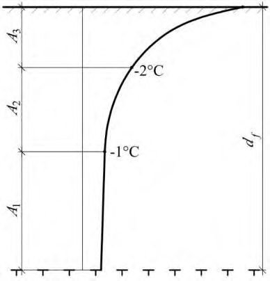
при использовании многолетнемерзлых грунтов по принципу II
- где u - периметр сечения поверхности сдвига, м, принимаемый равным: для свайных и столбчатых фундаментов без анкерной плиты -периметру сечения фундамента; для столбчатых фундаментов с анкерной плитой - периметру анкерной плиты;
- Raf,i - расчетное сопротивление i -го слоя многолетнемерзлого грунта сдвигу по поверхности смерзания, кПа, принимаемое по испытаниям и таблицам приложения В;
- h i - толщина i -го слоя мерзлого или талого грунта, расположенного ниже подошвы слоя сезонного промерзания-оттаивания, м;
- f i - расчетное сопротивление i -го слоя талого грунта сдвигу по поверхности фундамента, кПа, принимаемое в соответствии с требованиями СП 24.13330, с учетом примечания к 7.3.1.
где Afh - площадь боковой поверхности стойки фундамента, находящейся в пределах слоя сезонного промерзания-оттаивания грунта, м² .
Устойчивость фундаментов на действие нормальных сил морозного пучения проверяется по формуле
где pfh - удельное нормальное давление пучения грунта на подошву фундамента и ростверка, кПа, устанавливаемое по опытным данным;
А f - площадь подошвы фундамента и ростверка, м² .
Остальные обозначения те же, что в формуле (7.29).
Расчет по деформациям следует производить с учетом совместной работы сооружения и неравномерно выпучиваемого основания. При этом, возникающие в результате неравномерных поднятий и опусканий фундаментов дополнительные усилия в конструкциях сооружения не должны превышать предельно допустимых значений, а крены и прогибы не препятствовать нормальной эксплуатации сооружения.
8Особенности проектирования оснований и фундаментов на сильнольдистых многолетнемерзлых грунтах и подземных льдах
где dth,n и dths,n - нормативные глубины сезонного оттаивания соответственно природного грунта и грунта подсыпки, м, определяемые согласно приложению Г; th d - допустимая глубина сезонного оттаивания природного грунта под подсыпкой, м.
Требования к материалу подсыпок, способам их укладки и уплотнения устанавливаются в проекте с учетом местных условий и 6.3.11.
Если столбчатые или ленточные фундаменты устанавливаются на многолетнемерзлые грунты, содержащие подземные льды, между их подошвой и слоем подземного льда должна быть прослойка природного грунта, искусственно уложенная с уплотнением грунтовая подушка и (или) несущий теплозащитный экран. Толщину прослойки (подушки) следует принимать исходя из расчета основания по деформации, но не менее четверти ширины подошвы фундамента. Параметры теплозащитного экрана определяются теплотехническим расчетом с учетом теплопередачи от здания к грунту основания по фундаменту.
где sp - осадка, обусловленная уплотнением основания под нагрузкой, определяемая по И.1; s t - осадка, обусловленная пластично-вязким течением грунта за заданный срок эксплуатации сооружения, определяемая по формуле
здесь tu - заданный срок эксплуатации здания (сооружения), лет;
- - скорость осадки, м/год, определяемая исходя из модели линейноили нелинейновязкого полупространства; допускается определять по приложению И.
где t и c обозначения те же, что и в формуле (7.2);
- R расчетное сопротивление сильнольдистого грунта или льда под нижним концом сваи, кПа, определяемое для сильнольдистых грунтов интерполяцией между значениями R по таблицам В.1 и В.7, а для льдов по таблице В.7;
Aw площадь поперечного сечения скважины, м² ; i i,j льдистость за счет ледяных включений j -го слоя грунта;
Rsh,j ; Rsh,i,j расчетные сопротивления сдвигу грунтового раствора по многолетнемерзлому грунту и грунтового раствора по льду для середины j -го слоя, кПа, принимаемые соответственно по таблицам В.4 и В.7;
A sh,j площадь поверхности сдвига в jм слое, определяемая в зависимости от диаметра скважины, м² .
Если прочность смерзания грунтового раствора с поверхностью сваи Raf < Rsh , то расчет несущей способности сваи Fu по формуле (8.4) следует производить при значениях Rsh = Raf , принимая площадь поверхности сдвига в j -м слое грунта Ash,j равной площади поверхности сваи в этом слое.
Примечание - В случаях, когда под торцом сваи предусматривается устройство грунтовой подушки, значение R в формуле (8.4) принимается для грунта подушки. При этом предельная нагрузка на торец сваи определяется по формуле (8.4), как для сваи, диаметр которой равен диаметру скважины, а длина - толщине подушки.
9Особенности проектирования оснований и фундаментов на засоленных многолетнемерзлых грунтах
Засоленные многолетнемерзлые грунты могут использоваться в качестве основания сооружений как по принципу I, так и по принципу II. При этом должно учитываться повышенное коррозийное воздействие засоленных грунтов на материал фундаментов.
Примечание - Пылеватые грунты северного морского побережья с преобладанием солей натрий-калиевого состава относятся к засоленным.
Примечание - Для опускных и буроопускных свай расчетные значения Raf допускается принимать при средневзвешенном значении засоленности грунтов по длине сваи.
10Особенности проектирования оснований и фундаментов на заторфованных многолетнемерзлых грунтах
10.3. Расчет несущей способности оснований столбчатых и свайных фундаментов на заторфованных грунтах при их использовании по принципу I производится согласно 7.2.2-7.2.3. При этом расчетные значения сопротивления этих грунтов нормальному давлению и сдвигу по поверхности смерзания с фундаментом R и Raf следует принимать по опытным данным. Для сооружений пониженного уровня ответственности, а также для предварительных расчетов оснований значения R и Raf допускается принимать по таблице В.8.
Основания фундаментов, возводимых на подсыпках, следует рассчитывать по несущей способности грунтов подсыпки с проверкой силы предельного сопротивления основания на уровне поверхности природных заторфованных грунтов с учетом расчетной глубины сезонного оттаивания. Если расчетная глубина оттаивания больше толщины подсыпки, то основание должно быть также рассчитано по деформациям.
11Особенности проектирования оснований и фундаментов на многолетнемерзлых грунтах в сейсмических районах
Таблица 11.1
| Расчетная сейсмичность | Коэффициент условий работы eq для грунтов | Коэффициент условий работы eq для грунтов | Коэффициент условий работы eq для грунтов |
|---|---|---|---|
| в баллах | твердомерзлых | пластичномерзлых | сыпучемерзлых |
| 7 | 1,0 | 0,9 | 0,95 |
| 8 | 1,0 | 0,8 | 0,9 |
| 9 | 1,0 | 0,7 | 0,8 |
Примечание - При опирании свай-стоек на скальные или несжимаемые крупноблочные грунты значение коэффициента eq принимается равным 1,0.
Для свай в пластичномерзлых грунтах значение Raf следует принимать равным нулю в пределах от верхней границы многолетнемерзлых грунтов до расчетной глубины hd , м, определяемой по формуле
где - коэффициент деформации системы «свая-грунт», определяемый по результатам испытаний в соответствии с 11.6.
где Fh горизонтальная нагрузка, кН, принимаемая равной 0,7 Fh,u ; здесь Fh,u горизонтальная предельная нагрузка, кН, в уровне поверхности грунта, при которой перемещение испытуемой сваи начинает возрастать без увеличения нагрузки;
- u 0 - горизонтальное перемещение сваи в уровне поверхности грунта, м, определяемое по графику зависимости горизонтальных перемещений от нагрузки при условной стабилизации перемещений, если расчет ведется на статические нагрузки, и без условной стабилизации перемещений, если расчет ведется на сейсмические воздействия;
- Eb модуль упругости материала свай, кПа;
- I момент инерции сечения сваи, м 4 .
При действии сейсмических нагрузок, создающих моменты сил в обоих направлениях подошвы фундамента, расчет основания следует производить раздельно на действие сил и моментов в каждом направлении независимо друг от друга.
12Особенности проектирования оснований и фундаментов мостов и труб под насыпями
- возрастание сил морозного пучения грунтов из-за повышенной их влажности вблизи водотоков и уменьшение этих сил при увеличении толщины снегового покрова; нарушение устойчивости береговых склонов вследствие проявления оползневых процессов; появление наледи в пределах сооружений.
Возможность использования многолетнемерзлых грунтов в качестве оснований по принципу II для фундаментов мелкого заложения и свайных должна определяться исходя из требований 6.1.3, 6.1.4 и 6.1.6.
Фундаменты мелкого заложения (на естественном основании) допускается проектировать для мостов, возводимых, как правило, на используемых по принципу II многолетнемерзлых грунтах, если после полного оттаивания таких грунтов осадки и крены опор не превышают предельно допустимых значений по условиям нормальной эксплуатации сооружений.
Для труб следует предусматривать фундаменты мелкого заложения независимо от вида грунтов и принципа их использования в качестве основания при условии, что суммарное значение осадки используемых по принципу II грунтов может быть компенсировано строительным подъемом лотка труб.
Если глубина заложения фундаментов должна быть не менее расчетной глубины промерзания грунта, все фундаменты, за исключением фундаментов или грунтовых подушек для средних звеньев одноочковых труб диаметром до 2 м следует заглублять не менее чем на 0,25 м ниже расчетной глубины промерзания грунта. При этом за расчетную глубину промерзания принимается ее нормативное значение.
Фундаменты или грунтовые подушки средних звеньев одноочковых труб диаметром до 2 м допускается закладывать без учета глубины промерзания грунта.
В случаях, когда глубина заложения фундаментов не зависит от расчетной глубины промерзания грунта, соответствующие грунты, указанные в таблице 5.3 СП 22.13330.2016, должны залегать не менее чем на 1 м ниже нормативной глубины промерзания грунта.
Подошву высокого ростверка свайных фундаментов мостов следует располагать с зазором от поверхности грунта не менее 0,5 м в устоях и 1 м - в промежуточных опорах.
Примечание - Глубину заложения фундаментов и грунтовых подушек под средние звенья труб диаметром 2 м и более следует назначать с учетом уменьшения глубины промерзания грунта в направлении к оси насыпи.
Допускается не определять осадки оснований фундаментов мостов: а) всех систем и пролетов при опирании фундаментов на многолетнемерзлые грунты, используемые по принципу I, за исключением пластичномерзлых глинистых грунтов; б) внешне статически определимых систем железнодорожных мостов с пролетами до 55 м и автодорожных с пролетами до 105 м при опирании фундаментов на используемые по принципу II скальные и другие малосжимаемые при оттаивании грунты.
Расчеты оснований труб следует производить по несущей способности. На сильносжимаемых при оттаивании грунтах, используемых по принципу II, основания труб следует рассчитывать по несущей способности и по деформациям, включая определение их осадки.
Для кратковременной части нагрузок расчетные значения R и Raf исходя из 7.2.3 допускается принимать с повышающим коэффициентом nt , равным: для свайных фундаментов железнодорожных мостов 1,35 - при одновременном действии постоянных и временных вертикальных нагрузок; 1,5 - при действии постоянных и временных совместно с временными горизонтальными нагрузками (включая сейсмические нагрузки); для свайных фундаментов автодорожных мостов - соответственно 1,5 и 1,75.
Для железнодорожных мостов на станционных и подъездных путях, городских, а также других мостов, на которых возможны систематические остановки на неопределенное время поездов или автотранспорта, значение коэффициента c в формуле (7.2) следует принимать равным 1,0.
Расчет по несущей способности оснований фундаментов мелкого заложения на многолетнемерзлых грунтах, используемых по принципу II, следует производить по СП 35.13330.
При использовании грунтов в качестве основания по принципу I в расчете допускается принимать, что каждый свайный элемент жестко заделан в твердомерзлом грунте на глубине d , считая от уровня, соответствующего расчетной (максимальной) температуре, при которой данный грунт переходит в твердомерзлое состояние; здесь d -диаметр или больший размер поперечного сечения элемента в направлении действия внешних нагрузок.
13Особенности проектирования оснований и фундаментов нефтегазопроводов на многолетнемерзлых грунтах
Примечание - Трубопроводы делят на: горячие участки (температура продукта в течение всего года положительная), теплые участки (температура продукта в течение года может быть и положительной и отрицательной, но среднегодовая температура выше 0 °С) и холодные участки (среднегодовая температура продукта ниже 0 °С). К первым относятся нефтепроводы на всем протяжении и газопроводы на небольшом протяжении после компрессорных станций, ко вторым и третьим - только газопроводы.
14Особенности проектирования оснований и фундаментов на склонах
- крутизны, высоты, протяженности, ширины и экспозиции склона;
- проявления глубинных и солифлюкционных оползаний и нарушения растительного покрова, наледеобразования, бугров пучения, термокарста, термоэрозии;
- мощности слоя и характера распространения многолетнемерзлых грунтов (сплошное, прерывистое, островное), наличия жильного и пластового льда, таликов, криопэгов;
- температуры мерзлого грунта во времени по глубине и простиранию склона (изотермы) на стадии строительства, эксплуатации и ликвидации объектов;
- особенностей природных криогенных форм рельефа (каменные глетчеры, курумы и др.), а также формирования техногенных форм (отвалы, карьеры, котлованы, выемки, насыпи и др.);
- геокриологических условий (текстура, влажность, льдистость физикомеханические свойства мерзлых и оттаивающих грунтов), а также характера напластования пород;
- наличия сооружений на склонах, имеющихся деформаций сооружений, а также мероприятий по противооползневой защите;
- интенсивности и характера техногенной нагрузки, особенностей теплового и силового воздействий на склон проектируемых сооружений по продолжительности, охвату территории, количественным значениям температуры, конструктивным особенностям сооружений.
Требования к инженерно-геологическим изысканиям приведены в [1].
В теплое время года в некоторых случаях одновременно могут развиваться солифлюкция и глубинный оползень мерзлого грунта, что следует учитывать в расчетах по несущей способности оснований и при назначении противооползневых мероприятий.
,
(14.1) где φ и c - расчетные значения угла внутреннего трения и удельного сцепления. Для мерзлых грунтов определяются предельно-длительные значения угла внутреннего трения φ L и удельного сцепления cL при проведении испытаний на срез мерзлого грунта, для оттаивающих грунтов φ sh и csh при проведении испытаний на неконсолидированный быстрый срез оттаивающего грунта по мерзлому слою.
Коэффициент надежности γ n по ответственности сооружений принимается равным 1,2; 0,95 и 0,9 соответственно для сооружений повышенного, нормального и пониженного уровней ответственности (ГОСТ 27751).
Коэффициент условий работы γ c принимается равным: для мерзлых дисперсных грунтов ............................................................................. 1,0; для оттаивающих ...................................................................................................... 0,85.
15Геотехнический мониторинг при строительстве сооружений на многолетнемерзлых грунтах
При разработке проекта определяются состав, объемы, периодичность, сроки и методы работ, схемы установки наблюдательных скважин, геодезических марок и реперов, датчиков и приборов, которые назначаются применительно к рассматриваемому объекту строительства (реконструкции) с учетом его специфики, включающей: результаты инженерно-геологических изысканий на площадке строительства, принцип использования многолетнемерзлых грунтов в качестве оснований фундаментов, конструкции охлаждающих устройств, методы предпостроечного оттаивания, особенности конструкций проектируемого сооружения; техническое состояние и конструктивные особенности реконструированного сооружения, а также сооружений окружающей застройки и т.п.
16Экологические требования при проектировании и устройстве оснований и фундаментов на многолетнемерзлых грунтах
АПриложение А. Основные буквенные обозначения величин
Коэффициенты надежности и условий работы
- g - по грунту;
- n - по назначению сооружения;
- k - по виду фундаментов;
- c - коэффициент условий работы;
- t - температурный коэффициент условий работы;
- eq - сейсмический коэффициент условий работы;
- af - коэффициент условий смерзания грунтов с фундаментом;
- p - коэффициент условий работы оттаивающего грунта.
- Физические и теплофизические характеристики грунтов
- n - нормативные значения характеристик;
- - расчетные значения характеристик;
- - средние значения характеристик;
- - доверительная вероятность (обеспеченность) расчетных значений характеристик;
- wtot - суммарная влажность мерзлого грунта;
- wi - влажность мерзлого грунта за счет ледяных включений;
- wic - влажность мерзлого грунта за счет порового льда (льда-цемента);
- wm - влажность мерзлого грунта, расположенного между льдистыми включениями;
- ww - влажность мерзлого грунта за счет незамерзшей воды (содержание незамерзшей воды);
- wp - влажность грунта на границе пластичности (раскатывания);
- i tot - суммарная льдистость мерзлого грунта;
- i i - льдистость грунта за счет ледяных включений;
- i ic - льдистость грунта за счет порового льда;
- Sr - степень заполнения объема пор мерзлого грунта льдом и незамерзшей водой (степень влажности);
- Ip - число пластичности грунта;
- Iom - относительное содержание органического вещества;
- Dsal - степень засоленности мерзлого грунта;
- cp - концентрация порового раствора в засоленном грунте;
- - плотность грунта;
- f - плотность мерзлого грунта;
- d,f - плотность мерзлого грунта в сухом состоянии (плотность скелета мерзлого грунта);
- d,th - плотность талого грунта в сухом состоянии (плотность скелета грунта);
- s - плотность частиц грунта;
- i - плотность льда;
- w - плотность воды;
- ef - коэффициент пористости мерзлого грунта;
- f - теплопроводность грунта в мерзлом состоянии;
- th - теплопроводность грунта в талом состоянии;
- C f - объемная теплоемкость грунта в мерзлом состоянии;
- Cth - объемная теплоемкость грунта в талом состоянии.
Деформационно-прочностные характеристики и сопротивления мерзлых грунтов на силовые воздействия
- Е - модуль деформации грунта;
- μ f -коэффициент Пуассона мерзлого грунта;
- ceq - эквивалентное сцепление мерзлого грунта;
- сL - предельно длительное значение удельного сцепления мерзлого грунта;
- сsh - сцепление оттаивающего грунта;
- L - предельно длительное значение угла внутреннего трения мерзлого грунта;
- sh - угол внутреннего трения оттаивающего грунта;
- mf - коэффициент сжимаемости мерзлого грунта;
- mth - коэффициент сжимаемости оттаивающего грунта;
- i - относительное сжатие льда;
- th - относительная деформация оттаивающего грунта;
- - коэффициент вязкости мерзлого грунта;
- L - предел текучести мерзлого грунта;
- Ath - коэффициент оттаивания мерзлого грунта;
- R -расчетное давление на мерзлый грунт (сопротивление мерзлого грунта нормальному давлению);
- Rc -сопротивление мерзлого грунта под нижним концом сваи, рассчитанное по данным полевых испытаний;
- Raf - сопротивление мерзлого грунта сдвигу по поверхности смерзания с фундаментом;
- Rafc -сопротивление мерзлого грунта сдвигу по поверхности смерзания со сваей, рассчитанное по данным полевых испытаний;
- Rsh - сопротивление мерзлого грунта сдвигу по грунту или грунтовому раствору;
- Rshi - сопротивление сдвигу льда по поверхности смерзания с грунтом или грунтовым раствором;
- fh - удельная касательная сила пучения промерзающего грунта;
- pfh - удельное нормальное давление морозного пучения грунта;
- fn - удельное отрицательное трение оттаивающего грунта на поверхности фундамента;
- - коэффициент деформации системы «свая-грунт» на горизонтальные усилия.
Нагрузки и напряжения
- F - расчетная нагрузка на основание;
- Fu - несущая способность (сила предельного сопротивления) основания фундаментов;
- Fh - расчетная горизонтальная нагрузка на фундамент;
- Fh , u - предельная горизонтальная нагрузка на фундамент;
- Ffh - расчетная сила пучения;
- Fr - сила, удерживающая фундамент от выпучивания;
- Fneg - сила отрицательного (негативного) трения;
- Ff - расчетные усилия в элементах конструкции сооружения (фундаментов);
- Ff,d - предельные усилия в элементах конструкции;
- Fu,p и Fu,t - несущая способность проектируемой и опытной свай;
- М - момент внешних сил;
- Maf - момент внешних сил, воспринимаемый силами смерзания грунта по боковой поверхности фундамента;
- Mb и Ml - моменты внешних сил по сторонам фундамента;
- p - среднее давление под подошвой фундамента;
- p 0 - среднее дополнительное давление под подошвой фундамента;
- q - равномерно распределенная вертикальная нагрузка;
- g - природное (бытовое) давление в грунте;
- z,p - дополнительное вертикальное напряжение в грунте (от веса сооружения);
- a - атмосферное давление.
Осадки (деформации) основания
- s - совместная осадка (деформация) основания и сооружения;
- su - предельно допустимая совместная осадка (деформация) основания и сооружения;
- sf - осадка пластичномерзлого основания;
- sth - составляющая осадки оттаивающего основания за счет природного (бытового) давления;
- sp - составляющая осадки оттаивающего основания под действием нагрузки от здания;
- sp,th - осадка уплотнения предварительно оттаянного слоя грунта;
- sad - дополнительная осадка, обусловленная оттаиванием мерзлого грунта;
- sa и sb - осадки краев фундамента;
- st - осадка мерзлого основания, обусловленная пластично-вязким течением грунта или льда;
- - скорость осадки пластичномерзлого основания.
Параметры теплотехнических расчетов оснований
- Т - температура;
- Т 0 - расчетная среднегодовая температура многолетнемерзлого грунта;
- T 0, n - нормативная среднегодовая температура многолетнемерзлого грунта;
- T' 0 - среднегодовая температура многолетнемерзлого грунта на его верхней поверхности;
- Tm,z,e - расчетные температуры грунтов в основании сооружения;
- Tbf - температура начала замерзания грунта;
- Tоut - температура наружного воздуха;
- Tca - температура воздуха в подполье здания;
- Tin - температура в помещении;
- Tf и Tth - средние температуры воздуха за период с отрицательными и положительными температурами;
- t - время;
- tu - расчетный срок эксплуатации сооружения;
- kh - коэффициент теплового влияния сооружения;
- m,z,e - коэффициент сезонного изменения температуры грунтов основания;
- М - модуль вентилирования подполья здания; R 0 - сопротивление теплопередаче перекрытия над подпольем; Rp - сопротивление теплопередаче теплоизоляции трубопроводов; L -теплота таяния (замерзания) грунта; L 0 - удельная теплота фазовых переходов вода-лед. Геометрические характеристики В - ширина сооружения; L - длина сооружения; a и b - стороны подошвы фундамента; l -длина сваи; е - эксцентриситет; А - площадь подошвы фундамента; Аaf - площадь поверхности смерзания грунта с фундаментом; up - периметр фундамента; ld -глубина заделки свай; d - глубина заложения фундамента; dth - расчетная глубина сезонного оттаивания грунта; dth,n - нормативная глубина сезонного оттаивания грунта; df - расчетная глубина сезонного промерзания грунта; df,n - нормативная глубина сезонного промерзания грунта; h - толщина слоя грунта; Н - глубина оттаивания грунта в основании сооружения за расчетный срок его эксплуатации; H max - максимальная глубина оттаивания грунта под сооружением; Hb,th - глубина предварительного оттаивания грунта; z - глубина до расчетного уровня.
БПриложение Б. Физические и теплофизические характеристики многолетнемерзлых грунтов
- Б.1 В состав физических и теплофизических характеристик, определяемых для многолетнемерзлых грунтов, входят: а) суммарная влажность мерзлого грунта Wtot и влажность мерзлого грунта, расположенного между ледяными включениями Wm ; б) суммарная льдистость мерзлого грунта i tot , представляющая собой отношение содержащегося в мерзлом грунте объема льда к объему мерзлого грунта и льдистость грунта за счет видимых ледяных включений i i , представляющая собой отношение содержащегося в мерзлом грунте объема видимых ледяных включений к объему мерзлого грунта;
- в) степень заполнения объема пор мерзлого грунта льдом и незамерзшей водой Sr, доли единицы;
- г) температура начала замерзания грунта Tbf , С;
- д) влажность мерзлого грунта за счет незамерзшей воды Ww , доли единицы;
- е) теплофизические характеристики грунта (теплопроводность λ, Вт/(м · °С) и удельная теплоемкость С, Дж/(кг ·°С));
- ж) теплота таяния льда (замерзания воды) в грунте Lv ;
- з) степень засоленности Dsal, %;
- и) концентрация порового раствора Cps , доли единицы;
- к) объемная степень заторфованности J , доли единицы;
- л) степень заторфованности G , доли единицы.
- Б.2 Суммарная влажность мерзлого грунта Wtot и влажность мерзлого грунта, расположенного между ледяными включениями Wm, определяются в соответствии с ГОСТ 5180.
- Б.3 Суммарная льдистость мерзлого грунта i tot , льдистость мерзлого грунта за счет включений льда i i , и степень заполнения объема пор мерзлого грунта льдом и незамерзшей водой Sr определяются в соответствии с ГОСТ 25100.
Б.4 Под засоленностью понимается наличие в мерзлом грунте воднорастворимых солей в таком количестве, которое существенно изменяет прочностные и деформационные свойства грунтов.
Степень засоленности грунта Dsal , характеризует относительное содержание в грунте воднорастворимых солей, ее следует определять по ГОСТ 25100 как отношение массы солей gs к массе сухой навески грунта gd (включая массу содержащихся в нем солей) по формуле
По степени засоленности Dsal грунты подразделяют согласно ГОСТ 25100. Концентрация порового раствора Cps характеризует степень минерализации грунтовой влаги. Ее допускается определять по формуле
где W - влажность засоленного грунта, принимаемая для грунтов с льдистостью i tot ≤ 0,4 равной Wtot , а с i tot > 0,4 равной Wm .
Засоленные грунты в зависимости от преобладающего ионного состава легкорастворимых солей разделяются по типу засоления на морской и континентальный в соответствии с ГОСТ 25100.
Б.5 Температура начала замерзания грунта Tbf , характеризует температуру перехода грунта из талого в мерзлое состояние. Температуру начала замерзания незасоленных, засоленных и заторфованных грунтов следует определять опытным путем, а в случаях предусмотренных в 5.9 температуру начала замерзания незасоленных и засоленных грунтов допускается принимать по формуле (Б.3) в зависимости от вида грунта и концентрации порового раствора Cps :
где А - коэффициент, характеризующий температуру начала замерзания незасоленного грунта (таблица Б.1);
- В - коэффициент, зависящий от типа засоления грунта; В = 0 для незасоленных грунтов; В = 1 для грунтов морского типа засоления; В = 0,85 для грунтов с континентальным типом засоления.
Таблица Б.1 Температура начала замерзания незасоленного грунта А
| Грунты | А , °С |
|---|---|
| Пески разных фракций | - 0,10 |
| Супеси и пылеватые пески | - 0,15 |
| Суглинок | - 0,20 |
| Глины | - 0,25 |
Значение Tbf для заторфованных грунтов следует выбирать по величине температуры начала замерзания того компонента (торфяного или минерального), у которого она выше. Величина Tbf для торфа приведена в таблице Б.2.
Таблица Б.2 Расчетные значения температуры начала замерзания Tbf для торфа
| Тип торфа | W tot , доли единицы | Т bf , ° С |
|---|---|---|
| Слаборазложившийся верховой | 7,30 | - 0,14 |
| Слаборазложившийся верховой | 5,90 | - 0,16 |
| Слаборазложившийся верховой | 3,27 | - 0,25 |
| Слаборазложившийся верховой | 1,64 | - 0,35 |
| Среднеразложившийся верховой | 3,50 | - 0,13 |
| Среднеразложившийся верховой | 0,90 | - 0,20 |
Б.6 Влажность незасоленного, засоленного и заторфованного мерзлых грунтов за счет незамерзшей воды Ww определяется опытным путем. В случаях предусмотренных в 5.9 для незасоленного и засоленного грунтов, находящихся в охлажденном состоянии, когда температура грунта выше температуры начала замерзания (0 о С > T > Tbf ), величина Ww принимается для грунтов с льдистостью i tot ≤ 0,4 равной Ww = Wtot , а с i tot > 0,4 равной Ww = Wm .
При условии, что температура грунта ниже или равна температуре начала замерзания ( T Tbf ), для незасоленного и засоленного мерзлых грунтов значения Ww допускается определять по формуле (Б.4)
где kw коэффициент, принимаемый по таблице Б.3 в зависимости от числа пластичности Ip и температуры грунта Т ;
Wp - влажность грунта на границе пластичности (раскатывания), доли единицы;
Dsal степень засоленности грунта, доли единицы;
- -коэффициент, принимаемый равным 0 для незасоленных грунтов и по таблице (Б.4) для засоленных грунтов, в зависимости от числа пластичности Ip и температуры грунта
Т
,
°С, для температур
Т < -
С величина
- принимается равной значению при Т = -15 С; если величина Ww определенная по формуле (Б.4), превысит значение Wtot, тогда Ww= Wtot.
Таблица Б.3 Расчетные значения коэффициента k w
| Грунты | Число пластич- ности I p , доли единицы | Коэффициент k w при температуре грунта T , °С | Коэффициент k w при температуре грунта T , °С | Коэффициент k w при температуре грунта T , °С | Коэффициент k w при температуре грунта T , °С | Коэффициент k w при температуре грунта T , °С | Коэффициент k w при температуре грунта T , °С | Коэффициент k w при температуре грунта T , °С | Коэффициент k w при температуре грунта T , °С | Коэффициент k w при температуре грунта T , °С | Коэффициент k w при температуре грунта T , °С |
|---|---|---|---|---|---|---|---|---|---|---|---|
| -0,3 | -0,5 | -1 | -2 | -3 | -4 | -6 | -8 | -10 | -15 | ||
| Пески (кроме пылеватых) | - | 0 | 0 | 0 | 0 | 0 | 0 | 0 | 0 | 0 | 0 |
| Пески пылеватые | - | 0,50 | 0,35 | 0,30 | 0,25 | 0,23 | 0,22 | 0,21 | 0,20 | 0,19 | 0,18 |
| Супеси | I p ≤ 0,02 | 0,50 | 0,35 | 0,30 | 0,25 | 0,23 | 0,22 | 0,21 | 0,20 | 0,19 | 0,18 |
| Супеси | 0,02 < I p ≤ 0,07 | 0,60 | 0,50 | 0,40 | 0,35 | 0,32 | 0,30 | 0,27 | 0,26 | 0,25 | 0,23 |
| Суглинки | 0,07 < I p ≤ 0,13 | 0,70 | 0,65 | 0,58 | 0,50 | 0,46 | 0,44 | 0,42 | 0,41 | 0,40 | 0,38 |
| Суглинки | 0,13 < I p ≤ 0,17 | 0,80 | 0,75 | 0,65 | 0,55 | 0,51 | 0,49 | 0,47 | 0,46 | 0,45 | 0,43 |
| Глины | I p > 0,17 | 0,98 | 0,92 | 0,80 | 0,68 | 0,63 | 0,60 | 0,57 | 0,56 | 0,55 | 0,53 |
Таблица Б.4 Расчетные значения коэффициента
| Число пластичности I p , доли | Величина коэффициента при температуре грунта Т , °С | Величина коэффициента при температуре грунта Т , °С | Величина коэффициента при температуре грунта Т , °С | Величина коэффициента при температуре грунта Т , °С | Величина коэффициента при температуре грунта Т , °С | Величина коэффициента при температуре грунта Т , °С | Величина коэффициента при температуре грунта Т , °С | Величина коэффициента при температуре грунта Т , °С | Величина коэффициента при температуре грунта Т , °С | Величина коэффициента при температуре грунта Т , °С | |
|---|---|---|---|---|---|---|---|---|---|---|---|
| Грунты | единицы | - 0,3 | - 0,5 | -1 | -2 | -3 | -4 | -6 | -8 | - 10 | - 15 |
| Пески и супеси | I p 0,02 | 210 | 160 | 75 | 34 | 20 | 14 | 9 | 6,5 | 5 | 4 |
| Супеси | 0,02 I p 0,07 | 150 | 130 | 57 | 24 | 15 | 11 | 7 | 5 | 4,5 | 3,5 |
| Суглинки | 0,07 I p 0,13 | 130 | 103 | 44 | 19 | 11 | 8 | 5,5 | 4 | 3,2 | 2,3 |
| Суглинки, глины | 0,13 I p | 102 | 70 | 34 | 17 | 9,5 | 6.5 | 4 | 3 | 2,5 | 2 |
Расчетные значения Ww для торфа и заторфованных грунтов, находящихся в охлажденном состоянии, когда температура грунта выше температуры начала замерзания (0 °С > T > Tbf ), принимаются для грунтов с льдистостью i tot ≤ 0,4 равной Ww = Wtot , а с i tot > 0,4 равной Ww = Wm .
Для мерзлых торфа и заторфованных грунтов значения Ww допускается определять по формуле (Б.5) в зависимости от степени заторфованности J (доли единицы) и температуры Т , при условии, что температура грунта ниже или равна температуре начала замерзания ( T Tbf )
где -параметр, зависящий от объемной степени заторфованности J , принимается по таблице Б.5.
Таблица Б.5 Расчетные значения коэффициента
| Тип грунта | , град 4 |
|---|---|
| Торф | 1,6 |
| Супесчаные заторфованные грунты | 1,67 J - 0,1 |
| Суглинистые заторфованные грунты | 1,6 J |
Б.7 Теплофизические характеристики грунтов: коэффициент теплопроводности , объемная теплоемкость C и коэффициент температуропроводности а определяются опытным путем. В случаях, предусмотренных в 5.9, значения объемной теплоемкости засоленных и незасоленных грунтов в талом, охлажденном Cth и мерзлом Cf состояниях допускается рассчитывать по формулам Б.6 - Б.9 в зависимости от удельной теплоемкости скелета грунта С , температурной и концентрационной зависимостях удельной теплоемкости незамершей воды Сw и льда Сi , влажности Wtot , температурной и концентрационной зависимости влажности за счет незамерзшей воды Ww , плотности сухого грунта d,th,f и температуры начала его замерзания Тbf.
Для незасоленных грунтов, находящихся в талом и охлажденном состояниях, когда температура грунта выше температуры начала замерзания ( T > Tbf ), величина Cth находится по формуле (Б.6)
где С принимается по таблице Б.6; для незасоленных грунтов и торфа Сw = 4200 Дж/(кг · °С), а Tbf находится по таблице Б.2; для засоленных грунтов в охлажденном состоянии (0 ° С > T > Tbf ) Tbf определяется по формуле (Б.3), а величина Сw рассчитывается по формуле (Б.7)
где Сwt - удельная теплоемкость порового раствора, Дж/(кг · °С), определяется по таблице (Б.7.);
C ps - концентрация порового раствора, доли единицы, определяется по формуле (Б.2).
Таблица Б.6 Расчетные значения удельной теплоемкости скелета грунтов С
| Грунты | Глина и | Торф | Торф | ||
|---|---|---|---|---|---|
| Песок | Супесь | суглинок | низинный | верховой | |
| С , Дж/(кг · ° С) | 750 | 850 | 950 | 1920 | 1680 |
Таблица Б.7 Расчетные значения температурной зависимости удельной теплоемкости порового раствора Сwt
| T , °C | C wt , Дж/(кг ∙ °С) | T , °C | C wt , Дж/(кг ∙ °С) | T , °C | C wt , Дж/(кг ∙ °С) |
|---|---|---|---|---|---|
| 0 | 4210 | -2,8 | 3860 | -13,0 | 3510 |
| -0,2 | 4150 | -3,2 | 3840 | -14,0 | 3490 |
| -0,4 | 4110 | -3,6 | 3810 | -15,0 | 3470 |
| -0,6 | 4060 | -4,0 | 3800 | -16,0 | 3450 |
| -0,8 | 4030 | -5,2 | 3730 | -17,0 | 3440 |
| -1,0 | 4010 | -6,0 | 3680 | -18,0 | 3430 |
| -1,2 | 3990 | -6,8 | 3670 | -19,0 | 3410 |
| -1,4 | 3970 | -8,0 | 3630 | -20,0 | 3400 |
| -1,6 | 3950 | -8,8 | 3600 | -21,0 | 3390 |
| -1,8 | 3930 | -10,0 | 3570 | -22,0 | 3380 |
| -2,0 | 3920 | -11,0 | 3550 | ||
| -2,4 | 3900 | -12,0 | 3520 |
Для незасоленных грунтов и торфа в мерзлом состоянии при условии, что температура грунта ниже или равна температуре начала замерзания ( T Tbf ), величина Сf находится по формуле
где Ww рассчитывается по формуле (Б.4), а Ci - по формуле
Для засоленных грунтов в мерзлом состоянии, при условии, что температура грунта ниже или равна температуре начала замерзания ( T Tbf ), величина Сf находится по формуле
где Ww рассчитывается по формуле (Б.4), Сw - по формуле (Б.7), а Ci - по формуле (Б.9). Значения объемной теплоемкости заторфованных грунтов в талом и охлажденном Сth и мерзлом Cf состояниях допускается рассчитывать по формулам (Б.11, Б.12) в зависимости от удельной теплоемкости минеральной С m и торфяной С g составляющей органо-минерального скелета грунта, удельной теплоемкости незамершей воды Сw и льда Сi, весовой (массовой) доли торфа в заторфованном грунте G , суммарной влажности Wtot , влажности за счет незамерзшей воды Ww , плотности скелета грунта d,th,f и температуры начала его замерзания Тbf .
Для заторфованных грунтов, находящихся в талом и охлажденном состоянии, когда температура грунта выше температуры начала замерзания ( T >Tbf ) величина Cth находится по формуле
где удельная теплоемкость минерального скелета С м и торфа С g находится по таблице Б.6; Сw = 4200 Дж/(кг · °С) .
Для заторфованных грунтов, находящихся в мерзлом состоянии, когда температура грунта ниже или равна температуре начала замерзания ( T Tbf ), величина Сf находится по формуле
где Ww рассчитывается по формуле (Б.5), Сw = 4200 Дж/(кг · К), а Ci - по формуле (Б.9).
В случаях, предусмотренных в 5.9, значение коэффициента теплопроводности незасоленных, засоленных и заторфованных грунтов в талом th и мерзлом fm (для диапазона температур ниже T -15 ° C) состоянии приведены в таблице Б.8, в зависимости от влажности Wtot , плотности скелета грунта d,th,f и степени засоленности согласно ГОСТ 25100.
СП 25.13330.2020
Таблица Б.8 Расчетные значения коэффициента теплопроводности грунта в талом λth, мерзлом λf (Т≤ -15 °С) состоянии
| Плотность сухого грунта ρ d , th , ρ df , г/см³ | Суммарная влажность грунта, W tot , д.е. | Коэффициент теплопроводности грунтов λ, Вт/(м·°С) | Коэффициент теплопроводности грунтов λ, Вт/(м·°С) | Коэффициент теплопроводности грунтов λ, Вт/(м·°С) | Коэффициент теплопроводности грунтов λ, Вт/(м·°С) | Коэффициент теплопроводности грунтов λ, Вт/(м·°С) | Коэффициент теплопроводности грунтов λ, Вт/(м·°С) | Коэффициент теплопроводности грунтов λ, Вт/(м·°С) | Коэффициент теплопроводности грунтов λ, Вт/(м·°С) | Коэффициент теплопроводности грунтов λ, Вт/(м·°С) | Коэффициент теплопроводности грунтов λ, Вт/(м·°С) | Коэффициент теплопроводности грунтов λ, Вт/(м·°С) | Коэффициент теплопроводности грунтов λ, Вт/(м·°С) | Коэффициент теплопроводности грунтов λ, Вт/(м·°С) | Коэффициент теплопроводности грунтов λ, Вт/(м·°С) | Коэффициент теплопроводности грунтов λ, Вт/(м·°С) | Коэффициент теплопроводности грунтов λ, Вт/(м·°С) | Коэффициент теплопроводности грунтов λ, Вт/(м·°С) |
|---|---|---|---|---|---|---|---|---|---|---|---|---|---|---|---|---|---|---|
| Плотность сухого грунта ρ d , th , ρ df , г/см³ | Суммарная влажность грунта, W tot , д.е. | Пески разной плотности | Пески разной плотности | Пески разной плотности | Пески разной плотности | Пески разной плотности | Супеси пылеватые | Супеси пылеватые | Супеси пылеватые | Супеси пылеватые | Суглинки и глины | Суглинки и глины | Суглинки и глины | Суглинки и глины | Суглинки и глины | |||
| Плотность сухого грунта ρ d , th , ρ df , г/см³ | Суммарная влажность грунта, W tot , д.е. | Степень засоленности | Степень засоленности | Степень засоленности | Степень засоленности | Степень засоленности | Степень засоленности | Степень засоленности | Степень засоленности | Степень засоленности | Степень засоленности | Степень засоленности | Степень засоленности | Степень засоленности | Степень засоленности | |||
| Плотность сухого грунта ρ d , th , ρ df , г/см³ | Суммарная влажность грунта, W tot , д.е. | Незасоленные | Слабозасоленные | Среднезасоленные | Сильнозасоленные | Незасоленные | Незасоленные | Слабозасоленные | Среднезасоленные | Сильнозасоленные Незасоленные | Сильнозасоленные Незасоленные | Слабозасоленные | Среднезасоленные | Сильнозасоленные | Заторфованные грунты | Заторфованные грунты | ||
| Плотность сухого грунта ρ d , th , ρ df , г/см³ | Суммарная влажность грунта, W tot , д.е. | λ th | λ f | λ f | λ f | λ f | λ th | λ f | λ f | λ f | λ f | λ th | λ f | λ f | λ f | λ f | λ th | λ f |
| 0,1 | 9,0 | - | - | - | - | - | - | - | - | - | - | - | - | - | - | - | 0,81 | 1,34 |
| 0,1 | 6,0 | - | - | - | - | - | - | - | - | - | - | - | - | - | - | - | 0,40 | 0,70 |
| 0,1 | 4,0 | - | - | - | - | - | - | - | - | - | - | - | - | - | - | - | 0,23 | 0,41 |
| 0,1 | 2,0 | - | - | - | - | - | - | - | - | - | - | - | - | - | - | - | 0,12 | 0,23 |
| 0,2 | 4,0 | - | - | - | - | - | - | - | - | - | - | - | - | - | - | - | 0,81 | 1,33 |
| 0,2 | 2,0 | - | - | - | - | - | - | - | - | - | - | - | - | - | - | - | 0,23 | 0,52 |
| 0,3 | 3,0 | - | - | - | - | - | - | - | - | - | - | - | - | - | - | - | 0,93 | 1,39 |
| 0,3 | 2,0 | - | - | - | - | - | - | - | - | - | - | - | - | - | - | - | 0,41 | 0,70 |
| 0,4 | 2,0 | - | - | - | - | - | - | 2,16 | - | - | - | - | 2,10 | - | - | - | 0,93 | 1,39 |
| 0,7 | 1,0 | - | - | - | - | - | - | 2,14 | - | - | - | - | 2,00 | - | - | - | - | - |
| 1,0 | 0,60 | - | - | - | - | - | - | 2,10 | - | - | - | - | 1,90 | - | - | - | - | - |
| 1,2 | 0,40 | - | - | - | - | - | - | 2,02 | - | - | - | 1,57 | 1,80 | - | - | - | - | - |
| 1,4 | 0,35 | - | - | 2,00 | - | - | - | 1,57 | 1,76 | 1,68 | 1,65 | - | - | |||||
| - | - | - | - | - | 1,80 | 1,98 | 1,95 | 1,91 | 1,45 | 1,65 | 1,59 | 1,56 | 1,59 1,50 | - | - | |||
| 1,4 1,4 | 0,30 0,25 | 1,91 | 2,48 | - 2,37 | - 2,21 | - 2,08 | 1,74 1,57 | 1,84 | 1,81 | 1,78 | 1,88 1,73 | 1,33 | 1,58 | 1,50 | 1,46 | 1,36 | - | - |
| 1,4 | 0,20 | 1,57 | 2,09 | 2,00 | 1,90 | 1,82 | 1,33 | 1,63 | 1,58 | 1,53 | 1,48 | 1,10 | 1,31 | 1,23 | 1,20 | 1,10 | - | - |
Окончание таблицы Б.8
| Плотность сухого грунта ρ d , th , ρ df , г/см³ | Суммарная влажность грунта, W tot , д.е. | Коэффициент теплопроводности грунтов λ, Вт/(м·°С) | Коэффициент теплопроводности грунтов λ, Вт/(м·°С) | Коэффициент теплопроводности грунтов λ, Вт/(м·°С) | Коэффициент теплопроводности грунтов λ, Вт/(м·°С) | Коэффициент теплопроводности грунтов λ, Вт/(м·°С) | Коэффициент теплопроводности грунтов λ, Вт/(м·°С) | Коэффициент теплопроводности грунтов λ, Вт/(м·°С) | Коэффициент теплопроводности грунтов λ, Вт/(м·°С) | Коэффициент теплопроводности грунтов λ, Вт/(м·°С) | Коэффициент теплопроводности грунтов λ, Вт/(м·°С) | Коэффициент теплопроводности грунтов λ, Вт/(м·°С) | Коэффициент теплопроводности грунтов λ, Вт/(м·°С) | Коэффициент теплопроводности грунтов λ, Вт/(м·°С) | Коэффициент теплопроводности грунтов λ, Вт/(м·°С) | Коэффициент теплопроводности грунтов λ, Вт/(м·°С) | Коэффициент теплопроводности грунтов λ, Вт/(м·°С) | Коэффициент теплопроводности грунтов λ, Вт/(м·°С) |
|---|---|---|---|---|---|---|---|---|---|---|---|---|---|---|---|---|---|---|
| Плотность сухого грунта ρ d , th , ρ df , г/см³ | Суммарная влажность грунта, W tot , д.е. | Пески разной плотности | Пески разной плотности | Пески разной плотности | Пески разной плотности | Пески разной плотности | Супеси пылеватые | Супеси пылеватые | Супеси пылеватые | Супеси пылеватые | Супеси пылеватые | Суглинки и глины | Суглинки и глины | Суглинки и глины | Суглинки и глины | Суглинки и глины | ||
| Плотность сухого грунта ρ d , th , ρ df , г/см³ | Суммарная влажность грунта, W tot , д.е. | Степень засоленности | Степень засоленности | Степень засоленности | Степень засоленности | Степень засоленности | Степень засоленности | Степень засоленности | Степень засоленности | Степень засоленности | Степень засоленности | Степень засоленности | Степень засоленности | Степень засоленности | Степень засоленности | Степень засоленности | ||
| Плотность сухого грунта ρ d , th , ρ df , г/см³ | Суммарная влажность грунта, W tot , д.е. | Незасоленные | Незасоленные | Слабозасоленные | Среднезасоленные | Сильнозасоленные | Незасоленные | Незасоленные | Слабозасоленные | Среднезасоленные | Сильнозасоленные | Незасоленные | Незасоленные | Слабозасоленные | Среднезасоленные | Сильнозасоленные | Заторфованные грунты | Заторфованные грунты |
| Плотность сухого грунта ρ d , th , ρ df , г/см³ | Суммарная влажность грунта, W tot , д.е. | λ th | λ f | λ f | λ f | λ f | λ th | λ f | λ f | λ f | λ f | λ th | λ f | λ f | λ f | λ f | λ th | λ f |
| 1,4 | 0,15 | 1,39 | 1,83 | 1,75 | 1,65 | 1,58 | 1,10 | 1,35 | 1,30 | 1,25 | 1,20 | 0,87 | 0,99 | 0,94 | 0,92 | 0,87 | - | - |
| 1,4 | 0,10 | 1,10 | 1,35 | 1,30 | 1,25 | 1,21 | 0,93 | 1,09 | 1,06 | 1,03 | 0,99 | 0,70 | 0,77 | 0,75 | 0,73 | 0,71 | - | - |
| 1,4 | 0,05 | 0,75 | 0,84 | 0,82 | 0,80 | 0,77 | 0,64 | 0,73 | 0,71 | 0,69 | 0,67 | 0,46 | 0,48 | 0,43 * | 0,41 * | 0,40 * | - | - |
| 1,6 | 0,30 | - | - | - | - | - | - | - | - | - | - | 1,68 | 1,94 | 1,80 | 1,74 | 1,65 | - | - |
| 1,6 | 0,25 | 2,50 | 2,92 | 2,86 | 2,78 | 2,70 | 1,80 | 2,00 | 1,96 | 1,92 | 1,88 | 1,51 | 1,75 | 1,68 | 1,62 | 1,49 | - | - |
| 1,6 | 0,20 | 2,15 | 2,50 | 2,43 | 2,36 | 2,30 | 1,62 | 1,78 | 1,75 | 1,71 | 1,67 | 1,33 | 1,56 | 1,46 | 1,41 | 1,30 | - | - |
| 1,6 | 0,15 | 1,80 | 2,10 | 2,03 | 1,96 | 1,90 | 1,45 | 1,60 | 1,56 | 1,52 | 1,49 | 1,10 | 1,23 | 1,17 | 1,15 | 1,08 | - | - |
| 1,6 | 0,10 | 1,45 | 1,68 | 1,62 | 1,56 | 1,50 | 1,16 | 1,29 | 1,26 | 1,22 | 1,19 | 0,87 | 0,97 | 0,92 | 0,90 | 0,86 | - | - |
| 1,6 | 0,05 | 1,05 | 1,16 | 1,10 | 1,08, | 1,05 | 0,81 | 0,87 | 0,85 | 0,84 | 0,82 | 0,58 | 0,60 | 0,56 * | 0,55 * | 0,53 * | - | - |
| 1,8 | 0,20 | 2,67 | 3,05 | 2,92 | 2,80 | 2,69 | 1,86 | 2,05 | 2,00 | 1,94 | 1,88 | 1,57 | 1,86 | 1,70 | 1,61 | 1,48 | - | - |
| 1,8 | 0,15 | 2,26 | 2,75 | 2,63 | 2,52 | 2,44 | 1,68 | 1,83 | 1,79 | 1,74 | 1,70 | 1,39 | 1,60 | 1,47 | 1,40 | 1,36 | - | - |
| 1,8 | 0,10 | 1,97 | 2,30 | 2,23 | 2,17 | 2,10 | 1,45 | 1,59 | 1,55 | 1,51 | 1,47 | 1,06 | 1,26 | 1,14 | 1,09 | 1,02 | - | - |
| 1,8 | 0,05 | 1,45 | 1,56 | 1,52 | 1,48 | 1,45 | 0,98 | 0,99 | 0,98 | 0,98 | 0,97 | 0,70 | 0,75 | 0,69 * | 0,68 * | 0,65 * | - | - |
| 2,0 | 0,10 | - | - | - | - | - | - | - | - | - | - | 1,28 | 1,46 | 1,35 | 1,30 | 1,25 | - | - |
Для нахождения величины f у незасоленных и засоленных грунтов в мерзлом состоянии в диапазоне температур Tbf T > Tm , где Tm = -15 °C можно использовать соотношение
где th и fm находятся по таблице Б.8, Ww (T) и Ww (Tm) определяются по формуле (Б.4) для незасоленных грунтов при η = 0, а Tbf - по формуле (Б.3) для незасоленных грунтов при B = 0.
В случаях, предусмотренных в 5.9, значение коэффициента температуропроводности а (м² /с) для незасоленных, засоленных и заторфованных грунтов находится по формуле
где величины коэффициента теплопроводности и объемной теплоемкости С находятся в соответствии с Б.7.
Б.8 Величина объемной теплоты замерзания (таяния) грунта Lv (Дж/м³ ) принимается равной количеству теплоты, необходимой для замерзания воды (таяния льда) в единице объема грунта и определяется по формуле
где L 0 =3,35 10 5 (Дж/кг) - значение удельной теплоты фазовых превращений вода-лед; величина Ww для незасоленных, засоленных и заторфованных грунтов находится в соответствии с Б.6 при условии Tbf T , здесь Tbf находится в соответствии с Б.5.
ВПриложение В. Расчетные значения прочностных характеристик мерзлых грунтов
В.1 Расчетные давления на мерзлые грунты R , расчетные сопротивления мерзлых грунтов и грунтовых растворов сдвигу по поверхностям смерзания фундаментов Raf и расчетные сопротивления мерзлых грунтов сдвигу по грунту или грунтовому раствору Rsh определяются опытным путем. При определении значений R , Raf , Rsh в лабораторных условиях следует проводить испытания на сдвиг в специальных приборах - для определения Raf и Rsh и на одноосное сжатие или на вдавливание шарикового штампа для определения R .
При определении Raf шероховатость поверхности, по которой производится сдвиг смерзшегося в ней образца грунта, должна быть такой же, как фундаментов, применяемых в строительстве.
В.2 При отсутствии опытных данных допускается принимать значения R , Raf и Rsh по таблицам В.1-В.11.
Расчетные давления на мерзлые грунты R под нижним концом сваи принимаются по таблице В.1, под подошвой столбчатого фундамента - по таблице В.2, для мерзлых грунтов с континентальным типом засоления - по таблице В.5, для мерзлых грунтов с морским типом засоления - по таблицам В.7 и В.8, для льда - по таблице В.10, для заторфованных мерзлых грунтов - по таблице В.11.
Расчетные сопротивления мерзлых грунтов и грунтовых растворов сдвигу по поверхностям смерзания с фундаментом принимаются по таблице В.3, для мерзлых засоленных грунтов с континентальным типом засоления - по таблице В.6, для мерзлых грунтов с морским типом засоления - по таблице В.9, мерзлых заторфованных грунтов - по таблице В.11.
Расчетные сопротивления мерзлых грунтов сдвигу по грунту или грунтовому раствору Rsh принимаются по таблице В.4, льдов по грунтовому раствору Rsh,i - по таблице В.10, мерзлых заторфованных грунтов по грунту или грунтовому раствору - по таблице В.12. Значения расчетных сопротивлений мерзлых грунтов как континентального, так и морского типа засоления, сдвигу по грунту или грунтовому раствору Rsh допускается принимать равными Rsh = Raf с учетом В.4.
В.3 Значения Raf в таблицах В.3, В.6, В.9 и В.12 следует умножать на коэффициент af , зависящий от вида поверхности смерзания и принимаемый равным:
СП 25.13330.2020
Примечания
- 1 При сочетании двух перечисленных в В.4 условий коэффициентов γ sh принимают равным 0,6.
- 2 Значения Rsh для буронабивных свай с добавлением в бетон противоморозных или иных химических добавок на основе солей, используемых в качестве оснований и фундаментов зданий и сооружений повышенного уровня ответственности, следует определять путем проведения лабораторных испытаний отдельно в каждом конкретном случае.
- В.5 Мерзлые засоленные грунты в зависимости от преобладающего химического состава солей выделяются по типу засоления - континентальному или морскому - в соответствии с ГОСТ 25100.
Таблица В.1 Расчетные давления на мерзлые незасоленные грунты R под нижним концом сваи
| Глубина погружен ия свай, м | Расчетные давления R , кПа, при температуре грунта, С | Расчетные давления R , кПа, при температуре грунта, С | Расчетные давления R , кПа, при температуре грунта, С | Расчетные давления R , кПа, при температуре грунта, С | Расчетные давления R , кПа, при температуре грунта, С | Расчетные давления R , кПа, при температуре грунта, С | Расчетные давления R , кПа, при температуре грунта, С | Расчетные давления R , кПа, при температуре грунта, С | Расчетные давления R , кПа, при температуре грунта, С | Расчетные давления R , кПа, при температуре грунта, С | Расчетные давления R , кПа, при температуре грунта, С | Расчетные давления R , кПа, при температуре грунта, С | |
|---|---|---|---|---|---|---|---|---|---|---|---|---|---|
| Грунты | Глубина погружен ия свай, м | -0,3 | -0,5 | -1 | -1,5 | -2 | -2,5 | -3 | -3,5 | -4 | -6 -8 | -10 | |
| При льдистости i i < 0,2: | |||||||||||||
| 1 Крупно- обломочные | При любой глубине | 2500 | 3000 | 3500 | 4000 | 4300 | 4500 | 4800 | 5300 | 5800 | 6300 6800 | 7300 | |
| 2 Пески крупные и средней крупности | То же | 1500 | 1800 | 2100 | 2400 | 2500 | 2700 | 2800 | 3100 | 3400 | 3700 4600 | 5500 | |
| 3 Пески мелкие и пылеватые | 3-5 | 850 | 1300 | 1400 | 1500 | 1700 | 1900 | 1900 | 2000 | 2100 | 2600 3000 | 3500 | |
| 3 Пески мелкие и пылеватые | 10 | 1000 | 1550 | 1650 | 1750 | 2000 | 2100 | 2200 | 2300 | 2500 | 3000 3500 | 4000 | |
| 3 Пески мелкие и пылеватые | 15 и более | 1100 | 1700 | 1800 | 1900 | 2200 | 2300 | 2400 | 2500 | 2700 | 3300 3800 | 4300 | |
| 4 Супеси | 3-5 | 750 | 850 | 1100 | 1200 | 1300 | 1400 | 1500 | 1700 | 1800 | 2300 2700 | 3000 | |
| 4 Супеси | 10 | 850 | 950 | 1250 | 1350 | 1450 | 1600 | 1700 | 1900 | 2000 | 2600 3000 | 3500 | |
| 4 Супеси | 15 и более | 950 | 1050 | 1400 | 1500 | 1600 | 1800 | 1900 | 2100 | 2200 | 2900 3400 | 3900 | |
| 5 Суглинки и глины | 3-5 | 650 | 750 | 850 | 950 | 1100 | 1200 | 1300 | 1400 | 1500 | 1800 2300 | 2800 | |
| 5 Суглинки и глины | 10 | 800 | 850 | 950 | 1100 | 1250 | 1350 | 1450 | 1600 | 1700 | 2000 2600 | 3000 | |
| 5 Суглинки и глины | 15 и более | 900 | 950 | 1100 | 1250 | 1400 | 1500 | 1600 | 1800 | 1900 | 2200 2900 | 3500 | |
| При льдистости грунтов 0,2 i i 0,4 | |||||||||||||
| 6 Все виды грунтов, указанные в пунктах 1-5 | 3-5 | 400 | 500 | 600 | 750 | 850 | 950 | 1000 | 1100 | 1150 | 1500 1600 | 1700 | |
| 10 | 450 | 550 | 700 | 800 | 900 | 1000 | 1050 | 1150 | 1250 | 1600 1700 | 1800 | ||
| 15 и более | 550 | 600 | 750 | 850 | 950 | 1050 | 1100 | 1300 | 1350 | 1700 1800 | 1900 |
Таблица В.2 Расчетные давления на мерзлые незасоленные грунты R под подошвой столбчатого фундамента
| Грунты | Расчетные давления R , кПа, при температуре грунта, С | Расчетные давления R , кПа, при температуре грунта, С | Расчетные давления R , кПа, при температуре грунта, С | Расчетные давления R , кПа, при температуре грунта, С | Расчетные давления R , кПа, при температуре грунта, С | Расчетные давления R , кПа, при температуре грунта, С | Расчетные давления R , кПа, при температуре грунта, С | Расчетные давления R , кПа, при температуре грунта, С | Расчетные давления R , кПа, при температуре грунта, С | Расчетные давления R , кПа, при температуре грунта, С | Расчетные давления R , кПа, при температуре грунта, С | Расчетные давления R , кПа, при температуре грунта, С |
|---|---|---|---|---|---|---|---|---|---|---|---|---|
| Грунты | -0,3 | -0,5 | -1 | -1,5 | -2 | -2,5 | -3 | -3,5 | -4 | -6 | -8 | -10 |
| При льдистости грунтов i i < 0,2: | ||||||||||||
| 1 Крупно- обломочные и пески крупные и средней крупности | 550 | 950 | 1250 | 1450 | 1600 | 1800 | 1950 | 2000 | 2200 | 2600 | 2950 | 3300 |
| 2 Пески мелкие и пылеватые | 450 | 700 | 900 | 1100 | 1300 | 1400 | 1600 | 1700 | 1800 | 2200 | 2550 | 2850 |
Окончание таблицы В.2
| Грунты | Расчетные давления R , кПа, при температуре грунта, С | Расчетные давления R , кПа, при температуре грунта, С | Расчетные давления R , кПа, при температуре грунта, С | Расчетные давления R , кПа, при температуре грунта, С | Расчетные давления R , кПа, при температуре грунта, С | Расчетные давления R , кПа, при температуре грунта, С | Расчетные давления R , кПа, при температуре грунта, С | Расчетные давления R , кПа, при температуре грунта, С | Расчетные давления R , кПа, при температуре грунта, С | Расчетные давления R , кПа, при температуре грунта, С | Расчетные давления R , кПа, при температуре грунта, С | Расчетные давления R , кПа, при температуре грунта, С |
|---|---|---|---|---|---|---|---|---|---|---|---|---|
| Грунты | -0,3 | -0,5 | -1 | -1,5 | -2 | -2,5 | -3 | -3,5 | -4 | -6 | -8 | -10 |
| 3 Супеси | 300 | 500 | 700 | 800 | 1050 | 1150 | 1300 | 1400 | 1500 | 1900 | 2250 | 2500 |
| 4 Суглинки и глины | 250 | 450 | 550 | 650 | 800 | 900 | 1000 | 1100 | 1200 | 1550 | 1900 | 2200 |
| При льдистости грунтов i i 0,2: | ||||||||||||
| 5 Все виды грунтов, указанные в поз. 1-4 | 200 | 300 | 400 | 500 | 600 | 700 | 750 | 850 | 950 | 1250 | 1550 | 1750 |
Таблица В.3 Расчетные сопротивления мерзлых незасоленных грунтов и грунтовых растворов сдвигу по поверхности смерзания с фундаментом Raf
| Грунты | Расчетные сопротивления R af , кПа, при температуре грунта, С | Расчетные сопротивления R af , кПа, при температуре грунта, С | Расчетные сопротивления R af , кПа, при температуре грунта, С | Расчетные сопротивления R af , кПа, при температуре грунта, С | Расчетные сопротивления R af , кПа, при температуре грунта, С | Расчетные сопротивления R af , кПа, при температуре грунта, С | Расчетные сопротивления R af , кПа, при температуре грунта, С | Расчетные сопротивления R af , кПа, при температуре грунта, С | Расчетные сопротивления R af , кПа, при температуре грунта, С | Расчетные сопротивления R af , кПа, при температуре грунта, С | Расчетные сопротивления R af , кПа, при температуре грунта, С | Расчетные сопротивления R af , кПа, при температуре грунта, С |
|---|---|---|---|---|---|---|---|---|---|---|---|---|
| Грунты | -0,3 | -0,5 | -1 | -1,5 | -2 | -2,5 | -3 | -3,5 | -4 | -6 | -8 | -10 |
| Глинистые | 40 | 60 | 100 | 130 | 150 | 180 | 200 | 230 | 250 | 300 | 340 | 380 |
| Песчаные | 50 | 80 | 130 | 160 | 200 | 230 | 260 | 290 | 330 | 380 | 440 | 500 |
| Известково- песчаный раствор | 60 | 90 | 160 | 200 | 230 | 260 | 280 | 300 | 350 | 400 | 460 | 520 |
Примечание - Значение Raf для известково-песчаного раствора даны для раствора следующего состава: на 1 м³ раствора песка среднезернистого - 820 л, известкового теста плотностью 1,4 г/см³ - 300 л, воды - 230 л; осадка конуса - 10-12 см. При других составах известково-песчаного раствора, а также для цементно-песчаного раствора значения Raf определяются опытным путем.
Таблица В.4 Расчетные сопротивления мерзлых незасоленных грунтов сдвигу по грунту или грунтовому раствору Rsh
| Грунты | Расчетные давления R sh , кПа, при температуре грунта, С | Расчетные давления R sh , кПа, при температуре грунта, С | Расчетные давления R sh , кПа, при температуре грунта, С | Расчетные давления R sh , кПа, при температуре грунта, С | Расчетные давления R sh , кПа, при температуре грунта, С | Расчетные давления R sh , кПа, при температуре грунта, С | Расчетные давления R sh , кПа, при температуре грунта, С | Расчетные давления R sh , кПа, при температуре грунта, С | Расчетные давления R sh , кПа, при температуре грунта, С | Расчетные давления R sh , кПа, при температуре грунта, С | Расчетные давления R sh , кПа, при температуре грунта, С | Расчетные давления R sh , кПа, при температуре грунта, С |
|---|---|---|---|---|---|---|---|---|---|---|---|---|
| Грунты | -0,3 | -0,5 | -1 | -1,5 | -2 | -2,5 | -3 | -3,5 | -4 | -6 | -8 | -10 |
| Песчаные | 80 | 120 | 170 | 210 | 240 | 270 | 300 | 320 | 340 | 420 | 480 | 540 |
| Глинистые | 50 | 80 | 120 | 150 | 170 | 190 | 210 | 230 | 250 | 300 | 340 | 380 |
Таблица В.5 Расчетные давления на мерзлые засоленные грунты с континентальным типом засоления R под нижним концом сваи
| Расчетные давления R , кПа, при температуре грунта, С | Расчетные давления R , кПа, при температуре грунта, С | Расчетные давления R , кПа, при температуре грунта, С | Расчетные давления R , кПа, при температуре грунта, С | Расчетные давления R , кПа, при температуре грунта, С | Расчетные давления R , кПа, при температуре грунта, С | Расчетные давления R , кПа, при температуре грунта, С | Расчетные давления R , кПа, при температуре грунта, С | Расчетные давления R , кПа, при температуре грунта, С | Расчетные давления R , кПа, при температуре грунта, С | Расчетные давления R , кПа, при температуре грунта, С | Расчетные давления R , кПа, при температуре грунта, С | |
|---|---|---|---|---|---|---|---|---|---|---|---|---|
| -1 | -1 | -1 | -2 | -2 | -2 | -3 | -3 | -3 | -4 | -4 | -4 | |
| Засоленность грунта | Глубина погружения сваи, м | Глубина погружения сваи, м | Глубина погружения сваи, м | Глубина погружения сваи, м | Глубина погружения сваи, м | Глубина погружения сваи, м | Глубина погружения сваи, м | Глубина погружения сваи, м | Глубина погружения сваи, м | Глубина погружения сваи, м | Глубина погружения сваи, м | Глубина погружения сваи, м |
| D sal ,% | 3-5 | 10 | 15 и боле е | 3-5 | 10 | 15 и боле е | 3-5 | 10 | 15 и боле е | 3-5 | 10 | 15 и более |
| Пески мелкие и средние | Пески мелкие и средние | Пески мелкие и средние | Пески мелкие и средние | Пески мелкие и средние | Пески мелкие и средние | Пески мелкие и средние | Пески мелкие и средние | Пески мелкие и средние | Пески мелкие и средние | Пески мелкие и средние | Пески мелкие и средние | Пески мелкие и средние |
| 0,1 | 500 | 600 | 850 | 650 | 850 | 950 | 800 | 950 | 1050 | 900 | 1150 | 1250 |
| 0,2 | 150 | 250 | 350 | 250 | 350 | 450 | 350 | 450 | 600 | 500 | 600 | 750 |
| 0,3 | - | - | - | 150 | 200 | 300 | 250 | 350 | 450 | 350 | 450 | 550 |
| 0,5 | - | - | - | - | - | - | 150 | 200 | 300 | 250 | 300 | 400 |
|---|---|---|---|---|---|---|---|---|---|---|---|---|
| Супеси | ||||||||||||
| 0,15 | 550 | 650 | 750 | 800 | 950 | 1050 | 1050 | 1200 | 1350 | 1350 | 1550 | 1700 |
| 0,3 | 300 | 350 | 450 | 550 | 650 | 800 | 750 | 900 | 1050 | 1000 | 1150 | 1300 |
| 0,5 | - | - | - | 300 | 350 | 450 | 450 | 550 | 650 | 650 | 750 | 900 |
| 1,0 | - | - | - | - | - | - | 200 | 250 | 350 | 350 | 450 | 550 |
| Суглинки | ||||||||||||
| 0,2 | 450 | 500 | 650 | 700 | 800 | 950 | 950 | 1050 | 1200 | 1150 | 1300 | 1400 |
| 0,5 | 150 | 250 | 450 | 350 | 450 | 550 | 550 | 650 | 750 | 750 | 850 | 1000 |
| 0,75 | - | - | - | 200 | 250 | 350 | 350 | 450 | 550 | 600 | 600 | 750 |
| 1,0 | - | - | - | 150 | 200 | 300 | 300 | 350 | 450 | 400 | 500 | 650 |
| Примечание - Значение допускается принимать по настоящей | Примечание - Значение допускается принимать по настоящей | Примечание - Значение допускается принимать по настоящей | Примечание - Значение допускается принимать по настоящей | Примечание - Значение допускается принимать по настоящей | R под подошвой столбчатого фундамента таблице как для свай глубиной погружения 3- | R под подошвой столбчатого фундамента таблице как для свай глубиной погружения 3- | R под подошвой столбчатого фундамента таблице как для свай глубиной погружения 3- | R под подошвой столбчатого фундамента таблице как для свай глубиной погружения 3- | R под подошвой столбчатого фундамента таблице как для свай глубиной погружения 3- | R под подошвой столбчатого фундамента таблице как для свай глубиной погружения 3- | R под подошвой столбчатого фундамента таблице как для свай глубиной погружения 3- | R под подошвой столбчатого фундамента таблице как для свай глубиной погружения 3- |
Таблица В.6 Расчетные сопротивления мерзлых засоленных грунтов с континентальным типом засоления сдвигу по поверхностям смерзания Raf
| Засоленность грунта D sal ,% | Расчетные сопротивления R af , кПа, при температуре грунта, С | Расчетные сопротивления R af , кПа, при температуре грунта, С | Расчетные сопротивления R af , кПа, при температуре грунта, С | Расчетные сопротивления R af , кПа, при температуре грунта, С |
|---|---|---|---|---|
| -1 | -2 | -3 | -4 | |
| Пески мелкие и средние | ||||
| 0,1 | 70 | 110 | 150 | 190 |
| 0,2 | 50 | 80 | 110 | 140 |
| 0,3 | 40 | 70 | 90 | 120 |
| 0,5 | - | 50 | 80 | 100 |
| Супеси | ||||
| 0,15 | 80 | 120 | 160 | 210 |
| 0,3 | 60 | 90 | 130 | 170 |
| 0,5 | 30 | 60 | 100 | 130 |
| 1,0 | - | - | 50 | 80 |
| Суглинки | ||||
| 0,2 | 60 | 100 | 130 | 180 |
| 0,5 | 30 | 50 | 90 | 120 |
| 0,75 | 25 | 45 | 80 | 110 |
| 1,0 | 20 | 40 | 70 | 100 |
Таблица В.7 Расчетные давления R на мерзлые засоленные грунты с морским типом засоления под нижним концом сваи
| Засоленность грунта D sal ,% | Глубина погружения свай, м | Расчетные давления R , кПа, при температуре | Расчетные давления R , кПа, при температуре | Расчетные давления R , кПа, при температуре | Расчетные давления R , кПа, при температуре | Расчетные давления R , кПа, при температуре |
|---|---|---|---|---|---|---|
| Засоленность грунта D sal ,% | Глубина погружения свай, м | -1 | -2 | -3 | -4 | -6 |
| Пески мелкие и пылеватые | Пески мелкие и пылеватые | Пески мелкие и пылеватые | Пески мелкие и пылеватые | Пески мелкие и пылеватые | Пески мелкие и пылеватые | Пески мелкие и пылеватые |
| 0,05 | 3-5 | 610 | 860 | 1000 | 1180 | 1360 |
| 0,1 | 340 | 480 | 600 | 740 | 800 | |
| 0,2 | - | 260 | 360 | 390 | 450 | |
| 0,3 | - | - | 190 | 270 | 350 | |
| 0,5 | - | - | - | 230 | 270 | |
| 0,05 | 10 | 705 | 955 | 1095 | 1275 | 1455 |
| 0,1 | 450 | 590 | 710 | 850 | 910 | |
| 0,2 | - | 310 | 460 | 500 | 560 | |
| 0,3 | - | - | 300 | 380 | 460 | |
| 0,5 | - | - | - | 340 | 380 | |
| 0,05 | 15 и более | 800 | 1050 | 1190 | 1370 | 1550 |
| 0,1 | 550 | 690 | 810 | 950 | 1210 | |
| 0,2 | - | 470 | 570 | 600 | 660 | |
| 0,3 | - | - | 400 | 480 | 560 | |
| 0,5 | - | - | - | 440 | 480 | |
| Супесь | Супесь | Супесь | Супесь | Супесь | Супесь | Супесь |
| 0,15 | 3-5 | 730 | 1050 | 1150 | 1430 | 1620 |
| 0,2 | 450 | 750 | 1000 | 1180 | 1310 | |
| 0,3 | 270 | 580 | 730 | 800 | 880 | |
| 0,5 | - | 220 | 280 | 360 | 450 | |
| 0,8 | - | - | - | 140 | 250 | |
| 0,15 | 10 | 770 | 1090 | 1190 | 1470 | 1660 |
| 0,2 | 490 | 790 | 1040 | 1220 | 1350 | |
| 0,3 | 310 | 620 | 770 | 840 | 920 | |
| 0,5 | - | 260 | 320 | 400 | 490 | |
| 0,8 | - | - | - | 180 | 290 | |
| 0,15 | 15 и более | 840 | 1160 | 1260 | 1540 | 1730 |
| 0,2 0,3 | 650 | 960 | 1200 930 | 1380 1000 | 1510 1080 | |
| 470 | 780 | 650 | ||||
| 0,5 | - | 420 | 470 | 560 | ||
| 0,8 | - | - | - | 340 | 450 | |
| Суглинки тяжелые и глины | Суглинки тяжелые и глины | Суглинки тяжелые и глины | Суглинки тяжелые и глины | Суглинки тяжелые и глины | Суглинки тяжелые и глины | Суглинки тяжелые и глины |
| 0,2 | 3-5 | 410 | 640 | 820 | 1000 | 1360 |
| 0,3 | 290 | 470 | 650 | 820 | 1200 | |
| 0,5 | - | 270 | 410 | 590 | 930 | |
| 0,8 | - | 160 | 270 | 410 | 600 | |
| 1,0 | - | 140 | 230 | 370 | 470 | |
| 1,2 | - | - | 180 | 320 | 440 | |
| 1,5 | - | - | 150 | 270 | 410 | |
| 0,2 | 10 | 510 | 740 | 920 | 1100 | 1460 |
| 0,3 | 390 | 570 | 750 | 920 | 1300 | |
| 0,5 | - | 370 | 510 | 690 | 1030 | |
| 0,8 | - | 260 | 370 | 510 | 700 | |
| 1,0 | - | 240 | 330 | 480 | 570 | |
| 1,2 | - | - | 280 | 420 | 540 | |
| 1,5 | - | - | 240 | 370 | 510 |
Окончание таблицы В.7
| Засоленность грунта D sal | Глубина погружения | Расчетные давления R , кПа, при температуре грунта, ºС | Расчетные давления R , кПа, при температуре грунта, ºС | Расчетные давления R , кПа, при температуре грунта, ºС | Расчетные давления R , кПа, при температуре грунта, ºС | Расчетные давления R , кПа, при температуре грунта, ºС |
|---|---|---|---|---|---|---|
| ,% | свай, м | -1 | -2 | -3 | -4 | -6 |
| Суглинки тяжелые и глины | Суглинки тяжелые и глины | Суглинки тяжелые и глины | Суглинки тяжелые и глины | Суглинки тяжелые и глины | Суглинки тяжелые и глины | Суглинки тяжелые и глины |
| 0,2 | 15 и более | 600 | 830 | 1010 | 1190 | 1550 |
| 0,3 | 480 | 660 | 840 | 1010 | 1390 | |
| 0,5 | - | 460 | 600 | 780 | 1120 | |
| 0,8 | - | 350 | 460 | 600 | 790 | |
| 1,0 | - | 330 | 420 | 570 | 660 | |
| 1,2 | - | - | 370 | 510 | 630 | |
| 1,5 | - | - | 330 | 460 | 600 |
Таблица В.8 Расчетные давления R на мерзлые засоленные грунты с морским типом засоления под подошвой столбчатого фундамента
| Засоленность | Расчетные давления R , кПа, при температуре грунта, ° C | Расчетные давления R , кПа, при температуре грунта, ° C | Расчетные давления R , кПа, при температуре грунта, ° C | Расчетные давления R , кПа, при температуре грунта, ° C | Расчетные давления R , кПа, при температуре грунта, ° C |
|---|---|---|---|---|---|
| грунта, D sal ,% | -1 | -2 | -3 | -4 | -6 |
| Пески мелкие и пылеватые | Пески мелкие и пылеватые | Пески мелкие и пылеватые | Пески мелкие и пылеватые | Пески мелкие и пылеватые | Пески мелкие и пылеватые |
| 0,05 | 530 | 780 | 920 | 1100 | 1280 |
| 0,10 | 260 | 400 | 600 | 760 | 1000 |
| 0,15 | 170 | 250 | 380 | 550 | 740 |
| 0,20 | - | 180 | 240 | 310 | 370 |
| 0,30 | - | - | 110 | 190 | 270 |
| 0,50 | - | - | - | 150 | 190 |
| Супеси | Супеси | Супеси | Супеси | Супеси | Супеси |
| 0,15 | 660 | 980 | 1080 | 1360 | 1550 |
| 0,20 | 380 | 680 | 930 | 1110 | 1240 |
| 0,30 | 200 | 510 | 660 | 730 | 810 |
| 0,50 | - | 150 | 200 | 290 | 380 |
| 0,80 | - | - | - | 70 | 180 |
| Суглинки легкие | Суглинки легкие | Суглинки легкие | Суглинки легкие | Суглинки легкие | Суглинки легкие |
| 0,20 | 250 | 590 | 740 | 1030 | 1400 |
| 0,3 | 110 | 370 | 640 | 880 | 1260 |
| 0,5 | - | 100 | 410 | 610 | 860 |
| 0,8 | - | - | 160 | 280 | 440 |
| 1,0 | - | - | 100 | 180 | 310 |
| 1,2 | - | - | - | - | 240 |
| 1,5 | - | - | - | - | 180 |
Окончание таблицы В.8
| Засоленность грунта, D sal ,% | Расчетные давления R , кПа, при температуре грунта, ° C | Расчетные давления R , кПа, при температуре грунта, ° C | Расчетные давления R , кПа, при температуре грунта, ° C | Расчетные давления R , кПа, при температуре грунта, ° C | Расчетные давления R , кПа, при температуре грунта, ° C |
|---|---|---|---|---|---|
| Засоленность грунта, D sal ,% | -1 | -2 | -3 | -4 | -6 |
| Суглинки тяжелые и глины | Суглинки тяжелые и глины | Суглинки тяжелые и глины | Суглинки тяжелые и глины | Суглинки тяжелые и глины | Суглинки тяжелые и глины |
| 0,2 | 340 | 570 | 750 | 930 | 1290 |
| 0,3 | 220 | 400 | 580 | 750 | 1130 |
| 0,5 | - | 140 | 340 | 520 | 860 |
| 0,8 | - | 90 | 200 | 340 | 530 |
| 1,0 | - | 70 | 160 | 310 | 400 |
| 1,2 | - | - | 110 | 250 | 370 |
| 1,5 | - | - | 80 | 200 | 340 |
Таблица В.9 Расчетные сопротивления срезу по поверхности смерзания Raf мерзлых засоленных грунтов с морским типом засоления
| Засоленность | Расчетные сопротивления R af , кПа, при температуре грунта, º C | Расчетные сопротивления R af , кПа, при температуре грунта, º C | Расчетные сопротивления R af , кПа, при температуре грунта, º C | Расчетные сопротивления R af , кПа, при температуре грунта, º C | Расчетные сопротивления R af , кПа, при температуре грунта, º C |
|---|---|---|---|---|---|
| грунта, D sal ,% | -1 | -2 | -3 | -4 | -6 |
| Пески | Пески | Пески | Пески | Пески | Пески |
| 0,05 | 110 | 170 | 220 | 270 | 320 |
| 0,10 | 50 | 90 | 135 | 170 | 200 |
| 0,15 | 25 | 70 | 110 | 140 | 170 |
| 0,20 | 15 | 55 | 90 | 120 | 150 |
| 0,30 | - | 30 | 65 | 90 | 110 |
| 0,50 | - | 15 | 20 | 30 | 55 |
| 0,80 | - | - | - | - | - |
| Супеси | Супеси | Супеси | Супеси | Супеси | Супеси |
| 0,15 | 60 | 100 | 130 | 180 | 230 |
| 0,20 | 35 | 75 | 110 | 150 | 200 |
| 0,30 | 30 | 55 | 80 | 120 | 160 |
| 0,50 | 20 | 40 | 60 | 80 | 110 |
| 0,80 | 45 | 65 | 90 | ||
| 1,00 | - | 60 | 80 | ||
| Суглинки тяжелые и глины | Суглинки тяжелые и глины | Суглинки тяжелые и глины | Суглинки тяжелые и глины | Суглинки тяжелые и глины | Суглинки тяжелые и глины |
| 0,20 | 40 | 95 | 150 | 210 | 270 |
| 0,30 | 25 | 60 | 110 | 170 | 245 |
| 0,50 | 10 | 30 | 60 | 100 | 150 |
| 0,80 | - | 15 | 45 | 80 | 125 |
| 1,00 | - | - | 30 | 75 | 110 |
| 1,20 | - | - | - | 70 | 80 |
| 1,50 | - | - | - | 55 | 75 |
Таблица В.10 Расчетные давления на лед R под нижним концом сваи и расчетные сопротивления льда сдвигу по поверхности смерзания с грунтовым раствором Rsh,i
| Температура льда, | Расчетные значения, R и R sh,i , кПа | Расчетные значения, R и R sh,i , кПа |
|---|---|---|
| С | R | R sh,i |
| -1 | 50 | 20 |
| -1,5 | 100 | 30 |
| -2 | 140 | 35 |
| -2,5 | 190 | 45 |
| -3 | 230 | 50 |
| -3,5 | 260 | 60 |
| -4 | 280 | 65 |
Таблица В.11 Расчетные давления на мерзлые заторфованные грунты R под нижним концом сваи
| Грунты | Глубина погружения м. | сваи, Значение R , кПа, при температуре | сваи, Значение R , кПа, при температуре | сваи, Значение R , кПа, при температуре | сваи, Значение R , кПа, при температуре | сваи, Значение R , кПа, при температуре | сваи, Значение R , кПа, при температуре | сваи, Значение R , кПа, при температуре | сваи, Значение R , кПа, при температуре | сваи, Значение R , кПа, при температуре | сваи, Значение R , кПа, при температуре | сваи, Значение R , кПа, при температуре | сваи, Значение R , кПа, при температуре |
|---|---|---|---|---|---|---|---|---|---|---|---|---|---|
| Грунты | Глубина погружения м. | -0,3 | -0,5 | -1 | -1,5 | -2 | -2,5 | -3 | -3,5 | -4 | -6 | -8 | -10 |
| Песчаные 0,03< I om ≤0,1 | 180 | 230 | 300 | 400 | 600 | 750 | 950 | 1050 | 1250 | 1550 | 1750 | 1950 | |
| 0,1< I om ≤0,3 | 3-5 | 130 | 170 | 240 | 350 | 480 | 550 | 650 | 750 | 910 | 1050 | 1200 | 1350 |
| 0,3< I om ≤0,5 | 100 | 130 | 170 | 260 | 350 | 440 | 500 | 590 | 690 | 790 | 890 | 1000 | |
| 0,03< I om <0,1 | 230 | 280 | 350 | 450 | 650 | 800 | 1000 | 1100 | 1300 | 1600 | 1800 | 2000 | |
| 0,01< I om ≤0,3 | 10 | 180 | 220 | 290 | 400 | 530 | 600 | 700 | 800 | 960 | 1100 | 1250 | 1400 |
| 0,03< I om ≤0,5 | 150 | 180 | 220 | 310 | 400 | 490 | 550 | 640 | 740 | 840 | 940 | 1050 | |
| 0,03< I om ≤0,1 | 360 | 420 | 490 | 590 | 790 | 940 | 1100 | 1200 | 1400 | 1700 | 1900 | 2100 | |
| 0,1< I om ≤0,3 | 15 | 310 | 350 | 420 | 530 | 660 | 730 | 830 | 930 | 990 | 1230 | 1400 | 1530 |
| 0,3< I om <0,5 | 260 | 290 | 330 | 420 | 530 | 500 | 660 | 750 | 850 | 950 | 1050 | 1160 | |
| Пылевато- глинистые | |||||||||||||
| 0,05< I om <0,1 | 130 | 170 | 250 | 370 | 530 | 640 | 750 | 900 | 1050 | 1150 | 1350 | 1550 | |
| 0,1< I om <0,3 | 3-5 | 110 | 140 | 200 | 300 | 400 | 470 | 590 | 670 | 750 | 870 | 990 | 1100 |
| 0,3< I om <0,5 | 90 | 110 | 150 | 230 | 330 | 400 | 480 | 550 | 600 | 720 | 810 | 910 | |
| 0,05< I om <0,1 | 180 | 220 | 300 | 420 | 580 | 690 | 800 | 950 | 1100 | 1200 | 1400 | 1600 | |
| 0,1< I om <0,3 | 10 | 160 | 190 | 250 | 350 | 450 | 520 | 640 | 720 | 800 | 920 | 1140 | 1150 |
| 0,3< I om <0,5 | 120 | 140 | 180 | 260 | 360 | 430 | 510 | 580 | 650 | 750 | 840 | 940 | |
| 0,05< I om <0,1 | 300 | 350 | 430 | 550 | 710 | 820 | 930 | 1080 | 1230 | 1330 | 1530 | 1730 | |
| 0,1< I om <0,3 | 15 | 280 | 310 | 370 | 470 | 570 | 640 | 760 | 840 | 920 | 1040 | 1160 | 1270 |
| 0,3< I om <0,5 | 240 | 260 | 300 | 380 | 480 | 550 | 630 | 700 | 750 | 870 | 960 | 1060 |
Таблица В.12 Расчетные давления на мерзлые заторфованные грунты под подошвой столбчатого фундамента R , расчетные сопротивления мерзлых заторфованных грунтов сдвигу по поверхности смерзания Raf и расчетные сопротивления мерзлых заторфованных грунтов сдвигу по грунту или грунтовому раствору Rsh
| Грунты | Расчетные значения R, R af, R sh , кПа, при температуре грунта, °С | Расчетные значения R, R af, R sh , кПа, при температуре грунта, °С | Расчетные значения R, R af, R sh , кПа, при температуре грунта, °С | Расчетные значения R, R af, R sh , кПа, при температуре грунта, °С | Расчетные значения R, R af, R sh , кПа, при температуре грунта, °С | Расчетные значения R, R af, R sh , кПа, при температуре грунта, °С | Расчетные значения R, R af, R sh , кПа, при температуре грунта, °С | Расчетные значения R, R af, R sh , кПа, при температуре грунта, °С | Расчетные значения R, R af, R sh , кПа, при температуре грунта, °С | Расчетные значения R, R af, R sh , кПа, при температуре грунта, °С | Расчетные значения R, R af, R sh , кПа, при температуре грунта, °С | Расчетные значения R, R af, R sh , кПа, при температуре грунта, °С |
|---|---|---|---|---|---|---|---|---|---|---|---|---|
| -0,3 | -0,5 | -1 | -1,5 | -2 | -2,5 | -3 | -3,5 | -4 | -6 | -8 | -10 | |
| Расчетные давления на мерзлые заторфованные грунты под подошвой | Расчетные давления на мерзлые заторфованные грунты под подошвой | Расчетные давления на мерзлые заторфованные грунты под подошвой | Расчетные давления на мерзлые заторфованные грунты под подошвой | Расчетные давления на мерзлые заторфованные грунты под подошвой | Расчетные давления на мерзлые заторфованные грунты под подошвой | Расчетные давления на мерзлые заторфованные грунты под подошвой | Расчетные давления на мерзлые заторфованные грунты под подошвой | Расчетные давления на мерзлые заторфованные грунты под подошвой | Расчетные давления на мерзлые заторфованные грунты под подошвой | Расчетные давления на мерзлые заторфованные грунты под подошвой | Расчетные давления на мерзлые заторфованные грунты под подошвой | Расчетные давления на мерзлые заторфованные грунты под подошвой |
| Песчаные: | ||||||||||||
| 0,03 < I om 0,1 | 130 | 180 | 250 | 350 | 550 | 700 | 900 | 1000 | 1200 | 1500 | 1700 | 1900 |
| 0,1 < I om 0,3 | 80 | 120 | 190 | 300 | 430 | 500 | 600 | 700 | 860 | 1000 | 1150 | 1300 |
| 0,3 < I om 0,5 | 60 | 90 | 130 | 220 | 310 | 400 | 460 | 550 | 650 | 750 | 850 | 970 |
| Глинистые: | ||||||||||||
| 0,05 < I om 0,1 | 80 | 120 | 200 | 320 | 480 | 590 | 700 | 850 | 1000 | 1100 | 1300 | 1500 |
| 0,1 < I om 0,3 | 60 | 90 | 150 | 250 | 350 | 420 | 540 | 620 | 700 | 820 | 940 | 1050 |
| 0,3 < I om 0,5 | 40 | 60 | 100 | 180 | 280 | 350 | 430 | 500 | 570 | 670 | 760 | 860 |
| Торф | 20 | 40 | 60 | 120 | 220 | 270 | 320 | 390 | 450 | 520 | 590 | 670 |
| Расчетные сопротивления мерзлых заторфованных грунтов сдвигу | Расчетные сопротивления мерзлых заторфованных грунтов сдвигу | Расчетные сопротивления мерзлых заторфованных грунтов сдвигу | Расчетные сопротивления мерзлых заторфованных грунтов сдвигу | Расчетные сопротивления мерзлых заторфованных грунтов сдвигу | Расчетные сопротивления мерзлых заторфованных грунтов сдвигу | Расчетные сопротивления мерзлых заторфованных грунтов сдвигу | Расчетные сопротивления мерзлых заторфованных грунтов сдвигу | Расчетные сопротивления мерзлых заторфованных грунтов сдвигу | Расчетные сопротивления мерзлых заторфованных грунтов сдвигу | Расчетные сопротивления мерзлых заторфованных грунтов сдвигу | Расчетные сопротивления мерзлых заторфованных грунтов сдвигу | Расчетные сопротивления мерзлых заторфованных грунтов сдвигу |
| Песчаные: | ||||||||||||
| 0,03 < I om 0,1 | 50 | 70 | 90 | 100 | 130 | 160 | 160 | 180 | 210 | 250 | 280 | 320 |
| 0,1 < I om 0,3 | 30 | 40 | 50 | 70 | 90 | 110 | 120 | 140 | 160 | 190 | 220 | 240 |
| 0,3 < I om 0,5 | 20 | 30 | 40 | 60 | 70 | 80 | 90 | 110 | 130 | 150 | 170 | 190 |
| Глинистые: | ||||||||||||
| 0,05 < I om 0,1 | 20 | 40 | 60 | 80 | 100 | 110 | 130 | 150 | 180 | 200 | 230 | 270 |
| 0,1 < I om 0,3 | 10 | 20 | 30 | 50 | 60 | 70 | 90 | 100 | 120 | 140 | 160 | 180 |
| 0,3 < I om 0,5 | 5 | 10 | 20 | 30 | 50 | 60 | 80 | 90 | 100 | 120 | 140 | 160 |
| Торф | 3 | 5 | 8 | 25 | 40 | 50 | 70 | 80 | 90 | 110 | 120 | 140 |
| Расчетные сопротивления мерзлых заторфованных грунтов сдвигу по грунту | Расчетные сопротивления мерзлых заторфованных грунтов сдвигу по грунту | Расчетные сопротивления мерзлых заторфованных грунтов сдвигу по грунту | Расчетные сопротивления мерзлых заторфованных грунтов сдвигу по грунту | Расчетные сопротивления мерзлых заторфованных грунтов сдвигу по грунту | Расчетные сопротивления мерзлых заторфованных грунтов сдвигу по грунту | Расчетные сопротивления мерзлых заторфованных грунтов сдвигу по грунту | Расчетные сопротивления мерзлых заторфованных грунтов сдвигу по грунту | Расчетные сопротивления мерзлых заторфованных грунтов сдвигу по грунту | Расчетные сопротивления мерзлых заторфованных грунтов сдвигу по грунту | Расчетные сопротивления мерзлых заторфованных грунтов сдвигу по грунту | Расчетные сопротивления мерзлых заторфованных грунтов сдвигу по грунту | Расчетные сопротивления мерзлых заторфованных грунтов сдвигу по грунту |
| Песчаные: | ||||||||||||
| 0,03 < I om 0,1 | 30 | 60 | 100 | 140 | 160 | 190 | 230 | 250 | 270 | 310 | 330 | 350 |
| 0,1 < I om 0,3 | 10 | 30 | 50 | 70 | 110 | 120 | 130 | 150 | 180 | 200 | 230 | 260 |
| 0,3 < I om 0,5 | 8 | 20 | 40 | 60 | 80 | 90 | 100 | 120 | 140 | 150 | 180 | 210 |
| Глинистые: | ||||||||||||
| 0,05 < I om 0,1 | 20 | 50 | 70 | 90 | 110 | 120 | 140 | 170 | 200 | 250 | 270 | 300 |
| 0,1 < I om 0,3 | 5 | 30 | 40 | 50 | 70 | 80 | 100 | 110 | 130 | 180 | 190 | 200 |
| 0,3 < I om 0,5 | 3 | 20 | 30 | 40 | 60 | 70 | 90 | 100 | 110 | 140 | 150 | 170 |
| Торф | 2 | 10 | 20 | 30 | 40 | 60 | 80 | 90 | 100 | 120 | 140 | 160 |
Таблица В.13 Нормативные предельно длительные значения удельного сцепления сL, кПа, и угла внутреннего трения L, град, для мерзлых грунтов и контакта грунта со скалой
| Грунты | Об озн аче ни я хар акт ер ист ик | Характеристики грунтов при температуре грунта, °C | Характеристики грунтов при температуре грунта, °C | Характеристики грунтов при температуре грунта, °C | Характеристики грунтов при температуре грунта, °C | Характеристики грунтов при температуре грунта, °C | Характеристики грунтов при температуре грунта, °C | Характеристики грунтов при температуре грунта, °C | Характеристики грунтов при температуре грунта, °C | Характеристики грунтов при температуре грунта, °C | Характеристики грунтов при температуре грунта, °C | Характеристики грунтов при температуре грунта, °C | Характеристики грунтов при температуре грунта, °C |
|---|---|---|---|---|---|---|---|---|---|---|---|---|---|
| Грунты | Об озн аче ни я хар акт ер ист ик | - 0,5 | -1,0 | -1,5 | -2,0 | -2,5 | -3,0 | -3,5 | -4,0 | -5,0 | -6,0 | -8,0 | -10,0 |
| Песчаные гравелист | c L | 80 | 110 | 140 | 170 | 200 | 230 | 250 | 300 | 360 | 420 | 520 | - |
| ые пески с содержани ем пылеватой фракции более8% | φ L | 28 | 28 | 30 | 30 | 32 | 32 | 32 | 32 | 33 | 33 | 33 | - |
| Контакт | c L | 70 | 90 | 120 | 150 | 180 | 200 | 220 | 270 | 280 | 330 | 410 | - |
| песчаных грунтов со скалой (скальные образцы с размерами выступов 0,5-2,0 мм) | φ L | 16 | 16 | 17 | 17 | 18 | 18 | 18 | 18 | 19 | 19 | 19 | - |
| Песок | c L | - | 140 | - | 160 | - | - | - | 195 | - | 387 | - | 806 |
| Песок | φ L | - | 25 | - | 31 | - | - | - | 38 | - | 39 | - | 45 |
| Супесь | c L | - | 181 | - | 209 | - | - | - | 324 | - | 577 | - | 790 |
| Супесь | φ L | - | 15 | - | 22 | - | - | - | 25 | - | 27 | - | 28 |
| Суглинок | c L | - | 109 | - | 131 | - | - | - | 275 | - | 350 | - | 462 |
| Суглинок | φ L | - | 9 | - | 11 | - | - | - | 12 | - | 13 | - | 31 |
| Глина | c L | - | 104 | - | 122 | - | - | - | 275 | - | 360 | - | 480 |
| φ L | - | 9 | - | 11 | - | - | - | 14 | - | 16 | - | 31 |
Таблица В.14 Нормативные значения удельного сцепления сsh, кПа, и угла внутреннего трения sh , град, оттаивающего глинистого грунта
| Обозначения характеристик грунтов | Характеристики грунтов при значении показателя текучести I L , доли единицы | Характеристики грунтов при значении показателя текучести I L , доли единицы | Характеристики грунтов при значении показателя текучести I L , доли единицы | Характеристики грунтов при значении показателя текучести I L , доли единицы | Характеристики грунтов при значении показателя текучести I L , доли единицы | Характеристики грунтов при значении показателя текучести I L , доли единицы |
|---|---|---|---|---|---|---|
| 0,25 | 0,35 | 0,5 | 0,625 | 0,75 | 1,00 | |
| с sh , кПа | 21 | 19 | 17 | 15 | 13 | 9 |
| sh , град | 32 | 28 | 23 | 19 | 14 | 5 |
ГПриложение Г. Среднегодовая температура и глубина сезонного оттаивания и промерзания грунта
- Г.1 Нормативная глубина сезонного оттаивания грунта dth,n , м, определяется по данным натурных наблюдений по формуле
где d'th наибольшая глубина сезонного оттаивания грунта в годовом периоде, м, устанавливаемая по данным натурных наблюдений;
T bf температура начала замерзания грунта, С, определяемая по приложению Б; Tth,m и tth,m соответственно средняя по многолетним данным температура воздуха за период положительных температур, C, и продолжительность этого периода, ч, принимаемые по СП 131.13330, причем для климатических подрайонов IБ и IГ значения Tth,m и t th,m следует принимать с коэффициентом 0,9;
- T th и t th соответственно средняя температура воздуха, C, за период положительных температур и продолжительность этого периода, ч, в год проведения наблюдений, принимаемые по метеоданным.
- Г.2 Нормативная глубина сезонного промерзания грунта df,n , м, определяется по формуле
где d'f наибольшая глубина сезонного промерзания грунта в годовом периоде, м, устанавливаемая по данным натурных наблюдений;
- Tf,m и t f,m соответственно средняя по многолетним данным температура воздуха за период отрицательных температур, С, и продолжительность этого периода, ч, принимаемые по СП 131.13330;
- T f и t f соответственно средняя температура воздуха, С, за период отрицательных температур и продолжительность этого периода, ч, в год проведения наблюдений, принимаемые по метеоданным.
- Г.3 При отсутствии данных натурных наблюдений нормативную глубину сезонного оттаивания грунта dth,n , м, допускается определять по формуле
где t t
Tbf - обозначение то же, что в формулах (Г.1) - (Г.2);
Tth,c - расчетная температура поверхности грунта в летний период, С, определяемая по формуле
t th,с - расчетный период положительных температур, ч, определяемый по формуле
1 - время, принимаемое равным 1,3 10 7 с (3600 ч);
2 - время, принимаемое равным 2,7 10 7 с (7500 ч);
T 0 - расчетная среднегодовая температура многолетнемерзлого грунта, С, определяемая по Г.8;
th и f теплопроводность соответственно талого и мерзлого грунта, Вт/(м С);
Cth и Cf объемная теплоемкость соответственно талого и мерзлого грунта, Дж/(м³ С); km коэффициент, принимаемый для песчаных грунтов равным 1,0, а для глинистых - по таблице Г.1 в зависимости от значения теплоемкости Cf и средней температуры грунта, С, определяемой по формуле
L - теплота таяния (замерзания) грунта, Дж/м³ , определяемая по приложению Б при температуре грунта, равной 0,5 T , С.
Таблица Г.1 Коэффициент km
| Температура, С | Значения коэффициента k m при объемной теплоемкости C f , Дж/(м³ С) | Значения коэффициента k m при объемной теплоемкости C f , Дж/(м³ С) | Значения коэффициента k m при объемной теплоемкости C f , Дж/(м³ С) | Значения коэффициента k m при объемной теплоемкости C f , Дж/(м³ С) |
|---|---|---|---|---|
| 1,3 10 6 | 1,7 10 6 | 2,1 10 6 | 2,5 10 6 | |
| -1 | 6,8 | 5,9 | 5,3 | 5,0 |
| -2 | 5,2 | 4,5 | 4,0 | 3,7 |
| -4 | 3,7 | 3,2 | 2,8 | 2,5 |
| -6 | 3,0 | 2,6 | 2,3 | 2,1 |
| -8 | 2,5 | 2,2 | 1,9 | 1,6 |
| -10 | 1,8 | 1,6 | 1,4 | 1,2 |
Г.4 Нормативная глубина сезонного промерзания грунта df,n , м, определяется по формуле
где
$$q 2 = L - 0,5 Cf ( Tf,m - Tbf ), (Г.10)$$ здесь L - теплота замерзания грунта, Дж/м³ , определяемая по приложению Б при температуре грунта, равной 0,5( Tf,m - Tbf ), С.
Остальные обозначения те же, что в формуле (Г.2).
- Г.5 В случаях, когда предусматриваются вертикальная планировка территории подсыпкой, регулирование поверхностного стока и другие мероприятия, приводящие к понижению уровня подземных вод, значения теплофизических характеристик при расчете нормативных глубин сезонного оттаивания и промерзания грунтов по формулам (Г.3) и (Г.9) следует принимать при влажности грунта, равной: для крупнообломочных грунтов.............................................................................. 0,04;
- » песков (кроме пылеватых) ................................................................................ 0,07;
- » песков пылеватых .............................................................................................. 0,10;
» глинистых грунтов ...................................................................................... wp
+0,5
Ip
» заторфованных грунтов ................................................................................... 1,1 wp где
Ip и wp
- соответственно число пластичности и влажности грунта на границе пластичности.
- Г.6 Расчетная глубина сезонного оттаивания dth и расчетная глубина сезонного промерзания грунта df определяются по формулам:
$$, th h th n d k d = ; (Г.11)$$
$$df = khdf , n , (Г.12)$$ где dth,n и df,n - нормативные глубины соответственно сезонного оттаивания и сезонного промерзания грунта; k' h и kh - коэффициенты теплового влияния сооружения, принимаемые по таблице Г.2.
Таблица Г.2 Коэффициенты k'h и kh
| Сооружения | k' h | k h |
|---|---|---|
| Здания и сооружения без холодного подполья | - | В соответствии с требованиями СП 22.13330 |
| Здания и сооружения с холодным подпольем: у наружных стен с отмостками, имеющими асфальтовое и тому подобное покрытия у | 1,2 | - |
| наружных стен с отмостками без асфальтовых покрытий | 1,0 | - |
| у внутренних опор | 0,8 | - |
| Мосты: промежуточные массивные опоры с фундаментами мелкого заложения или фундаментами из свай и свай-столбов с плитой (ростверком), заглубленной в грунт при ширине опор по фасаду: от 2 до 4 м 4 м и более | 1,3 | 1,2 |
| 1,5 | 1,3 | |
| промежуточные столбчатые и свайные опоры, рамно-стоечные опоры с фундаментами мелкого заложения | 1,2 | 1,1 |
| обсыпные устои | 1,0 | 1,0 |
;
,
Примечания
1 Данные таблицы не распространяются на случаи применения теплоизоляции и других специальных теплозащитных мероприятий (вентилируемые и теплоизолирующие подсыпки, охлаждающие устройства и т. д.).
- 2 Для устоев мостов, обсыпанных песчаным грунтом, значения k ' h и kh следует принимать по данным теплотехнического расчета, но не менее 1,2.
- Г.7 Нормативное значение среднегодовой температуры многолетнемерзлого грунта T 0, n определяется по данным полевых измерений температуры грунтов на опытных площадках с естественными условиями. Допускается значение T 0, n принимать равным температуре грунта на глубине 10 м от поверхности.
- Г.8 При отсутствии нормативного значения среднегодовой температуры многолетнемерзлого грунта T 0, n допускается использовать расчетное значение данного параметра. Расчетная среднегодовая температура многолетнемерзлого грунта T 0, С, устанавливается на основании прогнозных расчетов изменения температурного режима грунтов на застраиваемой территории. Для сооружений повышенного уровня ответственности сроком эксплуатации более 20 лет при выполнении прогнозных расчетов температурного режима грунтов рекомендуется учитывать региональные климатические и геокриологические особенности и их изменение во времени. Сценарий изменения температуры приземного воздуха, используемый при расчете, рекомендуется принимать по актуальным данным федерального органа исполнительной власти, осуществляющего функции по оказанию государственных услуг в области гидрометеорологии и смежных с ней областях и мониторинга окружающей среды, или в соответствии с линейной зависимостью изменения, построенной по архивным данным за весь период наблюдений репрезентативной метеорологической станции.
Допускается определять значение T 0, С, по формуле
где t y - продолжительность года, принимаемая равной 3,15 10 7 с (8760 ч);
Tf,m и t f,m - соответственно средняя по многолетним данным температура воздуха в период отрицательных температур, С, и продолжительность этого периода, с (ч), принимаемые по СП 131.13330; d th,n - нормативная глубина сезонного оттаивания, м, для предварительных расчетов допускается принимать по рисунками Г.1 и Г.2;
L - теплота таяния (замерзания) грунта, Дж/м³ , определяемая по приложению Б;
R s - термическое сопротивление снегового покрова, м² · С/Вт, определяемое по формуле
где ds - среднезимняя высота снегового покрова, м, принимаемая по метеоданным;
s - среднезимняя теплопроводность снегового покрова, Вт/м · С, определяется по формуле
где md - пересчетный множитель, принимаемый равным 1,16 м² · Вт/(т · С);
- ρ s - среднезимняя плотность снегового покрова, т/м³ , принимаемая по метеоданным.
Примечания
- 1 В районах со средней скоростью ветра в зимний период свыше 5 м/с рассчитанное по формуле (Г.13) значение Rs следует увеличивать в 1,3 раза.
- 2 Если при расчете по формуле (Г.12) T 0 > Tbf , то следует принимать Т 0 = Тbf .
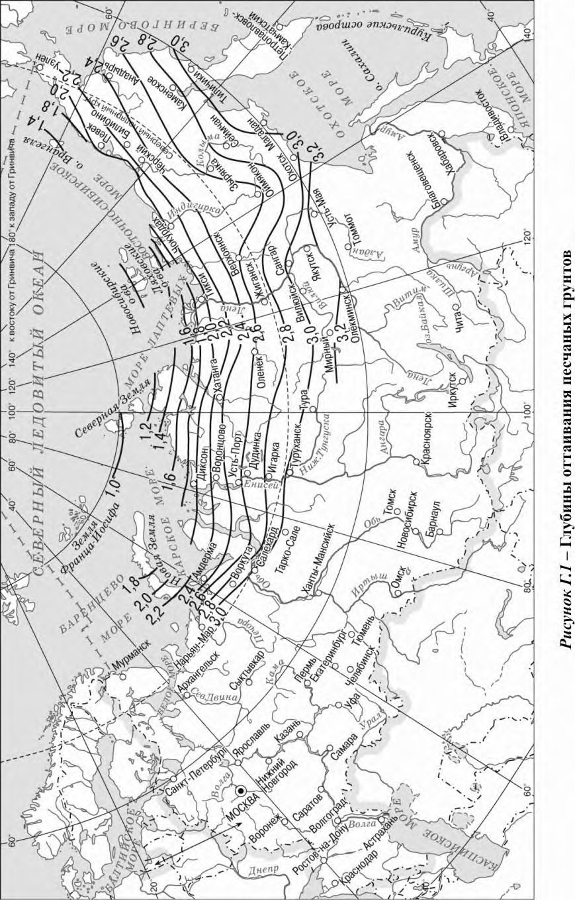
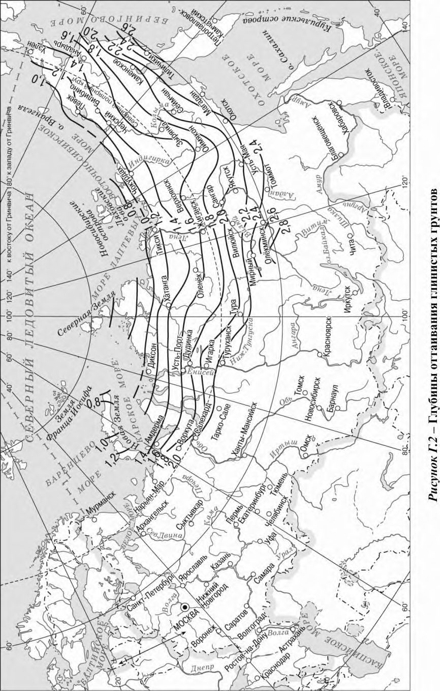
ДПриложение Д. Расчет температурного режима вентилируемого подполья
Д.1 Температурный режим вентилируемого подполья характеризуется среднегодовой температурой воздуха в подполье Тс,а , устанавливаемой расчетом в зависимости от предусмотренного проектом значения среднегодовой температуры многолетнемерзлого грунта на его верхней поверхности Т' 0 (7.2.8), теплового режима сооружения и режима вентилирования подполья.
Д.2 Среднегодовая температура воздуха в вентилируемом подполье Тс,а , С, обеспечивающая предусмотренную в проекте среднегодовую температуру многолетнемерзлого грунта на его верхней поверхности Т' 0, С, вычисляется по формуле
где k 0 - коэффициент, принимаемый по таблице Д.1 в зависимости от значений t f,n и f th , где t f,n продолжительность периода с отрицательной среднесуточной температурой воздуха, сут, принимаемая по СП 131.13330;
f и th теплопроводность соответственно мерзлого и талого грунтов.
Таблица Д.1 Коэффициент k 0
| f th | Значения коэффициента k 0 при t f,n , сут | Значения коэффициента k 0 при t f,n , сут | Значения коэффициента k 0 при t f,n , сут | Значения коэффициента k 0 при t f,n , сут | Значения коэффициента k 0 при t f,n , сут |
|---|---|---|---|---|---|
| f th | 200 | 225 | 250 | 275 | 300 |
| 1,0 | 1,0 | 1,0 | 1,0 | 1,0 | 1,0 |
| 1,1 | 0,87 | 0,96 | 0,98 | 0,99 | 1,0 |
| 1,2 | 0,78 | 0,93 | 0,97 | 0,99 | 1,0 |
| 1,3 | 0,72 | 0,90 | 0,96 | 0,99 | 1,0 |
- Д.3 Среднегодовая температура многолетнемерзлого грунта на его верхней поверхности Т ' 0, °С, устанавливаемая при эксплуатации сооружений, назначается из условия обеспечения требуемых расчетных температур грунта охлаждающими устройствами. Для зданий и сооружений значение Т ' 0 определяется по формуле
где Т 0 - температура многолетнемерзлого грунта, °С;
∆ T - понижение температуры, которое должно быть обеспечено охлаждающими устройствами (проветриваемое подполье, охлаждающие трубы. СОУ и т.д.), °С, принимается по таблице Д.2.
Таблица Д.2 Понижение температуры ∆ T
| Среднегодовая температура грунта с учетом температуры начала замерзания ( Т 0 - T bf ), °C | Понижение температуры ∆ T , °C |
|---|---|
| ( Т 0 - T bf ) > -0,5 | -2,5 |
| -0,5 ≥ ( Т 0 - T bf ) > -1,0 | -1,5 |
| -1,0 ≥ ( Т 0 - T bf ) > -1,5 | -0,5 |
| -1,5 ≥ ( Т 0 - T bf ) > -6,0 | 0 |
| Примечание - При Т 0 - T bf ниже минус 6 °С допускается повышение природных температур многолетнемерзлых грунтов до значения Т' 0 , которое обеспечивает требуемую несущую способность основания. | Примечание - При Т 0 - T bf ниже минус 6 °С допускается повышение природных температур многолетнемерзлых грунтов до значения Т' 0 , которое обеспечивает требуемую несущую способность основания. |
- Д.4 Установленная расчетом по Д.2 среднегодовая температура воздуха в подполье Тс,а при естественном вентилировании подполья за счет ветрового напора обеспечивается подбором модуля его вентилирования М , определяемого соотношением
где A -для подполий с продухами -общая площадь продухов; для открытых подполий - площадь, равная произведению периметра здания на расстояние от поверхности грунта или отмостки до низа ростверка свайного фундамента или фундаментных балок, м² ;
Ab площадь здания в плане по наружному контуру, м² .
Примечание - При отношении высоты подполья hc к ширине здания В менее 0,02 следует применять вентиляцию с механическим побуждением.
- Д.5 Модуль вентилирования М , необходимый для обеспечения расчетной температуры воздуха в подполье Тс,а при его естественном вентилировании, вычисляется по формуле
где kc коэффициент, принимаемый в зависимости от расстояния между зданиями а и их высотой h, равным:
1,0 при а 5 h ;
1,2 при а = 4 h ;
1,5 при а 3 h ;
Tin расчетная температура воздуха в помещении, С;
Tout среднегодовая температура наружного воздуха, С;
R 0 - сопротивление теплопередаче перекрытия над подпольем, м² С/Вт;
- C -объемная теплоемкость воздуха, принимаемая равной 1300 Дж/(м³ С);
- ka обобщенный аэродинамический коэффициент, учитывающий давление ветра и гидравлические сопротивления, принимаемый равным: для сооружений прямоугольной формы ka = 0,37; П-образной формы ka = 0,3; Т-образной формы ka = 0,33 и L-образной формы ka = 0,29;
- Va средняя годовая скорость ветра, м/с (м/ч);
- - безразмерный параметр; для открытых подполий принимается равным 0; для подполий с продухами определяется по формуле
где Az - площадь цоколя для подполий с продухами, м² ;
R z - сопротивление теплопередаче цоколя, м² С/Вт;
- - параметр, учитывающий влияние расположенных в подполье коммуникаций на его тепловой режим, С, определяемый по формуле
где n число трубопроводов; l p,j длина j -го трубопровода, м;
Tp,j температура теплоносителя в j -м трубопроводе, С; t p,j время работы j -го трубопровода в течение года, сут; ty продолжительность года, равная 365 сут;
Rp,j сопротивление теплопередаче теплоизоляции j -го трубопровода, м С/Вт;
- i коэффициент потери напора на отдельных участках подполья, принимаемый по таблице Д.3.
Таблица Д.3 Коэффициент i
| Участок подполья | i |
|---|---|
| Вход с сужением потока | 0,50 |
| Жалюзийная решетка | 2,00 |
| Поворот потока на 90 | 1,32 |
| Вход с расширением потока | 0,64 |
ЕПриложение Е. Расчет оснований при строительстве по способу стабилизации верхней поверхности многолетнемерзлых грунтов
Е.1 При строительстве по способу стабилизации верхней поверхности многолетнемерзлого грунта (6.4.4) глубина заложения фундаментов d должна удовлетворять условию
где hth - глубина залегания верхней поверхности многолетнемерзлого грунта на начало эксплуатации сооружения, м; d f,n - нормативная глубина сезонного промерзания грунта, м.
Е.2 Расчет оснований фундаментов по несущей способности и деформациям следует производить в соответствии с требованиями СП 22.13330, СП 24.13330, настоящего свода правил.
Проверку фундаментов на устойчивость и прочность на воздействие сил морозного пучения грунтов необходимо производить согласно 7.4.1-7.4.5, принимая расчетную глубину сезонного промерзания грунта df = df,n +1, м.
- Е.3 Требуемый температурный режим грунтов оснований обеспечивается холодным подпольем, модуль вентилирования которого М определяется по формуле (Д.4), принимая среднегодовую температуру воздуха в подполье Tc,a , С, равной
где f - коэффициент, определяемый по графикам рисунка Е.1 в зависимости от значений параметров f и f , определяемых по формулам
где tu - расчетный срок эксплуатации сооружения, с (ч).
Остальные обозначения те же, что в формулах приложения Д.
Рисунок Е.1 - Графики для определения коэффициента f
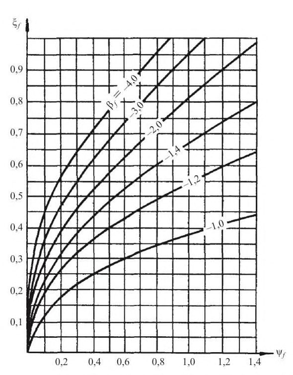
Е.4 Положение верхней поверхности многолетнемерзлого грунта под сооружением при принятой в Е.3 расчетной температуре воздуха в подполье Тс,а должно быть проверено расчетом по глубине оттаивания грунта под сооружением Н , определяемой в соответствии с К.5, принимая в формуле (К.15) значение Tin = Тс,а + 1,1, С и коэффициент R = 0.
В случае, если при полученной расчетом глубине оттаивания грунта Н (считая от поверхности многолетнемерзлого грунта), осадка основания превышает предельно допустимое для данного сооружения значение, следует предусматривать дополнительные мероприятия по регулированию глубины оттаивания основания.
ЖПриложение Ж. Расчет свайных фундаментов на действие горизонтальных нагрузок и воздействий
Ж.1 Настоящее приложение не распространяется на расчет свайных фундаментов опор мостов на действие горизонтальных нагрузок, который следует проводить в соответствии с требованиями СП 35.13330 с учетом 12.17.
Ж.2 При расчете свайных фундаментов на действие горизонтальных нагрузок (сил и/или моментов) и воздействий (температурного расширения ростверка и пр.) следует рассматривать следующие расчетные схемы: схема 1 - свая погружена в твердомерзлый грунт, глубина сезонного оттаивания которого dth 5 b , где b - размер поперечного сечения сваи в направлении действия горизонтальной силы; свая принимается жестко заделанной в основание на глубине dth +1,5 b , сопротивление расположенных выше слоев грунта не учитывается; схема 2 - свая погружена в твердомерзлый грунт, глубина сезонного оттаивания которого dth > 5 b , условия заделки сваи те же, что и в схеме 1, а вышерасположенные грунты рассматриваются как линейно-деформируемая среда с коэффициентом жесткости, возрастающим пропорционально глубине в пределах каждого однородного слоя; эту схему допускается также принимать при dth 5 b , если сезоннооттаивающий слой сложен маловлажными крупнообломочными и песчаными грунтами средней плотности и плотными, а также глинистыми грунтами с показателем текучести в талом состоянии IL ≤ 0,75; схема 3 - свая погружена в пластичномерзлый грунт, а также в случаях использования многолетнемерзлых грунтов в качестве основания по принципу II; окружающие сваю грунты рассматриваются как линейно-деформируемая среда с коэффициентом жесткости, возрастающим пропорционально глубине в пределах каждого однородного слоя.
Ж.3 Расчет свай по указанным схемам выполняется в соответствии с указаниями СП 24.13330 исходя из условной глубины погружения свай, равной dth +1,5 b при расчетах по схемам 1 и 2 и равной фактической глубине погружения сваи при расчетах по схеме 3, отсчитываемой от поверхности грунта при высоком ростверке и от подошвы ростверка - при низком ростверке.
При расчетах по схеме 2, а также по схеме 3 в случаях, когда многолетнемерзлые грунты используются в качестве основания по принципу II, величину коэффициента пропорциональности K , описывающего линейное возрастание с глубиной коэффициента жесткости, окружающего сваю грунта, принимают в зависимости от вида грунта по СП 24.13330. При этом, приведенные в СП 24.13330 значения K уменьшают на 30 % для оттаявших глинистых грунтов и на 15 % для водонасыщенных песков.
При расчетах по схеме 3, когда свая погружена в пластичномерзлые грунты, величину коэффициента пропорциональности этих грунтов K , кН/м 4 , допускается определять по формуле
где E - модуль общей деформации, МПа, пластичномерзлого грунта, окружающего сваю; l и d - соответственно длина, м, погруженной в грунт части сваи и наружный диаметр, м, круглого или сторона прямоугольного сечения сваи в плоскости, перпендикулярной к действию горизонтальной нагрузки.
ИПриложение И. Расчет осадок оснований, сложенных сильнольдистыми грунтами и подземным льдом
- И.1 Осадка основания столбчатого фундамента на сильнольдистых грунтах определяется согласно 7.2.17, 7.2.18 и 8.8. При этом, составляющую осадки sp , м, обусловленную уплотнением оснований под нагрузкой, допускается определять по формуле
где n и hj - соответственно число выделенных слоев грунта и их толщина, м;
j - относительное сжатие j -го слоя грунта, доли единицы, определяемое опытным путем; для прослоев льда значение i,j допускается определять по формуле
здесь nj пористость j -го слоя льда; p среднее давление на грунт под подошвой фундамента, кПа;
a атмосферное давление, принимаемое равным 10,0 кПа;
g,j природное (бытовое) давление в середине j -го слоя, кПа;
m,j безмерный коэффициент, принимаемый по таблице И.1 в зависимости от отношения сторон подошвы фундамента a/b и относительной глубины
соответственно до кровли и подошвы j -го слоя льда).
Таблица И.1 Значения коэффициента m
| z'/b | Значения коэффициента m при l/b | Значения коэффициента m при l/b | Значения коэффициента m при l/b | Значения коэффициента m при l/b | Значения коэффициента m при l/b | Значения коэффициента m при l/b | Значения коэффициента m при l/b | Значения коэффициента m при l/b |
|---|---|---|---|---|---|---|---|---|
| z'/b | 1,0 | 1,2 | 1,4 | 1,6 | 1,8 | 2,0 | 3,0 | 10,0 |
| 0,4 | 0,417 | 0,450 | 0,474 | 0,492 | 0,506 | 0,516 | 0,545 | 0,569 |
| 0,6 | 0,269 | 0,299 | 0,324 | 0,343 | 0,358 | 0,370 | 0,406 | 0,438 |
| 0,8 | 0,181 | 0,206 | 0,227 | 0,245 | 0,259 | 0,272 | 0,310 | 0,350 |
| 1,0 | 0,128 | 0,148 | 0,165 | 0,180 | 0,193 | 0,205 | 0,243 | 0,289 |
| 1,5 | 0,064 | 0,075 | 0,085 | 0,095 | 0,104 | 0,112 | 0,143 | 0,196 |
| 2,0 | 0,038 | 0,044 | 0,051 | 0,057 | 0,063 | 0,069 | 0,093 | 0,145 |
| 2,5 | 0,025 | 0,029 | 0,038 | 0,038 | 0,042 | 0,046 | 0,064 | 0,112 |
| 3,0 | 0,017 | 0,020 | 0,024 | 0,027 | 0,030 | 0,033 | 0,047 | 0,090 |
- И.2 Скорость осадки сильнольдистых грунтов , м/год, обусловленная их пластично-вязким течением, определяется по формуле
где m число месяцев в году, в течение которых развиваются деформации ползучести грунтов;
- j среднемесячная скорость осадки, м/мес, определяемая согласно И.3.
- И.3 Среднемесячная скорость осадки сильнольдистых грунтов основания j м/мес (см/мес), определяется по формуле
где n число слоев грунта, в пределах которых определяется среднемесячная температура Tj,k ; hk толщина k -го слоя грунта, м, принимается не более 0,2 b ( b - меньший размер подошвы фундамента);
k скорость относительной деформации k -го слоя грунта, 1/ч, при среднемесячной температуре грунта Tj,k , определяемая по формуле
здесь k коэффициент вязкости k -го слоя грунта основания, кПа ч, определяемый согласно И.5;
- k напряжение, кПа, в k -м слое грунта основания, определяемое по И.4;
- L,k предел текучести k -го слоя грунта основания, кПа, определяемый по И.5.
И.4 Напряжение k вычисляется по формуле
где z,k -1 и z,k - напряжения, кПа, на верхней и нижней границах k -го слоя, определяемые по формуле
где 0 - безразмерный коэффициент, принимаемый по таблице И.2 в зависимости от отношения сторон подошвы фундамента а/b и от значения z' / b (здесь z' -расстояние от низа подошвы фундамента до уровня, на котором определяется напряжение); p 0 = p - g дополнительное (к природному) вертикальное давление на грунт под подошвой фундамента, кПа; где p среднее давление на грунт под подошвой фундамента от постоянной и длительных долей временных нагрузок, кПа;
- g природное (бытовое) давление в грунте на уровне подошвы фундамента от веса вышележащих слоев грунтов (до отметки природного рельефа), кПа.
Таблица И.2 Значения коэффициента 0
| z' / b | Значения коэффициента 0 при а / b | Значения коэффициента 0 при а / b | Значения коэффициента 0 при а / b | Значения коэффициента 0 при а / b | Значения коэффициента 0 при а / b | Значения коэффициента 0 при а / b | Значения коэффициента 0 при а / b | Значения коэффициента 0 при а / b |
|---|---|---|---|---|---|---|---|---|
| z' / b | 1 | 1,2 | 1,4 | 1,6 | 1,8 | 2 | 3 | 10 |
| 0,05 | 0,089 | 0,090 | 0,077 | 0,074 | 0,072 | 0,070 | 0,066 | 0,063 |
| 0,1 | 0,171 | 0,159 | 0,150 | 0,144 | 0,140 | 0,137 | 0,129 | 0,123 |
| 0,2 | 0,298 | 0,281 | 0,269 | 0,259 | 0,252 | 0,247 | 0,232 | 0,221 |
| 0,4 | 0,382 | 0,356 | 0,373 | 0,366 | 0,360 | 0,354 | 0,334 | 0,312 |
Окончание таблицы И.2
| z' / b | Значения коэффициента 0 при а / b | Значения коэффициента 0 при а / b | Значения коэффициента 0 при а / b | Значения коэффициента 0 при а / b | Значения коэффициента 0 при а / b | Значения коэффициента 0 при а / b | Значения коэффициента 0 при а / b | Значения коэффициента 0 при а / b |
|---|---|---|---|---|---|---|---|---|
| z' / b | 1 | 1,2 | 1,4 | 1,6 | 1,8 | 2 | 3 | 10 |
| 0,6 | 0,337 | 0,352 | 0,359 | 0,360 | 0,359 | 0,357 | 0,342 | 0,316 |
| 0,8 | 0,268 | 0,290 | 0,304 | 0,307 | 0,318 | 0,321 | 0,316 | 0,291 |
| 1,0 | 0,208 | 0,231 | 0,248 | 0,261 | 0,270 | 0,276 | 0,282 | 0,260 |
| 1,5 | 0,115 | 0,133 | 0,147 | 0,160 | 0,171 | 0,180 | 0,204 | 0,198 |
| 2,0 | 0,071 | 0,083 | 0,094 | 0,104 | 0,113 | 0,121 | 0,148 | 0,158 |
| 2,5 | 0,047 | 0,056 | 0,064 | 0,071 | 0,078 | 0,085 | 0,109 | 0,132 |
| 3,0 | 0,034 | 0,040 | 0,046 | 0,052 | 0,057 | 0,062 | 0,083 | 0,112 |
| 4,0 | 0,019 | 0,023 | 0,027 | 0,030 | 0,033 | 0,037 | 0,051 | 0,085 |
Среднее дополнительное давление на грунт p 0 должно удовлетворять условию
где kf безразмерный коэффициент, принимаемый по первой строке таблице И.3 при hs / b = 0, hs - толщина грунтовой прослойки под фундаментом;
- u наибольшее значение напряжения, кПа, при котором сохраняется линейная зависимость скорости установившегося течения от напряжения на начальном участке реологической кривой, определяемое по И.5.
Таблица И.3 Значения коэффициента kf
| h s / b | Значения коэффициента k f при а / b | Значения коэффициента k f при а / b | Значения коэффициента k f при а / b | Значения коэффициента k f при а / b | Значения коэффициента k f при а / b | Значения коэффициента k f при а / b | Значения коэффициента k f при а / b | Значения коэффициента k f при а / b |
|---|---|---|---|---|---|---|---|---|
| h s / b | 1 | 1,2 | 1,4 | 1,6 | 1,8 | 2 | 3 | 10 |
| 0 | 2,6 | 2,65 | 2,7 | 2,7 | 2,75 | 2,8 | 2,9 | 3,2 |
| 0,5 | 3,3 | 3,35 | 3,4 | 3,4 | 3,45 | 3,5 | 3,6 | 3,8 |
| 1,0 | 3,8 | 4,40 | 4,8 | 4,8 | 4,60 | 4,4 | 4,3 | 4,6 |
| 1,5 | 10,0 | 8,70 | 7,7 | 7,1 | 6,70 | 6,4 | 5,6 | 5,8 |
| 2,0 | 16,2 | 13,8 | 12,1 | 11,0 | 10,2 | 9,5 | 7,7 | 7,5 |
И.5 Расчетные характеристики сильнольдистого грунта , L , u определяются при инженерных изысканиях из испытаний образцов мерзлого грунта на одноосное сжатие в соответствии с ГОСТ 12248.
Температуры Tj,k , в зависимости от которых устанавливаются значения и L , следует определять по формулам (7.5) - (7.7). Значения коэффициента для определения температуры принимаются по таблице И.4 для j -го месяца и глубины залегания середины k -го слоя z , измеряемой от верхней поверхности многолетнемерзлых грунтов. При этом за первый месяц ( j = 1) принимается тот, в котором глубина сезонного протаивания достигает наибольшего значения. Для u температура принимается равной температуре на глубине ниже подошвы фундамента на 0,5 b (здесь b - ширина подошвы фундамента).
Таблица И.4 Значения коэффициента j,k
| z , м | Значения коэффициента j,k при j , мес | Значения коэффициента j,k при j , мес | Значения коэффициента j,k при j , мес | Значения коэффициента j,k при j , мес | Значения коэффициента j,k при j , мес | Значения коэффициента j,k при j , мес | Значения коэффициента j,k при j , мес | Значения коэффициента j,k при j , мес | Значения коэффициента j,k при j , мес | Значения коэффициента j,k при j , мес | Значения коэффициента j,k при j , мес | Значения коэффициента j,k при j , мес |
|---|---|---|---|---|---|---|---|---|---|---|---|---|
| z , м | 1 | 2 | 3 | 4 | 5 | 6 | 7 | 8 | 9 | 10 | 11 | 12 |
| 1,0 | 0,34 | 0,31 | 0,46 | 0,76 | 1,12 | 1,45 | 1,66 | 1,69 | 1,54 | 1,24 | 0,88 | 0,55 |
| 2,0 | 0,62 | 0,51 | 0,53 | 0,68 | 0,91 | 1,17 | 1,38 | 1,49 | 1,47 | 1,32 | 1,09 | 0,83 |
| 3,0 | 0,83 | 0,70 | 0,65 | 0,70 | 0,82 | 1,00 | 1,17 | 1,30 | 1,35 | 1,30 | 1,18 | 1,00 |
| 4,0 | 0,96 | 0,84 | 0,77 | 0,76 | 0,81 | 0,91 | 1,04 | 1,16 | 1,23 | 1,24 | 1,19 | 1,08 |
| 5,0 | 1,03 | 0,94 | 0,87 | 0,83 | 0,84 | 0,89 | 0,97 | 1,06 | 1,13 | 1,17 | 1,16 | 1,11 |
| 6,0 | 1,06 | 1,00 | 0,94 | 0,90 | 0,88 | 0,90 | 0,94 | 1,00 | 1,06 | 1,10 | 1,12 | 1,10 |
Примечание z - расстояние от верхней поверхности многолетнемерзлых грунтов до уровня, на котором определяется температура.
- И.6 Скорость осадки подземного льда , м/год, обусловленная его пластичновязким течением, определяется по формуле
- где p 0 - дополнительное (к природному) вертикальное давление на грунт под подошвой фундамента, кПа, определяемое так же, как и в И.4.
- b ширина подошвы фундамента, м;
- k i параметр, характеризующий вязкость льда, определяемый из испытаний образцов льда на одноосное сжатие, С/(кПа · ч);
- n число слоев, на которое разделяется толща льда (толщина слоя принимается не более 0,4 b );
- kt,j , kt,j -1 - коэффициенты, 1/ С, принимаемые по таблице И.5 в зависимости от температуры основания ( Т 0 -Тb,f ) и расстояний от верхней поверхности многолетнемерзлых грунтов до кровли zj -1 и подошвы zj j -го слоя льда;
- j -1, j безразмерные коэффициенты, определяемые по таблице И.6 в зависимости от отношения сторон подошвы фундамента a/b и соответственно относительных глубин и (здесь z' j -1 и z' j ) -расстояния от подошвы фундамента соответственно до кровли и подошвы jго слоя льда).
Таблица И.5 Значения коэффициента kt
| z , м | Коэффициент k t , 1/ С, при температуре T 0 - T bf , C | Коэффициент k t , 1/ С, при температуре T 0 - T bf , C | Коэффициент k t , 1/ С, при температуре T 0 - T bf , C | Коэффициент k t , 1/ С, при температуре T 0 - T bf , C | Коэффициент k t , 1/ С, при температуре T 0 - T bf , C | Коэффициент k t , 1/ С, при температуре T 0 - T bf , C | Коэффициент k t , 1/ С, при температуре T 0 - T bf , C | Коэффициент k t , 1/ С, при температуре T 0 - T bf , C |
|---|---|---|---|---|---|---|---|---|
| -2,5 | -3 | -3,5 | -4 | -5 | -6 | -8 | -10 | |
| 0 | 0,408 | 0,377 | 0,353 | 0,333 | 0,301 | 0,277 | 0,243 | 0,218 |
| 1,0 | 0,327 | 0,295 | 0,266 | 0,242 | 0,206 | 0,179 | 0,143 | 0,118 |
| 1,5 | 0,316 | 0,279 | 0,251 | 0,227 | 0,192 | 0,166 | 0,131 | 0,108 |
| 2,0 | 0,307 | 0,269 | 0,241 | 0,218 | 0,184 | 0,158 | 0,124 | 0,102 |
| 2,5 | 0,299 | 0,263 | 0,235 | 0,213 | 0,178 | 0,153 | 0,120 | 0,098 |
| 3,0 | 0,295 | 0,259 | 0,231 | 0,208 | 0,174 | 0,150 | 0,117 | 0,096 |
| 4,0 | 0,289 | 0,255 | 0,227 | 0,204 | 0,170 | 0,146 | 0,114 | 0,094 |
| 5,0 | 0,288 | 0,252 | 0,225 | 0,202 | 0,168 | 0,144 | 0,112 | 0,092 |
| 6,0 | 0,287 | 0,251 | 0,223 | 0,200 | 0,167 | 0,143 | 0,111 | 0,091 |
Таблица И.6 Значения коэффициента
| z' / b | Значения коэффициента при a / b | Значения коэффициента при a / b | Значения коэффициента при a / b | Значения коэффициента при a / b | Значения коэффициента при a / b | Значения коэффициента при a / b | Значения коэффициента при a / b | Значения коэффициента при a / b | Значения коэффициента при a / b |
|---|---|---|---|---|---|---|---|---|---|
| z' / b | 1 | 1,2 | 1,4 | 1,6 | 1,8 | 2 | 3 | 4 | 10 |
| 0 | 0 | 0 | 0 | 0 | 0 | 0 | 0 | 0 | 0 |
| 0,5 | 0,070 | 0,068 | 0,066 | 0,065 | 0,063 | 0,062 | 0,059 | 0,058 | 0,055 |
| 1,0 | 0,145 | 0,145 | 0,145 | 0,145 | 0,145 | 0,144 | 0,139 | 0,136 | 0,130 |
| 1,5 | 0,181 | 0,189 | 0,194 | 0,198 | 0,200 | 0,201 | 0,200 | 0,196 | 0,186 |
| 2,0 | 0,204 | 0,216 | 0,224 | 0,230 | 0,235 | 0,238 | 0,243 | 0,242 | 0,231 |
| 2,5 | 0,218 | 0,232 | 0,243 | 0,262 | 0,258 | 0,263 | 0,275 | 0,277 | 0,267 |
| 3,0 | 0,228 | 0,244 | 0,257 | 0,267 | 0,275 | 0,281 | 0,299 | 0,305 | 0,297 |
| 3,5 | 0,236 | 0,253 | 0,267 | 0,278 | 0,287 | 0,295 | 0,317 | 0,326 | 0,323 |
| 4,0 | 0,241 | 0,259 | 0,274 | 0,286 | 0,297 | 0,305 | 0,332 | 0,344 | 0,346 |
| 5,0 | 0,249 | 0,269 | 0,285 | 0,299 | 0,310 | 0,320 | 0,353 | 0,370 | 0,384 |
| 6,0 | 0,254 | 0,275 | 0,292 | 0,307 | 0,319 | 0,330 | 0,368 | 0,389 | 0,414 |
Среднее дополнительное давление p 0 должно удовлетворять условию (И.8), при этом значение kf определяется по таблице И.3 в зависимости от толщины грунтовой прослойки под фундаментом hs и размеров подошвы а и b . Значение u определяется из испытаний образцов льда на одноосное сжатие при температуре Tm (7.2.7) на уровне кровли льда. под краем сооружения
где kn коэффициент, определяемый по таблице К.1 в зависимости от отношения L / B (соответственно длина и ширина сооружения, м) и значений параметров и ;
с и kc коэффициенты, определяемые по графикам (рисунок К.1) в зависимости от значений параметров R , и ;
e и kе -коэффициенты, определяемые по графикам (рисунок К.2) в зависимости от значений параметров R , и :
здесь th и f соответственно теплопроводность талого и мерзлого грунтов, Вт/(м С), принимаемые по таблице Б.8;
R 0 - сопротивление теплопередаче пола первого этажа или подвала сооружения, м² · С/Вт, определяемое в соответствии с СП 50.13330;
Т 0 - расчетная среднегодовая температура многолетнемерзлого грунта, С, определяемая в соответствии с Г.8;
Tbf температура начала замерзания грунта, С, определяемая по Б.5;
Tin расчетная температура воздуха внутри сооружения, С;
L -теплота таяния мерзлого грунта, Дж/м³ , определяемая по формуле (Б.15).
Примечание - При R = 0 значения Не следует определять по формуле Не = kn eB .
К.2 Если вычисленные по формуле (К.2) значения Не получаются меньше нормативной глубины сезонного оттаивания грунта dth,n , то следует принимать Не = 1,5 dth,n .
КПриложение К. Расчет глубины оттаивания грунтов под сооружениями
К.1 Расчет глубины оттаивания грунтов в основании сооружения (7.3.3) Н , м (считая от поверхности грунта под сооружением), за время его эксплуатации t , с (ч), проводится по формулам: под серединой сооружения
Таблица К.1 Значения коэффициента kn
| | Значения коэффициента k n | Значения коэффициента k n | Значения коэффициента k n | Значения коэффициента k n | Значения коэффициента k n | Значения коэффициента k n | Значения коэффициента k n | Значения коэффициента k n | Значения коэффициента k n | Значения коэффициента k n | Значения коэффициента k n | Значения коэффициента k n | Значения коэффициента k n | Значения коэффициента k n | Значения коэффициента k n |
|---|---|---|---|---|---|---|---|---|---|---|---|---|---|---|---|
| для круглых в плане | для круглых в плане | для круглых в плане | для круглых в плане | для прямоугольных в плане сооружений при | для прямоугольных в плане сооружений при | для прямоугольных в плане сооружений при | для прямоугольных в плане сооружений при | для прямоугольных в плане сооружений при | для прямоугольных в плане сооружений при | для прямоугольных в плане сооружений при | для прямоугольных в плане сооружений при | для прямоугольных в плане сооружений при | для прямоугольных в плане сооружений при | для прямоугольных в плане сооружений при | |
| Параметр | сооружений при , равном | сооружений при , равном | сооружений при , равном | сооружений при , равном | L / B = 1 и , равном | L / B = 1 и , равном | L / B = 1 и , равном | L / B = 1 и , равном | L / B = 1 и , равном | L / B = 1 и , равном | L / B = 2 и , равном | L / B = 2 и , равном | L / B = 2 и , равном | L / B = 2 и , равном | L / B = 2 и , равном |
| 0 | 0,4 | 0,8 | 1,2 | 2,0 | 0 | 0,4 | 0,8 | 1,2 | 2,0 | 0 | 0,4 | 0,8 | 1,2 | 2,0 | |
| 0,10 | 0,97 | 0,87 | 0,82 | 0,76 | 0,71 | 1,00 | 0,93 | 0,87 | 0,83 | 0,80 | 1,00 | 1,00 | 0,99 | 0,97 | 0,96 |
| 0,25 | 0,93 | 0,79 | 0,71 | 0,64 | 0,61 | 0,95 | 0,85 | 0,78 | 0,74 | 0,68 | 1,00 | 0,97 | 0,92 | 0,89 | 0,96 |
| 0,50 | 0,91 | 0,71 | 0,62 | 0,61 | 0,61 | 0,94 | 0,78 | 0,68 | 0,66 | 0,68 | 0,99 | 0,95 | 0,88 | 0,85 | 0,87 |
| 1,00 | 0,90 | 0,64 | 0,57 | 0,59 | 0,61 | 0,92 | 0,70 | 0,63 | 0,66 | 0,68 | 0,97 | 0,90 | 0,82 | 0,85 | 0,87 |
| 1,50 | 0,89 | 0,59 | 0,56 | 0,59 | 0,61 | 0,90 | 0,64 | 0,63 | 0,66 | 0,68 | 0,96 | 0,87 | 0,82 | 0,85 | 0,87 |
| 2,50 | 0,88 | 0,54 | 0,56 | 0,59 | 0,61 | 0,89 | 0,58 | 0,63 | 0,66 | 0,68 | 0,95 | 0,84 | 0,82 | 0,85 | 0,87 |
| 3,50 | 0,87 | 0,53 | 0,56 | 0,59 | 0,61 | 0,88 | 0,57 | 0,63 | 0,66 | 0,68 | 0,94 | 0,83 | 0,82 | 0,85 | 0,87 |
- К.3 Максимальная глубина оттаивания грунта H max, м, (считая от поверхности грунта под сооружением), соответствующая установившемуся предельному положению границы зоны оттаивания, определяется по формулам: под серединой сооружения под краем сооружения
где ks - коэффициент, определяемый по таблице К.2 c ,max и e ,max - коэффициенты, определяемые по графикам (рисунки К.3, а , б
Таблица К.2 Значения коэффициента ks
| Форма сооружения | L/B | Значения коэффициента k s при , равном | Значения коэффициента k s при , равном | Значения коэффициента k s при , равном | Значения коэффициента k s при , равном | Значения коэффициента k s при , равном |
|---|---|---|---|---|---|---|
| 0,2 | 0,4 | 0,8 | 1,2 | 2,0 | ||
| Круглая | - | 0,40 | 0,49 | 0,56 | 0,59 0,66 | 0,61 |
| 1 | 0,45 | 0,55 | 0,63 | 0,68 | ||
| 2 | 0,62 | 0,74 | 0,82 | 0,85 | 0,87 | |
| Прямоугольная | 3 | 0,72 | 0,83 | 0,90 | 0,92 | 0,94 |
| 4 | 0,79 | 0,89 | 0,94 | 0,95 | 0,96 | |
| 5 | 0,84 | 0,92 | 0,96 | 0,97 | 0,98 | |
| 10 | 1,00 | 1,00 | 1,00 | 1,00 | 1,00 |
- К.4 Для заглубленного сооружения глубина оттаивания грунта Н , м (считая от поверхности грунта под заглубленной частью сооружения), за время t , с (ч), определяется по формулам: под серединой сооружения
).
под краем сооружения
где kd - коэффициент, определяемый по таблице К.3; d - коэффициент, определяемый по графикам (рисунок К.4) в зависимости от отношения заглубления сооружения к его ширине H/B , параметра и коэффициента d , определяемого по формуле
где 0 - коэффициент, определяемый по графикам (рисунок К.4) в зависимости от параметров Н/В и при d = R .
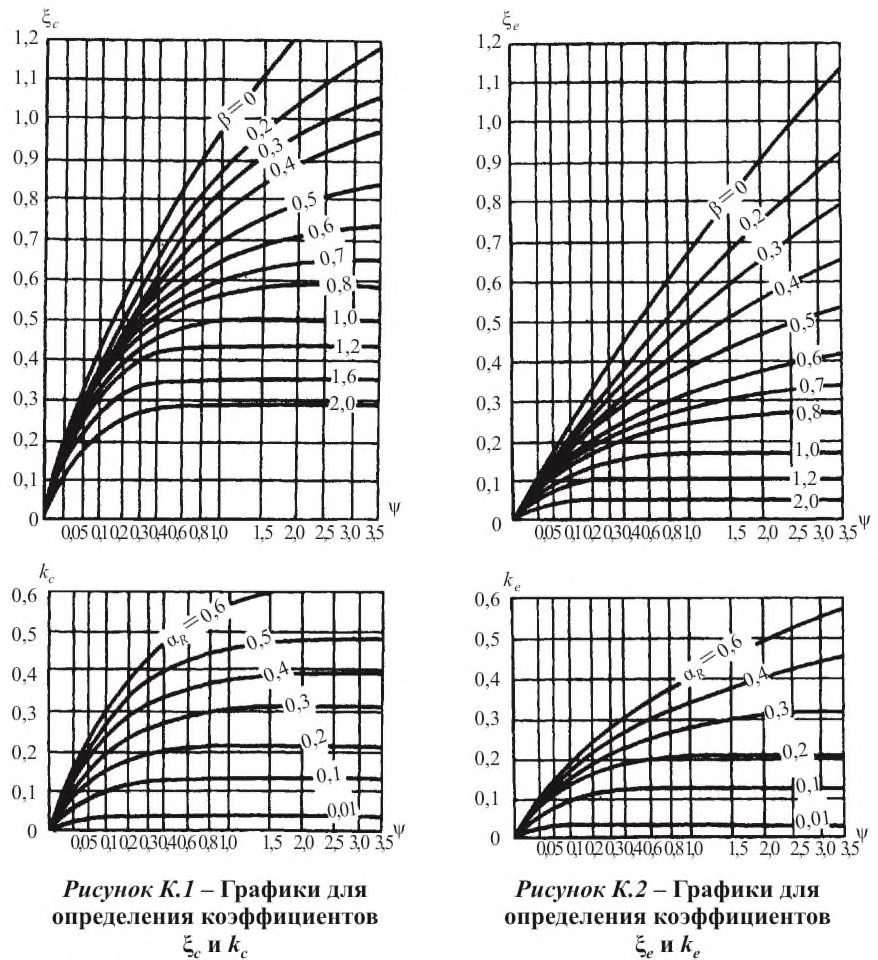
Рисунок К.3 - Графики для определения коэффициентов
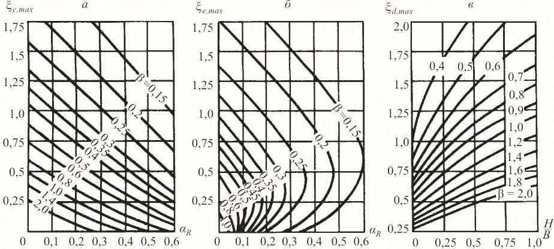
Таблица К.3 Значения коэффициента kd
| H/B | Значения коэффициента k d при , равном | Значения коэффициента k d при , равном | Значения коэффициента k d при , равном | Значения коэффициента k d при , равном | Значения коэффициента k d при , равном |
|---|---|---|---|---|---|
| H/B | 0 - 0,2 | 0,4 | 0,8 | 1,2 | 2,0 |
| 0 | 0,85 | 0,69 | 0,39 | 0,22 | 0,13 |
| 0,25 | 0,88 | 0,76 | 0,62 | 0,48 | 0,29 |
| 0,50 | 0,90 | 0,82 | 0,69 | 0,57 | 0,38 |
| 0,75 | 0,92 | 0,87 | 0,75 | 0,63 | 0,46 |
| 1,00 | 0,93 | 0,90 | 0,78 | 0,66 | 0,51 |
К.5 Максимальная глубина оттаивания грунта под заглубленным сооружением H max, м, определяется по формулам: под серединой сооружения под краем сооружения
где d ,max - коэффициент, определяемый по графикам рисунка К.3, в .
Рисунок К.4 - Графики для определения коэффициента d
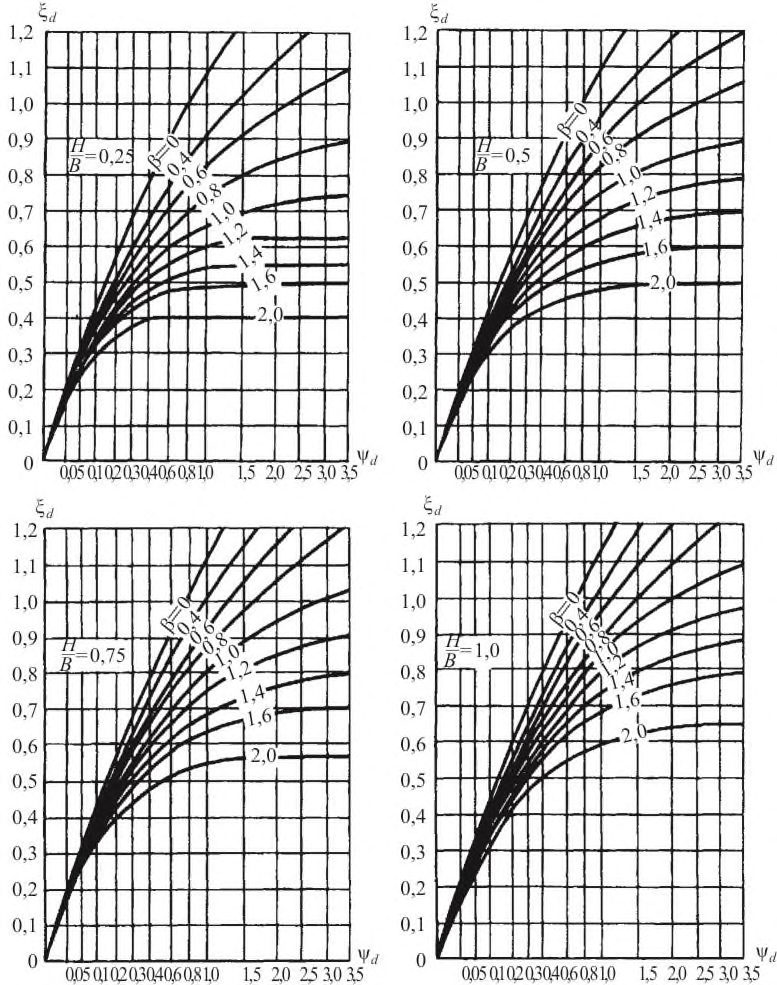
К.6 На участках, где слой сезонного промерзания не сливается с верхней поверхностью многолетнемерзлого грунта, глубина оттаивания грунта под серединой Нс и краем сооружения Не , м (считая от верхней поверхности многолетнемерзлого грунта) за время t , с (ч) определяется по формулам:
где kn - коэффициент, определяемый по К.1, принимая = 0 и = th ; здесь
' c и ' e - коэффициенты, определяемые соответственно по графикам (рисунки К.5 и К.6) в зависимости от значения параметров 0 = hth / B и th ; где hth - глубина залегания верхней поверхности многолетнемерзлого грунта, м.
- К.7 В случаях проведения мероприятий по предварительному оттаиванию или замене грунтов до глубины hb,th (6.4.3) расчетная глубина оттаивания Н , м, (считая от поверхности грунта под сооружением) за время t , с (ч) определяется по формуле
где hc,e - глубина оттаивания грунта под подошвой предварительно оттаянного или замененного слоя грунта, определяемая по формулам (К.13) или (К.14), принимая значения ' c и ' e по графикам (рисунки К.5 и К.6) при значении параметра 0 = hb,th / B .
Рисунок К.5 - Графики для определения коэффициента ' c
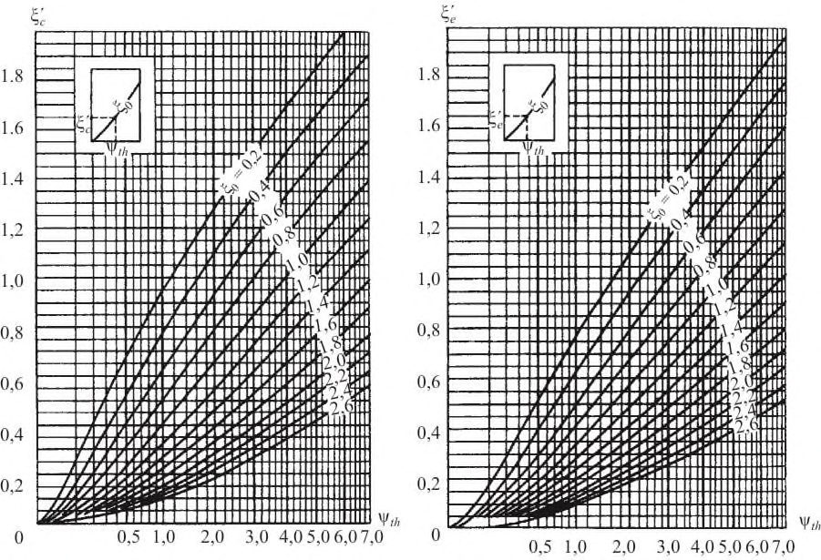
Рисунок К.6 - Графики для определения коэффициента ' e
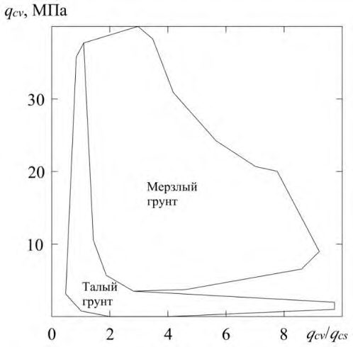
ЛПриложение Л. Определение состояния, свойств и несущей способности оснований свай в многолетнемерзлых грунтах по результатам статического зондирования
Л.1 На территории распространения многолетнемерзлых грунтов статическим зондированием испытывают мерзлые и талые дисперсные грунты, состав и состояние которых позволяет выполнять непрерывное внедрение зонда. Предварительно (при составлении технического задания на изыскания) применимость статического зондирования, в зависимости от грунтовых условий, допускается определять по таблице Л.1.
Таблица Л.1 Применимость статического зондирования в зависимости от грунтовых условий
| Дисперсные грунты | Дисперсные грунты | Дисперсные грунты | Дисперсные грунты | Дисперсные грунты | Дисперсные грунты | ||
|---|---|---|---|---|---|---|---|
| Талые/ охлажденные | Талые/ охлажденные | Талые/ охлажденные | Мерзлые | Мерзлые | Мерзлые | ||
| Вид зонда | Гравийно- галечниковые | Песчаные | Глинистые | Мерзлые песчаные | Пластичномерзлые глинистые | Твердомерзлые глинистые | Ледяные грунты (лед) |
| Зонд без нагревательного элемента (ГОСТ Р 58888, ГОСТ 19912) | В | А-Б | А-Б | В-Г | Б | В-Г | В-Г |
| Зонд с нагревательным элементом в конусе зонда (ГОСТ Р 58961) | В | А-Б | А-Б | Б-Г | А-Б | Б-Г | В |
Примечания
- 1 Применимость: «А» - высокая, «Б» - умеренная, «В» - низкая, «Г» - не применяется.
2 При невозможности достижения заданной глубины вдавливание зонда в грунт выполняют с периодическим разбуриванием согласно примечанию к пункту 5.4.6 ГОСТ 19912-2012.
Статическое зондирование следует выполнять специальными зондами: для температурно-каротажного статического зондирования по ГОСТ Р 58888 (содержающий в том числе температурный датчик в конусе) или термостатического зондирования по ГОСТ Р 58961 (содержающий в том числе температурный датчик и нагревательный элемент в конусе).
Испытания следует выполнять установками тяжелого типа по ГОСТ 19912, обеспечивающими усилие вдавливания и извлечения зонда не менее 100 кН.
Примечание - В соответствии с требованиями технического задания, с учетом цели и задач изысканий, могут использоваться специальные зонды, имеющие другие дополнительные датчики (порового давления, токового каротажа, сейсмоакустический и др.) и устройства, позволяющие измерять дополнительные характеристики грунта или контролировать процесс зондирования.
Статическое зондирование в условиях распространения многолетнемерзлых грунтов применяют в комплексе с другими методами инженерно-геокриологических изысканий для выявления и определения:
- инженерно-геологических элементов;
- пространственной изменчивости состава, состояния и свойств грунтов;
- залегания кровли мерзлых грунтов;
- температуры грунтов;
- состояния (талое, мерзлое) грунтов;
- границ зон оттаивания (замораживания) при оттаивании (замораживании) грунтов;
- засолености и коррозионной активности грунтов, выявления криопегов;
- возможности разжижжения оттаявших песков при динамических и сейсмических воздействиях;
- параметров сейсмомикрорайонирования многолетнемерзлых и оттаявших грунтов;
- характеристик физических, теплофизических, прочностных и деформационных свойств мерзых и талых грунтов;
- механических свойств мерзлых грунтов с учетом их оттаивания;
- возможности погружения (забивки, задавливания, завинчивания) свай до заданной отметки;
- сопротивлений грунта под нижним концом и по боковой поверхности свай;
- степени уплотнения (разуплотнения) и упрочнения (снижения прочности) грунтов во времени и пространстве при их оттаивании (замораживании);
- качества геотехнических работ при инженерной подготовке оснований.
Л.2 Статическое зондирование выполняют в режиме температурно-каротажного статического зондирования по ГОСТ Р 58888 или термостатического зондирования по ГОСТ Р 58961.
При испытании измеряют и фиксируют: удельные сопротивления грунта под конусом и вдоль боковой поверхности муфты трения при вдавливании зонда ( qcv и f sv , кПа), испытании зонда в режиме «стабилизации» ( qcs и f ss , кПа) и в начальный момент дополнительного вдавливания (додавливания) зонда после завершения его вмерзания в грунт в процессе испытания в режиме «стабилизации» ( qci и f si , кПа); температуру Tc , °C, конуса зонда; глубину и скорость вдавливания Vc , м/мин, зонда; время t s , прошедшее после начала режима «стабилизации» зонда. Вмерзание зонда в грунт допускается считать завершенным, если изменение температуры конуса зонда за последние 3 мин составляет не более 0,03 °C.
Л.3 Для предварительных расчетов оснований сооружений нормального и повышенного уровней ответственности, а также для окончательных расчетов оснований сооружений пониженного уровня ответственности в глинистых пластичномерзлых (кроме засоленных и заторфованных) грунтах допускается определять нормативные значения характеристик механических свойств грунтов согласно Л.7, сопротивлений грунтов под нижним концом и по боковой поверхности вертикально нагруженных висячих забивных и бурозабивных свай согласно Л.9.
Окончательные расчеты сооружений допускается выполнять с использованием Л.7, Л.9 в случае выполнения контрольных сопоставлений результатов расчетов по данным статического зондирования и прямых методов испытаний грунтов, выполненных на ключевых участках.
Л.4 При проведении инженерно-геокриологических изысканий под конкретные сооружения статическое зондирование грунтов выполняют в пределах их контуров или на расстояниях от контуров не более 5 м. Для получения сопоставительных данных часть точек зондирования располагают на расстоянии не более 3 м от горных выработок, в которых производят отбор монолитов для лабораторных исследований, и выполняют другие полевые исследования грунтов, но не менее 1 м от границы выработки и не менее 2 м от оси испытуемой сваи.
Расположение точек в плане и глубину статического зондирования необходимо назначать согласно СП 47.13330 с учетом [1, часть IV]. При отсутствии соответствующих указаний, учитывающих особенности проектируемого сооружения, допускается руководствоваться аналогичными указаниями для инженерно-геологических скважин.
Л.5 Состояние грунта и границу между талыми и мерзлыми грунтами по данным зондирования определяют по показаниям температурного датчика зонда и (или) диаграммам, составляемым на основе местного опыта сопоставления результатов бурения разведочных скважин и данных статического зондирования. В случае отсутствия местного опыта для глинистых пластичномерзлых (кроме засоленных и заторфованных) грунтов допускается использовать диаграмму рисунка Л.1, при условии выполнения контрольных сопоставлений с результатами бурения. qcv и qcs - сопротивления грунта под конусом зонда, зафиксированные соответственно при его погружении со скоростью Vc = 0,5 м/мин и через t s =5 мин после начала релаксационно-ползучего режима испытания
Рисунок Л.1 - Диаграмма определения состояния грунта по данным статического зондирования
Л.6 Природную температуру талого, охлажденного и мерзлого грунтов определяют по показаниям температурного датчика зонда, фиксируемым в процессе его «стабилизации», согласно ГОСТ Р 58888.
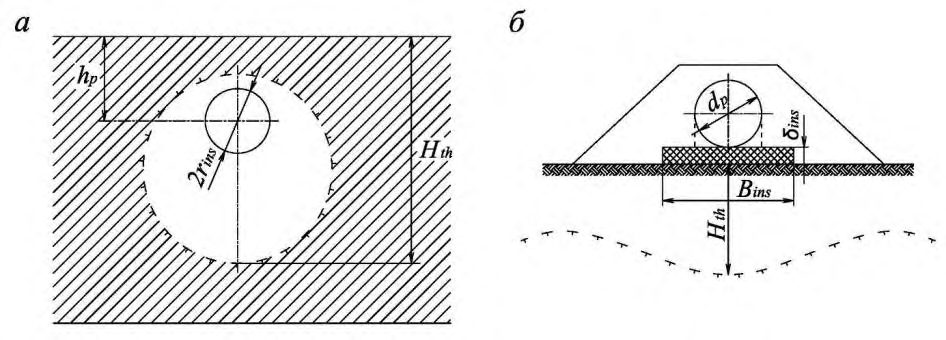
Л.7 Нормативные величины предельно длительных значений эквивалентного сцепления сeq , кПа, и компрессионного модуля деформации Ef , МПа, пластичномерзлых грунтов определяют по таблице Л.2. Расчетные значения характеристик определяют в соответствии с требованиями ГОСТ 20522 с учетом 5.8.
Таблица Л.2 Расчетные значения ceq и Ef
| q cv , кПа | 5000 | 10000 | 15000 | 20000 |
|---|---|---|---|---|
| c eq , кПа | 34 | 96 | 170 | 260 |
| E f , МПа | 16 | 23 | 28 | 32 |
| Примечание - Для промежуточных значений q cv значения c eq и E f определяют интерполяцией. | Примечание - Для промежуточных значений q cv значения c eq и E f определяют интерполяцией. | Примечание - Для промежуточных значений q cv значения c eq и E f определяют интерполяцией. | Примечание - Для промежуточных значений q cv значения c eq и E f определяют интерполяцией. | Примечание - Для промежуточных значений q cv значения c eq и E f определяют интерполяцией. |
Значения характеристик сeq и Ef при расчетной температуре мерзлого грунта определяют на основе откорректированного (корректировка выполняется на основе региональных корреляционных зависимостей между сопротивлением qcv и температурой грунта) значения qcv , соответствующего расчетной температуре грунта или путем умножения их значений, полученных по таблице Л.2, на поправочный температурный коэффициент (определяется на основе региональных корреляционных зависимостей между значениями характеристик сeq и Ef и температурой грунта).
Л.8 Несущую способность основания Fu , кН, вертикально нагруженной висячей сваи в пластичномерзлых грунтах по результатам статического зондирования, определяют по формуле
- где γ t - температурный коэффициент, учитывающий изменения температуры грунтов основания из-за случайных изменений температуры наружного воздуха, определяется по приложению П;
- Fui - частное значение предельно длительного сопротивления основания сваи, определяемое в соответствии с Л.9;
- g - коэффициент надежности по грунту, определяемый в соответствии с требованиями ГОСТ 20522;
- m - коэффициент надежности, учитывающий метод определения несущей способности основания сваи, при использовании результатов статического зондирования принимается:
- а) при отсутствии в зоне проектируемого объекта статических испытаний свай m =1,25,
- б) при проведении на ключевом участке в зоне проектируемого объекта сопоставительных испытаний грунтов сваей статической вдавливающей нагрузкой и статическим зондированием m рассчитывается по формуле
- где Fui - предельно длительное сопротивление основания сваи на ключевом участке, рассчитанное по данным статического зондирования;
- Fu,n - предельно длительное сопротивление основания опытной сваи на ключевом участке, определенное по данным испытания сваи статической нагрузкой;
- n - число точек зондирования.
- Л.9 Частное значение предельно длительного сопротивления основания Fui , кН, вертикально нагруженной висячей сваи в пластичномерзлых грунтах в точке зондирования определяют по формуле
- где k - коэффициент, учитывающий различие в состоянии многолетнемерзлых грунтов в период статического зондирования (при природной температуре грунта) и эксплуатации (при расчетной температуре грунта) проектируемого сооружения, определяемый согласно 7.2.10; при вычислении коэффициента k температура грунта определяется как средняя на участке, расположенном в пределах одного диаметра d выше и четырех диаметров d ниже отметки острия проектируемой сваи (где d диаметр круглого или сторона квадратного сечения сваи, м);
- Rс - удельное предельно длительное сопротивление пластичномерзлого грунта под нижним концом сваи по данным зондирования в рассматриваемой точке, кПа;
- А - площадь поперечного сечения сваи, м² ;
- γ af - коэффициент, зависящий от вида поверхности смерзания, принимаемый согласно В.3;
- Rafс,i - удельное предельно длительное сопротивление пластичномерзлого грунта сдвигу по боковой поверхности смерзания сваи в пределах i -го слоя грунта, кПа;
- Аaf,i - площадь поверхности смерзания i -го слоя грунта с боковой поверхностью сваи, м² .
Удельное предельно длительное сопротивление пластичномерзлого грунта под нижним концом сваи Rс , кПа, по данным статического зондирования в рассматриваемой точке определяется по формуле
Rс =
- где 1 -коэффициент перехода от qс к Rс , принимаемый для забивных и бурозабивных свай по таблице Л.3,
- q сv - среднее значение удельного сопротивления грунта, кПа, под конусом зонда, полученное из опыта, на участке, расположенном в пределах одного диаметра d выше и четырех диаметров d ниже отметки острия проектируемой сваи.
Таблица Л.3 Коэффициент β1
| q cv , кПа | 5000 | 10000 | 15000 | 20000 |
|---|---|---|---|---|
| 1 | 0,42 | 0,31 | 0,25 | 0,22 |
Примечания
- 1 Приведенные значения коэффициента 1 могут использоваться при глубине заложения сваи 5…10 м и погружении ее нижнего конца глубже забоя лидерной скважины не менее чем на четыре диаметра сваи.
- 2 Для промежуточных значений qcv значения 1 определяют интерполяцией.
Удельное предельно длительное сопротивление пластичномерзлого грунта сдвигу по боковой поверхности смерзания сваи в пределах i -го слоя грунта Rafс,i , кПа, по данным статического зондирования в рассматриваемой точке определяется по формуле
где 2 - коэффициент, принимаемый для забивных и бурозабивных свай по таблице Л.4;
- f si - среднее значение удельного сопротивления i -го слоя грунта, кПа, вдоль боковой поверхности муфты трения, измеренное в начальный момент дополнительного вдавливания (додавливания) зонда после завершения его вмерзания в грунт в процессе испытания в режиме «стабилизации».
Таблица Л.4 Коэффициент β2
| f si , кПа | Значения 2 в зависимости от отношения A b / A | Значения 2 в зависимости от отношения A b / A | Значения 2 в зависимости от отношения A b / A | Значения 2 в зависимости от отношения A b / A | Значения 2 в зависимости от отношения A b / A |
|---|---|---|---|---|---|
| f si , кПа | 0,00 | 0,25 | 0,50 | 0,75 | 1,00 |
| 50 | 0,18 | 0,17 | 0,17 | 0,16 | 0,14 |
| 100 | 0,26 | 0,25 | 0,24 | 0,22 | 0,19 |
| 150 | 0,33 | 0,31 | 0,29 | 0,27 | 0,22 |
| 200 | 0,38 | 0,36 | 0,34 | 0,31 | 0,24 |
Для многолетнемерзлых грунтов несливающегося типа сопротивление участка талого грунта сдвигу по боковой поверхности сваи по данным статического зондирования рассчитывается согласно СП 24.13330.
МПриложение М. Контролируемые параметры при геотехническом мониторинге
- М.1 Контролируемые параметры, параметры устройств контроля, применяемые при геотехническом мониторинге сооружений в зависимости от принципа строительства, приведены в таблице М.1.
- М.2 Периодичность измерений контролируемых параметров при проведении геотехнического мониторинга в период строительства и реконструкции в зависимости от принципа строительства приведены в таблице М.2.
- М.3 При мониторинге в сложных геокриологических условиях, а также для уникальных вновь возводимых и реконструируемых сооружений, допускается дополнительно производить фиксацию контролируемых параметров, не указанных в таблицах М.1, М.2.
Таблица М.1 Основные контролируемые параметры при геотехническом мониторинге сооружений
| Контролируемый параметр | Устройство для наблюдения за контролируемым | Параметры устройств | Принципы использования многолетнемерзлых грунтов в качестве основания сооружений | Принципы использования многолетнемерзлых грунтов в качестве основания сооружений | Принципы использования многолетнемерзлых грунтов в качестве основания сооружений |
|---|---|---|---|---|---|
| контроля | I принцип | II принцип | II принцип | ||
| параметром | Предварительное искусственное оттаивание грунтов | Допущение оттаивания грунтов в период эксплуатации сооружения | |||
| Температура грунта | Термометрическая скважина | Количество | Не менее 2 % общего числа фундаментов (свай, столбчатых фундаментов) | Допускается не предусматривать 3) | Не менее 2 % общего числа фундаментов |
| Расположение | У наружных фундаментов и фундаментов, расположенных посредине здания 1) | - | У наружных рядов фундаментов, а также в центре и на расстоянии от центра, равном 0,25- 0,4 ширины здания | ||
| Глубина заложения | Не менее глубины заложения фундаментов 2) | - | На глубину сжимаемого слоя, но не более 20 м 4) |
| Уровень | Гидрогеологическая | Количество | Не менее 2 5) | Не менее 2 5) |
|---|---|---|---|---|
| подземных вод | скважина | Расположение | Одна внутри контура здания, одна снаружи | В контуре здания |
| подземных вод | скважина | Глубина заложения | На глубине заложения фундаментов плюс 5 м, а в случае свайных фундаментов - на глубине заложения свай | На глубине заложения фундаментов плюс 5 м, а в случае свайных фундаментов - на глубине заложения свай |
| Деформация | Геодезическая марка | Расположение | Устанавливаются на угловых фундаментах, в средней части по осям здания по его наружному контуру, а также по обе стороны от осадочных | Устанавливаются на угловых фундаментах, в средней части по осям здания по его наружному контуру, а также по обе стороны от осадочных |
| Температура охлаждающих устройств | Конденсатор охлаждающих устройств | Количество | 100% | - |
- 1) Если в подполье предусмотрен водоотводный лоток, дополнительно необходимо предусматривать скважины у одного или двух фундаментов, расположенных вблизи лотка. Обязательна установка температурных скважин у фундаментов, ближайших к подземному вводу или выпуску санитарно-технических коммуникаций, а при надземной их прокладке - в местах их погружения в грунт, за пределами здания. Для зданий, возведенных с предварительным охлаждением грунтов оснований или их локальным замораживанием, необходимо сохранять термометрические скважины, оборудованные в период проведения работ по охлаждению грунтов.
- 2) В случае выполнения стабилизации верхней границы многолетнемерзлого грунта закладываются в количестве одной-двух скважин в контуре здания на глубину заложения фундаментов плюс 5 м.
- 3) Рекомендуется законсервировать две термометрические скважины под каждую секцию здания, пройденные при проведении предпостроечного оттаивания грунтов.
- 4) На городских санитарно-технических сетях, укладываемых в вентилируемых каналах, контрольные термометрические скважины устанавливают сбоку канала в пазухах выкопанной траншеи и на границе зеленой полосы, под которой расположен канал. Скважины предусматривают на глубину расчетного оттаивания плюс 3 м. Для бесканальных прокладок коммуникаций контрольные термометрические скважины располагают рядом с трубопроводом и на величину одного-двух расчетных радиусов оттаивания в сторону от трубопровода. Скважины проходят на расчетную глубину оттаивания плюс 3 м.
- 5) При строительстве по принципу I при наличии в основании сооружений многолетнемерзлых грунтов 6. сливающегося типа, а также для сооружений с незначительными в плане размерами (шириной не более 6 м и длиной не более 10 м) гидрогеологические скважины допускается не устраивать, а при наличии в основании сооружений многолетнемерзлых грунтов несливающегося типа устраивать одну гидрогеологическую скважину Температуру в контрольных термометрических скважинах измеряют по всей их глубине с интервалами: 0,5 м до глубины 5 м, 1 м - свыше 5 м до глубины 10 м, 2 м - свыше 10 м до глубины 20 м, 3-5 м - свыше 20 м связками инерционных термометров или электротермометров в ручном или автоматическом режимах. При сложных геокриологических условиях (частое переслаивание инженерно-геологических элементов, наличие криопэгов, бугров пучения, прослоев льда толщиной более 0,2 м) допускается уменьшение интервалов измерения температуры грунта. Температуру охлаждающих устройств измеряют тепловизорами.
Таблица М.2 Периодичность проведения измерений контролируемых
параметров в период строительства и реконструкции сооружений
| Контролируемый параметр | Принципы использования многолетнемерзлых грунтов в качестве основания сооружения | Принципы использования многолетнемерзлых грунтов в качестве основания сооружения | Принципы использования многолетнемерзлых грунтов в качестве основания сооружения |
|---|---|---|---|
| I принцип | II принцип | II принцип | |
| I принцип | Предварительное искусственное оттаивание грунтов | Допущение оттаивания грунтов в период эксплуатации сооружения | |
| Температура грунта | Ежемесячно | Ежемесячно | Ежемесячно |
| Уровень подземных вод | Один раз в конце летнего периода | Ежемесячно | Один раз в конце летнего периода |
| Деформации строящегося (реконструируемого) сооружения | Ежемесячно | Ежемесячно | Ежемесячно |
| Деформации сооружения окружающей застройки | Один раз в квартал | Ежемесячно | Один раз в квартал |
| Температура охлаждающих устройств | Ежемесячно в зимний период | - | - |
Примечания
1 При выявлении отклонения значений контролируемых параметров от предельно допустимых, следует предусматривать мероприятия по их стабилизации, с остановкой строительства до завершения мероприятий по стабилизации.
2 Периодичность проведения измерений контролируемых параметров может быть изменена при соответствующем обосновании.
НПриложение Н. Расчет глубины оттаивания и промерзания в основании подземных и наземных магистральных трубопроводов на многолетнемерзлых грунтах
Н.1 Глубину многолетнего оттаивания многолетнемерзлых грунтов под центром горячих и теплых подземных трубопроводов (см. расчетную схему на рисунке Н.1 а ) следует рассчитывать по формуле (Н.1).
где Hth - глубина многолетнего оттаивания, отсчитываемая от дневной поверхности, м; ins r - радиус до внешней образующей изоляции трубы; t , n - безразмерные глубины оттаивания под центром трубы, определяемые по номограммам на рисунках Н.2 и Н.3 в зависимости от безразмерных параметров m , It , T .
Рисунок Н.1 - Расчетная схема для определения глубины многолетнего оттаивания многолетнемерзлых грунтов под теплыми и горячими трубопроводами, проложенными подземно ( а ) и наземно ( б )
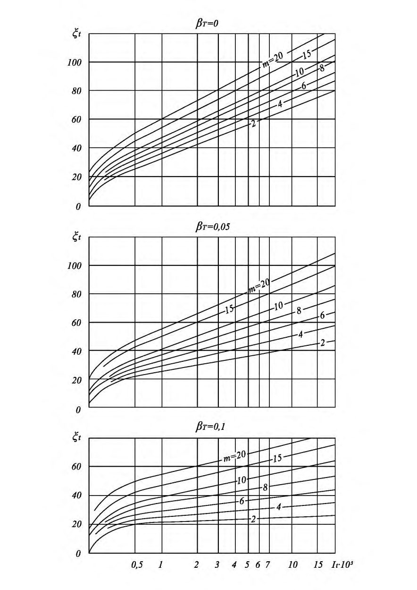
Код поля изменен
Код поля изменен
Код поля изменен
Код поля изменен где hр - глубина заложения подземного трубопровода, считая от дневной поверхности до центра трубы, м; λ f - коэффициент теплопроводности мерзлого грунта, Вт/(м °С); λ th - коэффициент теплопроводности талого грунта, Вт/(м °С);
Tins - средняя годовая температура внешней поверхности кольцевой изоляции трубы, °С, определяется по формуле (Н.5);
Т 0 -температура многолетнемерзлого грунта, °С;
T bf -температура начала промерзания-оттаивания грунта, °С; t - расчетное время, ч;
L v -удельные затраты тепла на оттаивание грунта, Вт ч/м³ , определяются по формуле (Н.7);
I tе -эквивалентное безразмерное время, для многолетнемерзлых грунтов сливающегося типа принимается равным нолю, несливающегося типа определяется по номограмме на рисунке Н.2 при t=H 0/ rins и β T = 0,0 ( H 0 - глубина залегания кровли многолетнемерзлого грунта, м). Для многолетнемерзлых грунтов несливающегося типа безразмерная температура принимается β t = 0,0.
где Tpr - среднегодовая температура продукта, °С;
.
где L 0 - удельная теплота фазовых превращений воды, L 0 = 93 (Вт ч)/кг; f - плотность мерзлого грунта, кг/м³ ; wtot - суммарная влажность мерзлого грунта;
Ww - количество незамерзшей воды в мерзлом грунте при температуре T 0;
Cth , Cf - объемная теплоемкость талого и мерзлого грунта, Вт ч/м³ °С.
Н.2 Глубина многолетнего промерзания грунта под центром холодного трубопровода, расположенного на участке с многолетнемерзлыми грунтами не сливающегося типа Hf принимается равной Hth и рассчитывается по формулам (Н.1), (Н.3), (Н.5), (Н.6), (Н.7) и номограмме (рисунок Н.2) при β t = 0,0. При этом в формуле (Н.3) в качестве Tins следует принять абсолютное значение температуры и Ite = 0,0, а в формуле (Н.7) Сth = Сf = 0,0 и ww = 0,0.
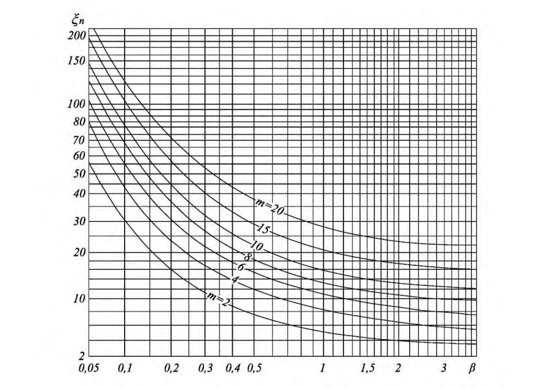
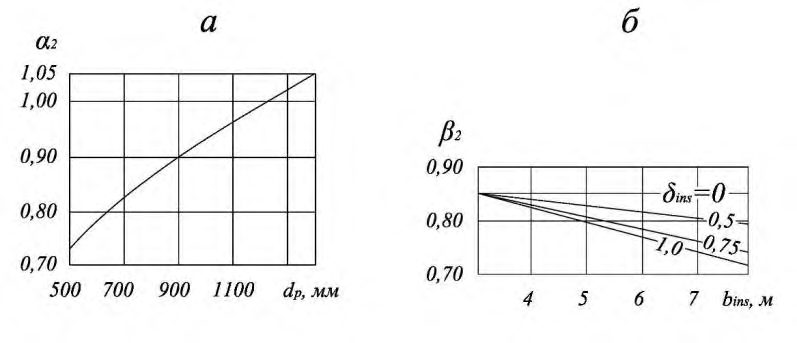
Код поля изменен
Если в результате расчета глубина промерзания Hf окажется больше глубины залегания кровли многолетнемерзлых грунтов, то следует принять Hf = H 0 .
Рисунок Н.2 - Номограмма для определения многолетнего оттаивания многолетнемерзлых грунтов вокруг теплого и горячего трубопроводов
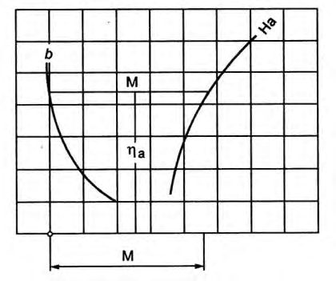
Рисунок Н.3 - Номограмма для определения оттаивания многолетнемерзлых грунтов вокруг холодного трубопровода
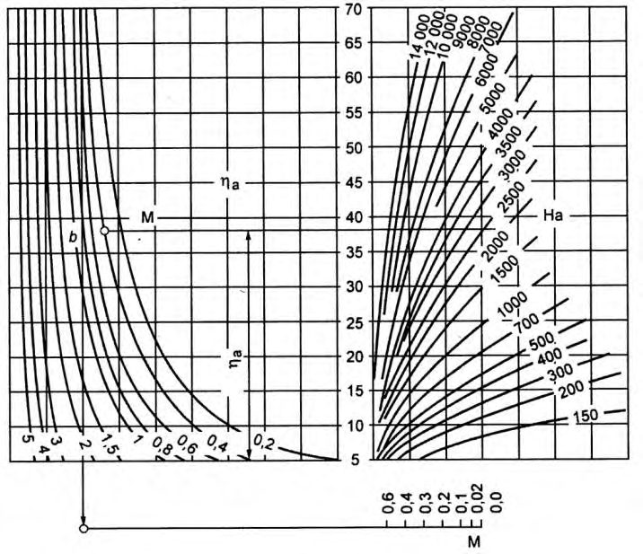
Н.3 Глубину многолетнего оттаивания многолетнемерзлых грунтов под центром горячего и теплого наземных трубопроводов Hth, расположенных на участках с многолетнемерзлыми грунтами сливающегося типа, следует рассчитывать по формуле (см. расчетную схему на рисунке Н.1 б ):
где 2 - безразмерный параметр, определяемый по номограмме (рисунок Н.4 а ) в зависимости от диаметра трубы dp = 2rp ; 2 - безразмерный параметр, определяемый по номограмме (рисунок Н.4 б ) в зависимости от ширины bins и толщины δ ins плоского теплоизолятора, м;
0 1 0,033 T = + - поправочный коэффициент, учитывающий отток тепла в мерзлую зону; v,H -удельные затраты тепла на оттаивание грунта, определяются по формуле (Н.9), Вт ч/м³ ;
S э - эквивалентный слой, определяется по формуле (Н.10), м.
Код поля изменен
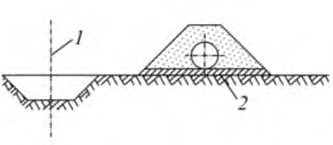
Код поля изменен
Код поля изменен
Рисунок Н.4 - Графики для определения коэффициентов 2 ( а ) и 2 ( б ) при расчете многолетнего оттаивания многолетнемерзлых грунтов под теплыми и горячими трубопроводами
Код поля изменен
ППриложение П. Определение температурного коэффициента
- П.1 Температурный коэффициент t определяется по формуле
где - длительность эксплуатации сооружения на прогнозный период, лет;
- ν - коэффициент вариации несущей способности, безразмерный.
Примечание - Если γ t< 0 , следует принимать γ t =0, в данном случае применять принцип I при проектировании основания фундаментов не допускается, следует предусматривать дополнительное охлаждение грунтов или использовать II принцип строительства. Если γ t > 1, следует принимать γ t =1.
- П.2 Коэффициент вариации несущей способности основания вычисляется по формуле
где Tbf - температура начала замерзания грунта, С, определяемая согласно приложению Б;
- 0 T - расчетная среднегодовая температура на верхней поверхности многолетнемерзлого грунта в основании сооружения, С, определяемая согласно приложению Д, для оснований опор линий электропередачи, антенно-мачтовых опор и трубопроводов 0 T принимается равной среднегодовой температуре многолетнемерзлого грунта 0 T , определяемой согласно приложению Г.
- A - амплитуда сезонных колебаний температуры наружного воздуха, С, определяемая как полуразность значений среднемесячной температуры самого теплого и самого холодного месяца по СП 131.13330;
- Dm,e - коэффициент затухания случайных колебаний температуры с глубиной, безразмерный, определяемый по таблице П.1 и принимаемый равным Dm для столбчатых и ленточных фундаментов и De - для свайных;
- - среднеквадратическое отклонение среднегодовой температуры наружного воздуха, С, определяемое по таблице П.2;
- Tm,e - расчетная температура многолетнемерзлого грунта, С, определяемая по 7.2.7: для оснований сооружений с холодным подпольем по формуле (7.4), для оснований опор линий электропередачи, антенно-мачтовых опор и трубопроводов по формуле (7.7) и принимаемая равной Tm для столбчатых и ленточных фундаментов и Te - для свайных;
- C - коэффициент, град , принимаемый равным 0,24 для свайных фундаментов, а для столбчатых и ленточных - в зависимости от вида грунта под подошвой фундамента: 0 - для крупнообломочных и песчаных грунтов, 0,19 - для супесей и 0,29 - для суглинков и глин.
СП 25.13330.2020
Таблица П.1 Коэффициенты затухания случайных колебаний температуры с глубиной
| Значения 0,5 0,5 / ,c (ч ) f f z c | Значения 0,5 0,5 / ,c (ч ) f f z c | Значения 0,5 0,5 / ,c (ч ) f f z c | Значения 0,5 0,5 / ,c (ч ) f f z c | Значения 0,5 0,5 / ,c (ч ) f f z c | Значения 0,5 0,5 / ,c (ч ) f f z c | Значения 0,5 0,5 / ,c (ч ) f f z c | Значения 0,5 0,5 / ,c (ч ) f f z c | Значения 0,5 0,5 / ,c (ч ) f f z c | Значения 0,5 0,5 / ,c (ч ) f f z c | |
|---|---|---|---|---|---|---|---|---|---|---|
| Коэффициенты | 0 (0) | 1000 (25) | 2000 (50) | 3000 (75) | 4000 (100) | 6000 (125) | 8000 (150) | 10000 (175) | 15000 (250) | 20000 (300) |
| D m | 0 (0) | 0,86 (0,80) | 0,75 (0,66) | 0,66 (0,54) | 0,58 (0,46) | 0,46 (0,39) | 0,37 (0,34) | 0,31 (0,29) | 0,21 (0,21) | 0,16 (0,18) |
| D e | 0 (0) | 0,93 (0,90) | 0,86 (0,79) | 0,79 (0,73) | 0,71 (0,66) | 0,66 (0,60) | 0,58 (0,55) | 0,52 (0,50) | 0,41 (0,41) | 0,34 (0,36) |
Условные обозначения: z -глубина заложения подошвы фундамента от поверхности многолетнемерзлого грунта, м; cf - объемная теплоемкость мерзлого грунта, Дж/(м³ · °С); λ f - теплопроводность мерзлого грунта, Вт/(м · °С).
Таблица П.2 -
Среднеквадратическое отклонение температуры наружного воздуха
| Метеостанция | Широта, град | Долгота, град | , °С | Метеостанция | Широта, град | Долгота, град | , °С |
|---|---|---|---|---|---|---|---|
| 1 | 2 | 3 | 4 | 5 | 6 | 7 | 8 |
| Амурская область | Амурская область | Амурская область | Амурская область | Амурская область | Амурская область | Амурская область | Амурская область |
| Бомнак | 54,7 | 128,9 | 0,83 | Сковородино | 54,0 | 124,0 | 0,86 |
| Джалинда | 53,3 | 124,0 | 0,88 | Тында | 55,2 | 124,7 | 0,93 |
| Ерофей Павлович | 54,0 | 121,9 | 0,88 | Унаха | 55,0 | 126,8 | 1,00 |
| Зея | 53,8 | 127,2 | 1,07 | Усть-Нюкжа | 56,6 | 121,5 | 0,83 |
| Магдагачи | 53,5 | 125,8 | 0,79 | Черняево | 52,8 | 126,0 | 0,80 |
| Нагорный | 56,0 | 124,8 | 0,88 | Экимчан | 53,1 | 133,0 | 0,84 |
| Архангельская область | Архангельская область | Архангельская область | Архангельская область | Архангельская область | Архангельская область | Архангельская область | Архангельская область |
| Абрамовский маяк | 66,5 | 43,3 | 1,17 | Мезень | 65,8 | 44,2 | 1,23 |
| Архангельск | 64,6 | 40,5 | 1,13 | Холмогоры | 64,2 | 41,7 | 1,13 |
| Иркутская область | Иркутская область | Иркутская область | Иркутская область | Иркутская область | Иркутская область | Иркутская область | Иркутская область |
| Алыгджер | 53,6 | 98,2 | 0,82 | Качуг | 54,0 | 105,9 | 0,78 |
| Балаганск | 53,7 | 106,3 | 0,84 | Киренск | 57,8 | 108,1 | 1,29 |
| Бодайбо | 57,9 | 114,2 | 1,15 | Мама | 58,3 | 112,8 | 1,13 |
| Братск | 56,3 | 101,8 | 1,19 | Нижнеудинск | 54,9 | 99,0 | 0,91 |
| Верхняя Гутара | 54,2 | 100,0 | 0,81 | Орлинга | 56,1 | 105,8 | 1,06 |
| Ербогачен | 61,3 | 108,0 | 1,44 | Тайшет | 56,0 | 98,0 | 1,12 |
| Жигалово | 54,8 | 105,2 | 0,98 | Тангуй | 55,4 | 101,0 | 0,99 |
| Зима | 53,9 | 102,1 | 0,93 | Танхой | 51,5 | 105,0 | 0,71 |
| Ика | 59,3 | 106,5 | 1,34 | Тулун | 54,5 | 100,6 | 0,87 |
| Инга | 53,0 | 102,0 | 0,65 | Усть-Илимск | 58,0 | 102,7 | 1,35 |
| Иркутск | 52,3 | 104,4 | 1,10 | Усть-Уда | 54,5 | 103,3 | 0,87 |
| Казачинск | 56,3 | 107,5 | 1,20 | Хамар-Дабан | 51,5 | 103,6 | 0,78 |
средней годовой
Продолжение таблицы П.2
| Метеостанция | Широта, град | Долгота, град | , °С | Метеостанция | Широта, град | Долгота, град | , °С |
|---|---|---|---|---|---|---|---|
| 1 | 2 | 3 | 4 | 5 | 6 | 7 | 8 |
| Камчатский край | Камчатский край | Камчатский край | Камчатский край | Камчатский край | Камчатский край | Камчатский край | Камчатский край |
| Ича | 55,6 | 155,6 | 0,75 | Петропавловск- Камчатский | 53,0 | 158,7 | 0,55 |
| Никольское | 55,2 | 166,0 | 0,50 | Семячики | 54,1 | 160,0 | 0,54 |
| Озерная | 51,5 | 156,5 | 0,63 | Усть-Камчатск | 56,2 | 162,7 | 0,74 |
| Республика Карелия | Республика Карелия | Республика Карелия | Республика Карелия | Республика Карелия | Республика Карелия | Республика Карелия | Республика Карелия |
| Кемь | 65,0 | 34,8 | 1,19 | Гридино | 65,9 | 34,8 | 1,31 |
| Республика Коми | Республика Коми | Республика Коми | Республика Коми | Республика Коми | Республика Коми | Республика Коми | Республика Коми |
| Воркута | 67,5 | 64,0 | 1,35 | Троицко-Печорское | 62,7 | 56,2 | 1,11 |
| Сыктывкар | 61,7 | 50,8 | 1,03 | Усть-Цильма | 65,4 | 52,3 | 1,28 |
| Красноярский край | Красноярский край | Красноярский край | Красноярский край | Красноярский край | Красноярский край | Красноярский край | Красноярский край |
| Агата | 66,9 | 93,5 | 1,31 | Ессей | 68,5 | 102,4 | 1,28 |
| Байкит | 61,7 | 96,4 | 1,42 | Игарка | 67,5 | 86,6 | 1,33 |
| Ванавара | 60,3 | 102,3 | 1,50 | Норильск | 69,5 | 88,3 | 1,49 |
| Верхне- Имбатское | 63,2 | 88,1 | 1,47 | Туруханск | 65,9 | 88,1 | 1,23 |
| Волочанка | 71,0 | 94,5 | 1,41 | Тура | 64,3 | 100,2 | 1,17 |
| Магаданская область | Магаданская область | Магаданская область | Магаданская область | Магаданская область | Магаданская область | Магаданская область | Магаданская область |
| Атка | 60,9 | 151,7 | 1,19 | Магадан, Нагаева бухта | 59,55 | 150,78 | 0,74 |
| Кедон | 64,0 | 158,9 | 1,02 | Сеймчан | 62,92 | 152,42 | 0,96 |
| Мурманская область | Мурманская область | Мурманская область | Мурманская область | Мурманская область | Мурманская область | Мурманская область | Мурманская область |
| Кола | 68,8 | 33,0 | 1,29 | Мурманск | 69,0 | 33,0 | 1,17 |
| Ненецкий автономный округ | Ненецкий автономный округ | Ненецкий автономный округ | Ненецкий автономный округ | Ненецкий автономный округ | Ненецкий автономный округ | Ненецкий автономный округ | Ненецкий автономный округ |
| Амдерма | 69,8 | 61,7 | 1,49 | Малые Кармакулы | 72,4 | 52,7 | 1,30 |
| Канин Нос | 68,7 | 43,3 | 1,13 | Нарьян-Мар | 67,6 | 53,0 | 1,43 |
| Пермская область | Пермская область | Пермская область | Пермская область | Пермская область | Пермская область | Пермская область | Пермская область |
| Бисер | 58,5 | 58,9 | 0,89 | Чердынь | 60,4 | 56,5 | 1,08 |
| Красноярский край | Красноярский край | Красноярский край | Красноярский край | Красноярский край | Красноярский край | Красноярский край | Красноярский край |
| Дудинка | 69,5 | 86,3 | 1,35 | о. Голомянный | 79,6 | 90,6 | 0,98 |
| Им. Е.К. Федорова | 77,7 | 104,3 | 1,11 | о. Диксон | 73,5 | 80,2 | 1,33 |
| Ханты-Мансийский автономный округ | Ханты-Мансийский автономный округ | Ханты-Мансийский автономный округ | Ханты-Мансийский автономный округ | Ханты-Мансийский автономный округ | Ханты-Мансийский автономный округ | Ханты-Мансийский автономный округ | Ханты-Мансийский автономный округ |
| Сургут | 61,4 | 73,5 | 1,16 | Ханты-Мансийск | 61,1 | 69,1 | 1,10 |
| Хабаровский край | Хабаровский край | Хабаровский край | Хабаровский край | Хабаровский край | Хабаровский край | Хабаровский край | Хабаровский край |
| Арка | 60,1 | 142,3 | 0,81 | Николаевск-на- Амуре | 53,1 | 140,7 | 0,58 |
| Аян | 56,5 | 138,2 | 0,70 | о. Большой Сант | 54,8 | 137,5 | 0,70 |
| Богородское | 52,4 | 140,5 | 0,74 | Охотск | 59,4 | 143,2 | 0,73 |
| Бурукан | 53,0 | 136,0 | 0,93 | Софийский прииск | 52,3 | 134,0 | 0,85 |
| Гвасюги | 47,7 | 136,2 | 0,79 | Токо | 56,3 | 131,1 | 1,10 |
| Гуга | 52,7 | 137,5 | 0,98 | Троицкое | 49,5 | 136,6 | 0,73 |
| Им. Полины Осипенко | 52,4 | 136,5 | 0,88 | Чекунда | 50,8 | 132,2 | 0,95 |
Продолжение таблицы П.2
| Метеостанция | Широта, град | Долгота, град | , °С | Метеостанция | Широта, град | Долгота, град | , °С |
|---|---|---|---|---|---|---|---|
| 1 | 2 | 3 | 4 | 5 | 6 | 7 | 8 |
| Забайкальский край | Забайкальский край | Забайкальский край | Забайкальский край | Забайкальский край | Забайкальский край | Забайкальский край | Забайкальский край |
| Акша | 50,3 | 113,3 | 0,78 | Кыра | 49,6 | 112,0 | 0,63 |
| Амазар | 53,7 | 120,7 | 0,78 | Нерчинский з-д | 51,3 | 119,6 | 0,70 |
| Борзя | 50,4 | 116,5 | 0,75 | Хилок | 51,4 | 110,5 | 0,76 |
| Калакан | 55,1 | 116,8 | 0,92 | Чара | 56,9 | 118,3 | 1,07 |
| Красный Чикой | 50,3 | 108,8 | 0,78 | Чита | 52,0 | 113,3 | 0,98 |
| Чукотский автономный округ | Чукотский автономный округ | Чукотский автономный округ | Чукотский автономный округ | Чукотский автономный округ | Чукотский автономный округ | Чукотский автономный округ | Чукотский автономный округ |
| Анадырь | 64,8 | 177,6 | 1,23 | Мыс Шмидта | 68,9 | 180,6 | 1,22 |
| Б. Амбарчик | 69,6 | 162,3 | 0,92 | о. Врангеля | 71,0 | 178,5 | 0,98 |
| Бухта Провидения | 64,4 | 173,2 | 0,97 | Усть-Олой | 66,6 | 159,4 | 0,97 |
| Илирней | 67,3 | 169,0 | 1,20 | Уэлен | 66,2 | 190,8 | 1,48 |
| Марково | 64,7 | 170,4 | 1,00 | Эгвекинот | 66,4 | 179,1 | 1,04 |
| Республика Саха (Якутия) | Республика Саха (Якутия) | Республика Саха (Якутия) | Республика Саха (Якутия) | Республика Саха (Якутия) | Республика Саха (Якутия) | Республика Саха (Якутия) | Республика Саха (Якутия) |
| Алдан | 58,6 | 125,0 | 1,11 | Оленек | 68,5 | 112,4 | 1,21 |
| Амга | 60,9 | 132,0 | 1,17 | Сангар | 64,0 | 127,5 | 1,00 |
| Бестяхская Звероферма | 65,3 | 124,1 | 1,09 | Саскылах | 71,9 | 114,1 | 1,19 |
| Верхоянск | 67,5 | 133,3 | 1,07 | Саханджа | 69,8 | 128,1 | 1,20 |
| Витим | 59,5 | 112,6 | 1,43 | Сеген-Кюель | 64,0 | 130,3 | 0,90 |
| Воронцово | 59,6 | 147,6 | 0,80 | Сиктях | 69,9 | 125,1 | 1,23 |
| Восточная | 63,2 | 139,6 | 0,87 | Собопол | 67,1 | 126,8 | 1,31 |
| Дарпир | 64,2 | 148,0 | 1,12 | Сого-Хая (Усть-Вилюй) | 64,3 | 126,5 | 1,04 |
| Делянкир | 63,8 | 145,6 | 1,00 | Сухана | 68,8 | 117,9 | 1,32 |
| Депутатский | 69,3 | 139,7 | 0,97 | Сюльдюкар | 63,2 | 113,6 | 1,38 |
| Жиганск | 66,8 | 123,4 | 1,07 | Сюрюн-Кюель | 65,0 | 130,7 | 1,05 |
| Жилинда | 70,1 | 113,8 | 1,15 | Тикси | 71,7 | 128,7 | 1,26 |
| Западная | 62,9 | 138,5 | 1,07 | Туой-Хая | 62,5 | 111,2 | 1,45 |
| Зырянка | 65,8 | 150,8 | 0,91 | Усть-Мая | 60,4 | 134,5 | 1,00 |
| Комака | 60,2 | 111,5 | 1,29 | Хатырык-Хомо | 64,0 | 124,8 | 1,06 |
| Кюсюр (Булун) | 70,6 | 127,5 | 1,20 | Чокурдах | 70,7 | 147,9 | 1,02 |
| Маак | 67,8 | 115,5 | 1,49 | Чульман | 56,8 | 124,9 | 0,96 |
| Мирный | 62,5 | 114,0 | 1,29 | Чумпурук | 64,2 | 116,9 | 1,20 |
| Мянгкяра | 68,0 | 123,0 | 1,22 | Шелагонцы | 66,3 | 114,3 | 1,12 |
| Нагорный | 56,0 | 124,9 | 0,97 | Эйк | 66,0 | 117,4 | 1,33 |
| Нюрба | 63,3 | 118,3 | 1,34 | Якутск | 62,1 | 129,5 | 1,15 |
| Оймякон | 63,3 | 143,2 | 0,98 | Ярольин | 67,1 | 108,5 | 1,54 |
Окончание таблицы П.2
| Метеостанция | Широта, град | Долгота, град | , °С | Метеостанция | Широта, град | Долгота, град | , °С |
|---|---|---|---|---|---|---|---|
| 1 | 2 | 3 | 4 | 5 | 6 | 7 | 8 |
| Ямало-Ненецкий автономный округ | Ямало-Ненецкий автономный округ | Ямало-Ненецкий автономный округ | Ямало-Ненецкий автономный округ | Ямало-Ненецкий автономный округ | Ямало-Ненецкий автономный округ | Ямало-Ненецкий автономный округ | Ямало-Ненецкий автономный округ |
| Гыдояма | 70,9 | 78,5 | 1,40 | Салехард | 66,6 | 66,6 | 1,46 |
| Марре-Сале | 69,7 | 66,8 | 1,39 | Тазовский | 67,5 | 78,8 | 1,33 |
| Надым | 65,6 | 72,5 | 1,22 | Тамбей | 71,5 | 71,8 | 1,14 |
| о. Белый | 73,3 | 70,7 | 1,47 | Тарко-Сале | 64,9 | 77,8 | 1,27 |
| Ныда | 66,6 | 73,0 | 1,46 | Уренгой | 66,0 | 78,4 | 1,50 |
| Полуй | 66,0 | 68,7 | 1,44 | Харасавэй | 71,2 | 66,9 | 1,59 |
РПриложение Р. Проектирование и применение охлаждающих устройств
Р.1 Сезоннодействующие охлаждающие устройства или термосифоны, в которых за счет циркуляции газа (фреона, пропана, аммиака и др.) или жидкости (керосина, антифриза, этиленгликоля и др.) охлаждается окружающий грунт, следует применять для сохранения мерзлого состояния грунтов оснований при строительстве и эксплуатации, для предпостроечного замораживания грунтов основания, для повышения несущей способности опор линейных сооружений в пластичномерзлых грунтах, создания ледогрунтовых завес, восстановления нарушенного при эксплуатации сооружения теплового режима грунтов основания фундаментов, упрощения конструктивных решений и технологии нулевого цикла, а также для сокращения сроков строительства и других целей. Охлаждающие устройства могут быть вертикальными, горизонтальными или наклонными с одним или несколькими конденсаторами.
Р.2 Сезоннодействующее парожидкостное охлаждающее устройство представляет собой закрытую сверху и снизу металлическую трубу, в нижней части которой (0,05-0,1 высоты трубы) находится под давлением легкокипящая жидкость. К верхней части трубы для увеличения эффективности установки может быть присоединен выносной конденсатор. Работа парожидкостного охлаждающего устройства основана на конвекции легкокипящей жидкости под влиянием естественной разности температур охлаждаемого массива грунта и атмосферного воздуха. В зимнее время жидкость в нижней части установки, находящейся в грунте, испаряется за счет тепла, поступающего из грунта. Пары жидкости поднимаются вверх и конденсируются на холодных стенках трубы или в конденсаторе, находящихся выше поверхности грунта, отдавая тепло в атмосферу. Конденсат стекает по стенкам трубы в ее нижнюю часть. В летнее время, когда температура воздуха выше, чем температура многолетнемерзлого грунта, пары жидкости в верхней части охлаждающего устройства не конденсируются и действие ее прекращается.
Р.3 Устройство СОУ выполняется в соответствии с проектом, разработанным специализированной организацией. Проект должен содержать теплотехнический расчет, план расположения СОУ, значение глубины заложения устройств, тип теплоносителя и другие параметры. В проекте должны быть указаны требования по эксплуатации устройств и мониторингу за их работоспособностью, температурой охлаждаемого грунтового массива, требования к контролю качества при изготовлении устройств и установке в основание сооружения.
Р.4 Выбор конструкции охлаждающих установок и всей замораживающей системы в целом определяется конструктивными особенностями зданий и сооружений, технологическими особенностями их строительства и эксплуатации, а также температурным режимом грунтов.
Р.5 Устройство системы СОУ следует выполнять до начала зимнего периода. Предпочтительнее использовать охлаждающие устройства, поставляемые с завода в полной эксплуатационной готовности. Для защиты устройства от коррозии следует выполнять антикоррозионное покрытие.
Р.6 При замораживании грунтов одновременно с возведением надземной части сооружения замораживающие колонки должны быть расположены: а) при наличии столбчатых фундаментов - с двух или четырех сторон фундамента; б) при наличии ленточных фундаментов - симметрично их продольной оси с шагом, равным диаметру льдогрунтового цилиндра; в) при наличии свайного фундамента - устанавливая испаритель возле сваи или в теле сваи (конструкция - «термосвая»).
Расчет глубинного охлаждения, замораживания грунта
Методика расчета радиуса охлаждения, замораживания грунта 𝑟 𝑓 , м, вокруг замораживающей колонки осуществляется по номограммам. Для определения радиуса охлаждения, замораживания следует использовать формулу
где p r - внешний радиус замораживающей колонки, м; a - безразмерный параметр, определяемый по номограмме на рисунке Р.1 в зависимости от значений безразмерных параметров b, M, Ha , которые определяются по формулам:
где in R - внутреннее термическое сопротивление колонки теплообмену, м² ·°С/Вт, определяемое для парожидкостных термосифонов по формуле (Р.7), для воздушных и рассольных установок - по формуле (Р.8), для жидкостных термосифонов - по формуле (Р.9);
, f th - теплопроводность грунта в мерзлом и талом состояниях, Вт/(м·°С); bf T - температура начала замерзания грунта, °C; f T - максимальная температура грунта в твердомерзлом состоянии, °C;
0 T -начальная температура грунта у подошвы слоя с годовыми теплооборотами, °C; in T - средняя по длине колонки температура рабочего тела, °C, принимаемая для парожидкостных термосифонов равной средней за период его работы отрицательной температуре наружного воздуха ( , air t T ) плюс 1 °C, для жидкостных термосифонов плюс 4 °C, для воздушных установок - плюс 3 °C, для рассольных установок - равной 1 p T + °C ( p T - температура рассола в подающей магистрали); f t - продолжительность охлаждения, замораживания, ч; охлаждение замораживание
Код поля изменен
Код поля изменен
Код поля изменен
Код поля изменен
Код поля изменен
Код поля изменен
- 0 L - удельная теплота фазовых превращений вода - лед в расчете на единицу массы, 93 Вт·ч/кг;
, , , d f d th - плотность мерзлого и талого грунта в сухом состоянии, кг/м³ ; tot W - суммарная влажность грунта;
Ww - содержание незамерзшей воды при температуре 0 T .
Рисунок Р.1 - Номограмма для расчета радиуса охлаждения и оттаивания
Код поля изменен
Код поля изменен
где out - коэффициент теплообмена между наружным воздухом и поверхностью конденсатора парожидкостного термосифона, Вт/(м² ·°С), определяемый по данным таблицы Р.1; in -коэффициент теплообмена между рабочим телом и внутренней поверхностью колонки, принимаемый для жидкого рабочего тела равным 116 Вт/(м² ·°С), для газообразного - 25 Вт/(м² ·°С);
, e c S S - площади поверхности испарителя и конденсатора термосифона, м² .
Таблица Р.1 Значения out для стальных гладких (числитель) и оребренных (знаменатель) труб конденсатора термосифона
| Радиус трубы конденсатора, мм | Коэффициент теплообмена out , Вт/(м² ·°С), при скорости ветра, м/с | Коэффициент теплообмена out , Вт/(м² ·°С), при скорости ветра, м/с | Коэффициент теплообмена out , Вт/(м² ·°С), при скорости ветра, м/с | Коэффициент теплообмена out , Вт/(м² ·°С), при скорости ветра, м/с | Коэффициент теплообмена out , Вт/(м² ·°С), при скорости ветра, м/с |
|---|---|---|---|---|---|
| Радиус трубы конденсатора, мм | 0 | 2 | 4 | 6 | 8 |
| 17,0 | 6,9/8,7 | 21,0/24,4 | 33,0/37,1 | 45,0/48,7 | 55,0/59,2 |
| 22,0 | 6,5/9,2 | 20,0/24,4 | 31,0/38,3 | 42,0/49,9 | 51,0/60,3 |
| 28,5 | 6,0/11,0 | 17,0/30,2 | 29,0/47,6 | 38,0/61,5 | 48,0/74,2 |
| 36,5 | 5,3/11,2 | 16,0/30,2 | 27,0/47,6 | 36,0/61,5 | 44,0/74,2 |
| 44,5 | 4,9/10,3 | 15,0/26,7 | 26,0/41,8 | 34,0/54,5 | 41,0/65,0 |
| 54,0 | 4,4/8,2 | 15,0/23,2 | 24,0/36,0 | 31,0/47,6 | 38,0/56,8 |
| 63,5 | 4,1/11,8 | 14,0/33,6 | 23,0/53,4 | 30,0/68,4 | 37,0/83,5 |
| 73,0 | 3,6/10,6 | 14,0/29,0 | 22,0/45,2 | 29,0/59,2 | 36,0/71,9 |
| 84,0 | 3,4/10,0 | 13,0/25,5 | 21,0/39,4 | 28,0/52,2 | 35,0/62,6 |
Для воздушных и рассольных установок дополнительно определяется необходимая интенсивность подачи (расход) воздуха или рассола к колонке. Расчет осуществляется по формуле
где . a p G - необходимый расход воздуха или рассола, м³ /ч; p l - длина подземной части колонки, м;
L - количество тепла, отводимого при охлаждении и замораживании 1 м³ грунта, Вт·ч/м³ ;
, C wb - объемная теплоемкость рабочего тела, принимаемая для воздуха равной 0,39 Вт·ч/(м³ ·°С), для рассола - 957 Вт·ч/(м³ ·°С);
T - разность температуры на входе и выходе из колонки, принимаемая равной для воздуха 6 °С, для рассола 2 °С.
Необходимая производительность холодильной станции П, кВт, вычисляется по формуле
где V - объем охлаждаемого, замораживаемого грунта.
В случае многослойного основания все грунтовые характеристики осредняются в интервале глубин от дневной поверхности до уровня погружения замораживающей колонки. Осреднение осуществляется по формуле
где A - осредненное значение грунтовой характеристики; i A - значение грунтовой характеристики в i -м слое; i h - мощность i -го слоя; n - число слоев в интервале осреднения.
Код поля изменен
СП 25.13330.2020
СПриложение С. Способы устройства магистральных трубопроводов на многолетнемерзлых грунтах
С.1 При изысканиях трасс и проектировании магистральных трубопроводов по инженерно-геокриологическим и геоморфологическим признакам местность делят на четыре группы (таблица С.1). По этим признакам прогнозируется влияние будущего трубопровода на окружающую природную среду, в том числе и на многолетнемерзлые грунты, выбирается способ устройства трубопровода (таблица С.2) и назначается его эксплуатационный режим.
Таблица С.1 Классификация местности применительно к трубопроводному Строительству
| Тип участка по сложности строительства | Характеристика местности | Величина относительного сжатия многолетнемерзл ых грунтов при оттаивании | Группа местности |
|---|---|---|---|
| Нормальный | Хорошо дренированные участки террас и гряды, сложенные малольдистыми супесями и песками, многолетнемерзлые грунты несливающегося типа | 0,00 - 0,01 | IV |
| Нормальный | Различного вида болота, кровля мерзлых пород глубже 8 - 10 м | 0,00 - 0,01 | III |
| Сложный | Тундра и лесотундра, местность плохо дренирована, сложена льдистыми суглинками и супесями, мерзлота сливающаяся | 0,01 - 0,10 | II |
| Особо сложный П р и м е ч а | Бугристые и плоские торфяники и солифлюкционные склоны, грунты сильнольдистые, многолетнемерзлые грунты сливающегося типа и е - Устройство трубопроводов на местности | Более 0,1 и II групп выполняют | I только в зимний |
Таблица С.2 - Способы устройства магистральных трубопроводов
| Способ устройства | Преимущества и недостатки | Область применения |
|---|---|---|
| I Подземный способ 1 - хомут для крепления трубопровода к анкерам (от всплытия); 2 - анкер 1 2 | Преимущества: меньшая вероятность повреждений; относительная стабильность внешней среды; технологичность строительства. Недостатки: оттаивание (или промерзание) окружающего грунта с последующими осадками (пучением) трубопровода; необходимость разработки мерзлых грунтов; затруднительность наблюдения и ремонта | IV и III группы местности. Для холодных участков возможна и II группа местности. При теплоизоляции применима для теплых участков на II группе местности |
| II Подземный способ с термоохладителями 1 - хомут анкерного устройства для закрепления газопровода от всплытия; 2 - термоохладители; 3 - верхняя граница многолетнемерзлого грунта 2 1 3 | Преимущества: те же, что и для способа I, а также возможность значительно уменьшить осадки трубопровода. Недостатки: возможность оттаивания на отдельных участках; необходимость разработки мерзлых грунтов; затруднительность наблюдения и ремонта; надзор за термоохладителями II | группа местности для теплых участков |
| III Наземный способ с термоохладителями 1 - насыпь; 2 - талый грунт основания насыпи; 3 - мерзлый грунт основания насыпи; 4 - теплоизоляция; 5 - термоохладители 1 4 2 3 5 | Преимущества: меньшая вероятность повреждений; стабильность (относительная) внешней среды; отсутствие анкерных устройств; технологичность строительства; меньшие (по сравнению с подземной прокладкой) затруднения при наблюдении и ремонте. Недостатки: дополнительные наблюдения за термоохладителями | II группа местности для горячих участков в комбинации с теплоизоляцией. I группа местности при холодных участках с применением теплоизоляции и обвалования |
| IV Наземный способ с использованием местного грунта 1 - канава-резерв; 2 - выравнивающий слой | Преимущества: меньшая вероятность повреждений; стабильность (относительная) внешней среды; отсутствие анкерных устройств; технологичность строительства; меньшие (по сравнению с подземной прокладкой) затруднения при наблюдении и ремонте Недостатки: значительный объем земляных работ | IV и III группы местности. Для холодных участков обвалование необязательно |
|---|---|---|
| V Надземный способ с низкими опорами 1 - железобетонная плита; 2 - ригель; 3 - механизм регулирования опор; 4 - подушка из мелкозернистого уплотненного песка 1 2 3 4 | Преимущества: исключается влияние на мерзлые грунты; отпадает необходимость разработки мерзлых грунтов; легкость наблюдения. Недостатки: дорогое и сложное строительство; дополнительные металловложения; значительный объем разрушений при авариях; нестабильность внешней среды и возможность загустения нефти и других вязких продуктов | II группа местности для горячих участков. I группа местности для теплых участков с величиной относительного сжатия многолетнемерзлых грунтов при оттаивании более 0,1 |
| VI Надземный способ с высокими опорами 1 - пилон; 2 - оголовок сваи; 3 - сваи 1 2 3 | Преимущества: те же, что и для способа V; не мешает миграции диких животных. Недостатки: те же, что и для способа V; необходимость погружения опор в мерзлые грунты | I группа местности для горячих участков и для теплых участков с величиной относительного сжатия многолетнемерзлых грунтов при оттаивании более 0,1. На пересечении с водотоками, железными и автомобильными дорогами |
| VII Надземный способ с качающимися опорами 1 - трубопровод; 2 - опора; 3 - подвеска; 4 - подкладки из бревен 3 1 1 2 4 2 | Преимущества: те же, что и для способа VI; максимально приспособлена к компенсации температурных деформаций труб. Недостатки: те же, что и для способа V | Для трубопроводов диаметром меньше 400 мм, расположенных в сейсмических районах |
С.2 При выборе способов устройства трубопроводов необходимо учитывать просадку грунта при оттаивании и образование (при наличии высокольдистых грунтов и льдов) термокарста при подземном способе устройства горячих трубопроводов на грунтах I и II типов местности. При устройстве холодных трубопроводов в грунтовых условиях III и IV типов необходимо учитывать воздействие на трубопроводы сил морозного пучения.
С.3 При специальном обосновании подземный или наземный способ устройства трубопроводов допускается: на сваях или с вывешиванием (в качестве страховочного мероприятия) трубопроводов на тросах, прикрепляемых к неподвижным опорным системам, расположенным за зоной возможного оттаивания грунтов вокруг трубопроводов. Трос служит для контроля осадок трубопровода и при необходимости его выравнивания.
С.4 В качестве меры предотвращения или снижения оттаивания грунта в основании подземных или наземных трубопроводов следует использовать регулирование температуры транспортируемого по трубопроводу продукта.
Библиография
- [1] СП 11-105-97 Инженерно-геологические изыскания для строительства (ч. I-VI)
- [2] СП 52-101-2003 Бетонные и железобетонные конструкции без предварительного напряжения арматуры
- [3] СП 32-101-95 Проектирование и устройство фундаментов опор мостов в районах распространения вечномерзлых грунтов
- [4] СП 11-102-97 Инженерно-экологические изыскания для строительства
- [5] СП 11-104-97 Инженерно-геодезические изыскания для строительств АО «НИЦ «Строительство»: